SQL
PERFORMANCE
ENGLISH EDITION

ENGLISH EDITION
This ebook is licensed for your personal enjoyment only. This ebook may not be re-sold or given away to other people. If you would like to share this book with another person, please purchase an additional copy for each person. If you’re reading this book and did not purchase it, or it was not purchased for your use only, then please return to
http://SQL-Performance-Explained.com/
and purchase your own copy. Thank you for respecting the hard work of the author.
This copy is licensed to:
GHEORGHE GABRIEL SICHIM <gabriel.sichim@gmail.com>
Publisher:
Markus Winand
Maderspergerstasse 1-3/9/11
1160 Wien
AUSTRIA
<office@winand.at>
Copyright © 2012 Markus Winand
All rights reserved. No part of this publication may be reproduced, stored, or transmitted in any form or by any means—electronic, mechanical, photocopying, recording, or otherwise—without the prior consent of the publisher.
Many of the names used by manufacturers and sellers to distinguish their products are trademarked. Wherever such designations appear in this book, and we were aware of a trademark claim, the names have been printed in all caps or initial caps.
While every precaution has been taken in the preparation of this book, the publisher and author assume no responsibility for errors and omissions, or for damages resulting from the use of the information contained herein.
The book solely reflects the author’s views. The database vendors mentioned have neither supported the work financially nor verified the content.
DGS - Druck- u. Graphikservice GmbH — Wien — Austria
Cover design:
tomasio.design — Mag. Thomas Weninger — Wien — Austria
Cover photo:
Brian Arnold — Turriff — UK
Copy editor:
Nathan Ingvalson — Graz — Austria
2014-08-26
Everything developers need to
know about SQL performance
iv
SQL Performance Explained
ASC, DESC and NULLS FIRST/LAST
134
SQL performance problems are as old as SQL itself—some might even say that SQL is inherently slow. Although this might have been true in the early days of SQL, it is definitely not true anymore. Nevertheless SQL performance problems are still commonplace. How does this happen?
The SQL language is perhaps the most successful fourth-generation programming language (4GL). Its main benefit is the capability to separate “what” and “how”. An SQL statement is a straight description what is needed without instructions as to how to get it done. Consider the following example:
SELECT date_of_birth
FROM employees
WHERE last_name = 'WINAND'The SQL query reads like an English sentence that explains the requested data. Writing SQL statements generally does not require any knowledge about inner workings of the database or the storage system (such as disks, files, etc.). There is no need to tell the database which files to open or how to find the requested rows. Many developers have years of SQL experience yet they know very little about the processing that happens in the database.
The separation of concerns—what is needed versus how to get it—works remarkably well in SQL, but it is still not perfect. The abstraction reaches its limits when it comes to performance: the author of an SQL statement by definition does not care how the database executes the statement. Consequently, the author is not responsible for slow execution. However, experience proves the opposite; i.e., the author must know a little bit about the database to prevent performance problems.
It turns out that the only thing developers need to learn is how to index. Database indexing is, in fact, a development task. That is because the most important information for proper indexing is not the storage system configuration or the hardware setup. The most important information for indexing is how the application queries the data. This knowledge—about
vi
the access path—is not very accessible to database administrators (DBAs) or external consultants. Quite some time is needed to gather this information through reverse engineering of the application: development, on the other hand, has that information anyway.
This book covers everything developers need to know about indexes—and nothing more. To be more precise, the book covers the most important index type only: the B-tree index.
The B-tree index works almost identically in many databases. The book only uses the terminology of the Oracle® database, but the principles apply to other databases as well. Side notes provide relevant information for MySQL, PostgreSQL and SQL Server®.
The structure of the book is tailor-made for developers; most chapters correspond to a particular part of an SQL statement.
The first chapter is the only one that doesn’t cover SQL specifically; it is about the fundamental structure of an index. An understanding of the index structure is essential to following the later chapters—don’t skip this!
Although the chapter is rather short—only about eight pages—after working through the chapter you will already understand the phenomenon of slow indexes.
This is where we pull out all the stops. This chapter explains all aspects of the where clause, from very simple single column lookups to complex clauses for ranges and special cases such as LIKE.
This chapter makes up the main body of the book. Once you learn to use these techniques, you will write much faster SQL.
This chapter is a little digression about performance measurements and database scalability. See why adding hardware is not the best solution to slow queries.
Back to SQL: here you will find an explanation of how to use indexes to perform a fast table join.
vii
Have you ever wondered if there is any difference between selecting a single column or all columns? Here is the answer—along with a trick to get even better performance.
Even order by and group by can use indexes.
This chapter explains how to benefit from a “pipelined” execution if you don’t need the full result set.
How do indexes affect write performance? Indexes don’t come for free—use them wisely!
Asking the database how it executes a statement.
viii
Chapter 1
“An index makes the query fast” is the most basic explanation of an index I have ever seen. Although it describes the most important aspect of an index very well, it is—unfortunately—not sufficient for this book. This chapter describes the index structure in a less superficial way but doesn’t dive too deeply into details. It provides just enough insight for one to understand the SQL performance aspects discussed throughout the book.
An index is a distinct structure in the database that is built using the create index statement. It requires its own disk space and holds a copy of the indexed table data. That means that an index is pure redundancy. Creating an index does not change the table data; it just creates a new data structure that refers to the table. A database index is, after all, very much like the index at the end of a book: it occupies its own space, it is highly redundant, and it refers to the actual information stored in a different place.
Searching in a database index is like searching in a printed telephone directory. The key concept is that all entries are arranged in a well-defined order. Finding data in an ordered data set is fast and easy because the sort order determines each entries position.
1
A database index is, however, more complex than a printed directory because it undergoes constant change. Updating a printed directory for every change is impossible for the simple reason that there is no space between existing entries to add new ones. A printed directory bypasses this problem by only handling the accumulated updates with the next printing. An SQL database cannot wait that long. It must process insert, delete and update statements immediately, keeping the index order without moving large amounts of data.
The database combines two data structures to meet the challenge: a doubly linked list and a search tree. These two structures explain most of the database’s performance characteristics.
The primary purpose of an index is to provide an ordered representation of the indexed data. It is, however, not possible to store the data sequentially because an insert statement would need to move the following entries to make room for the new one. Moving large amounts of data is very time-consuming so the insert statement would be very slow. The solution to the problem is to establish a logical order that is independent of physical order in memory.
The logical order is established via a doubly linked list. Every node has links to two neighboring entries, very much like a chain. New nodes are inserted between two existing nodes by updating their links to refer to the new node. The physical location of the new node doesn’t matter because the doubly linked list maintains the logical order.
The data structure is called a doubly linked list because each node refers to the preceding and the following node. It enables the database to read the index forwards or backwards as needed. It is thus possible to insert new entries without moving large amounts of data—it just needs to change some pointers.
Doubly linked lists are also used for collections (containers) in many programming languages.
2
The Index Leaf Nodes
| Programming Language | Name |
|---|---|
| Java | java.util.LinkedList |
| .NET Framework | System.Collections.Generic.LinkedList |
| C++ | std::list |
Databases use doubly linked lists to connect the so-called index leaf nodes.
Each leaf node is stored in a database block or page; that is, the database’s smallest storage unit. All index blocks are of the same size—typically a few kilobytes. The database uses the space in each block to the extent possible and stores as many index entries as possible in each block. That means that the index order is maintained on two different levels: the index entries within each leaf node, and the leaf nodes among each other using a doubly linked list.
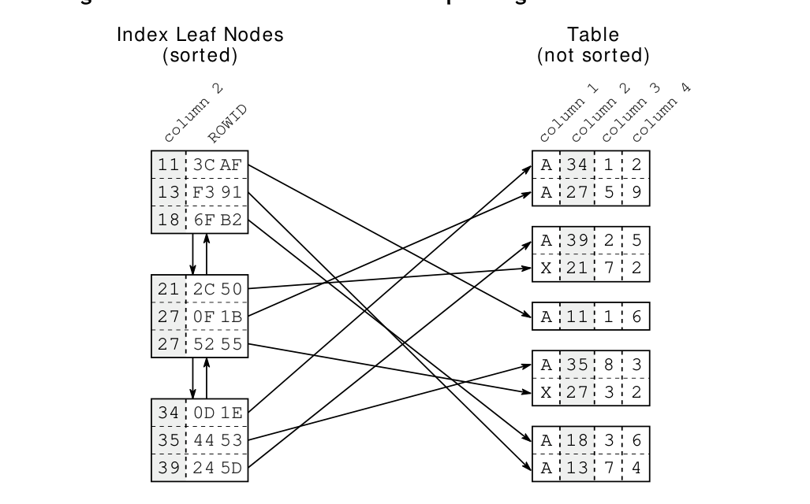
Figure 1.1 illustrates the index leaf nodes and their connection to the table data. Each index entry consists of the indexed columns (the key, column 2) and refers to the corresponding table row (via ROWID or RID). Unlike the index, the table data is stored in a heap structure and is not sorted at all.
There is neither a relationship between the rows stored in the same table block nor is there any connection between the blocks.
3
Chapter 1: Anatomy of an Index
The index leaf nodes are stored in an arbitrary order —the position on the disk does not correspond to the logical position according to the index order. It is like a telephone directory with shuffled pages. If you search for “Smith” but first open the directory at “Robinson”, it is by no means granted that Smith follows Robinson. A database needs a second structure to find the entry among the shuffled pages quickly: a balanced search tree—in short: the B-tree.
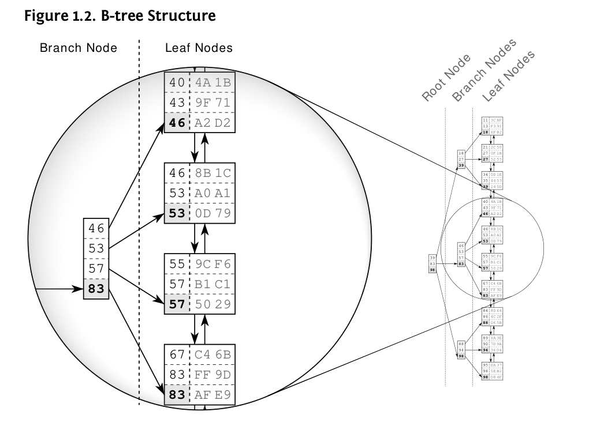
Figure 1.2 shows an example index with 30 entries. The doubly linked list establishes the logical order between the leaf nodes. The root and branch nodes support quick searching among the leaf nodes.
The figure highlights a branch node and the leaf nodes it refers to. Each branch node entry corresponds to the biggest value in the respective leaf node. That is, 46 in the first leaf node so that the first branch node entry is also 46. The same is true for the other leaf nodes so that in the end the
4
branch node has the values 46, 53, 57 and 83. According to this scheme, a branch layer is built up until all the leaf nodes are covered by a branch node. The next layer is built similarly, but on top of the first branch node level. The procedure repeats until all keys fit into a single node, the root node.
The structure is a balanced search tree because the tree depth is equal at every position; the distance between root node and leaf nodes is the same everywhere.
Once created, the database maintains the index automatically. It applies every insert, delete and update to the index and keeps the tree in balance, thus causing maintenance overhead for write operations. Chapter 8, “Modifying Data”, explains this in more detail.

Figure 1.3 shows an index fragment to illustrate a search for the key “57”. The tree traversal starts at the root node on the left-hand side. Each entry is processed in ascending order until a value is greater than or equal to (>=) the search term (57). In the figure it is the entry 83. The database follows the reference to the corresponding branch node and repeats the procedure until the tree traversal reaches a leaf node.
5
The tree traversal is a very efficient operation—so efficient that I refer to it as the first power of indexing. It works almost instantly—even on a huge data set. That is primarily because of the tree balance, which allows accessing all elements with the same number of steps, and secondly because of the logarithmic growth of the tree depth. That means that the tree depth grows very slowly compared to the number of leaf nodes. Real world indexes with millions of records have a tree depth of four or five. A tree depth of six is hardly ever seen. The box “Logarithmic Scalability” describes this in more detail.
Despite the efficiency of the tree traversal, there are still cases where an index lookup doesn’t work as fast as expected. This contradiction has fueled the myth of the “degenerated index” for a long time. The myth proclaims an index rebuild as the miracle solution. The real reason trivial statements can be slow—even when using an index—can be explained on the basis of the previous sections.
The first ingredient for a slow index lookup is the leaf node chain. Consider the search for “57” in Figure 1.3 again. There are obviously two matching entries in the index. At least two entries are the same, to be more precise: the next leaf node could have further entries for “57”. The database must read the next leaf node to see if there are any more matching entries. That means that an index lookup not only needs to perform the tree traversal, it also needs to follow the leaf node chain.
The second ingredient for a slow index lookup is accessing the table. Even a single leaf node might contain many hits—often hundreds. The corresponding table data is usually scattered across many table blocks (see Figure 1.1, “Index Leaf Nodes and Corresponding Table Data”). That means that there is an additional table access for each hit.
An index lookup requires three steps: (1) the tree traversal; (2) following the leaf node chain; (3) fetching the table data. The tree traversal is the only step that has an upper bound for the number of accessed blocks—the index depth. The other two steps might need to access many blocks—they cause a slow index lookup.
6
1 http://en.wikipedia.org/wiki/Logarithm
7
The origin of the “slow indexes” myth is the misbelief that an index lookup just traverses the tree, hence the idea that a slow index must be caused by a “broken” or “unbalanced” tree. The truth is that you can actually ask most databases how they use an index. The Oracle database is rather verbose in this respect and has three distinct operations that describe a basic index lookup:
INDEX UNIQUE SCAN
The INDEX UNIQUE SCAN performs the tree traversal only. The Oracle database uses this operation if a unique constraint ensures that the search criteria will match no more than one entry.
INDEX RANGE SCAN
The INDEX RANGE SCAN performs the tree traversal and follows the leaf node chain to find all matching entries. This is the fallback operation if multiple entries could possibly match the search criteria.
TABLE ACCESS BY INDEX ROWID
The TABLE ACCESS BY INDEX ROWID operation retrieves the row from the table. This operation is (often) performed for every matched record from a preceding index scan operation.
The important point is that an INDEX RANGE SCAN can potentially read a large part of an index. If there is one more table access for each row, the query can become slow even when using an index.
8
Chapter 2
The previous chapter described the structure of indexes and explained the cause of poor index performance. In the next step we learn how to spot and avoid these problems in SQL statements. We start by looking at the where clause.
The where clause defines the search condition of an SQL statement, and it thus falls into the core functional domain of an index: finding data quickly. Although the where clause has a huge impact on performance, it is often phrased carelessly so that the database has to scan a large part of the index. The result: a poorly written where clause is the first ingredient of a slow query.
This chapter explains how different operators affect index usage and how to make sure that an index is usable for as many queries as possible. The last section shows common anti-patterns and presents alternatives that deliver better performance.
The equality operator is both the most trivial and the most frequently used SQL operator. Indexing mistakes that affect performance are still very common and where clauses that combine multiple conditions are particularly vulnerable.
This section shows how to verify index usage and explains how concatenated indexes can optimize combined conditions. To aid understanding, we will analyze a slow query to see the real world impact of the causes explained in Chapter 1.
9
Chapter 2: The Where Clause
We start with the simplest yet most common where clause: the primary key lookup. For the examples throughout this chapter we use the EMPLOYEES table defined as follows:
CREATE TABLE employees (
employee_id NUMBER NOT NULL,
first_name VARCHAR2(1000) NOT NULL,
last_name VARCHAR2(1000) NOT NULL,
date_of_birth DATE NOT NULL,
phone_number VARCHAR2(1000) NOT NULL,
CONSTRAINT employees_pk PRIMARY KEY (employee_id)
);The database automatically creates an index for the primary key. That means there is an index on the EMPLOYEE_ID column, even though there is no create index statement.
The following query uses the primary key to retrieve an employee’s name:
SELECT first_name, last_name
FROM employees
WHERE employee_id = 123The where clause cannot match multiple rows because the primary key constraint ensures uniqueness of the EMPLOYEE_ID values. The database does not need to follow the index leaf nodes—it is enough to traverse the index tree. We can use the so-called execution plan for verification:
---------------------------------------------------------------
|Id |Operation | Name | Rows | Cost |
---------------------------------------------------------------
| 0 |SELECT STATEMENT | | 1 | 2 |
| 1 | TABLE ACCESS BY INDEX ROWID| EMPLOYEES | 1 | 2 |
|*2 | INDEX UNIQUE SCAN | EMPLOYEES_PK | 1 | 1 |
---------------------------------------------------------------
Predicate Information (identified by operation id):
---------------------------------------------------
2 - access("EMPLOYEE_ID"=123)10
The Oracle execution plan shows an INDEX UNIQUE SCAN — the operation that only traverses the index tree. It fully utilizes the logarithmic scalability of the index to find the entry very quickly — almost independent of the table size.
After accessing the index, the database must do one more step to fetch the queried data (FIRST_NAME, LAST_NAME) from the table storage: the TABLE ACCESS BY INDEX ROWID operation. This operation can become a performance bottleneck — as explained in “Slow Indexes, Part I” — but there is no such risk in connection with an INDEX UNIQUE SCAN. This operation cannot deliver more than one entry so it cannot trigger more than one table access. That means that the ingredients of a slow query are not present with an INDEX UNIQUE SCAN.
11
Chapter 2: The Where Clause
Even though the database creates the index for the primary key automatically, there is still room for manual refinements if the key consists of multiple columns. In that case the database creates an index on all primary key columns—a so-called concatenated index (also known as multi-column, composite or combined index). Note that the column order of a concatenated index has great impact on its usability so it must be chosen carefully.
For the sake of demonstration, let’s assume there is a company merger. The employees of the other company are added to our EMPLOYEES table so it becomes ten times as large. There is only one problem: the EMPLOYEE_ID is not unique across both companies. We need to extend the primary key by an extra identifier—e.g., a subsidiary ID. Thus the new primary key has two columns: the EMPLOYEE_ID as before and the SUBSIDIARY_ID to reestablish uniqueness.
The index for the new primary key is therefore defined in the following way:
CREATE UNIQUE INDEX employee_pk
ON employees (employee_id, subsidiary_id);A query for a particular employee has to take the full primary key into account—that is, the SUBSIDIARY_ID column also has to be used:
SELECT first_name, last_name
FROM employees
WHERE employee_id = 123
AND subsidiary_id = 30;---------------------------------------------------------------
|Id |Operation | Name | Rows | Cost |
---------------------------------------------------------------
| 0 |SELECT STATEMENT | | 1 | 2 |
| 1 | TABLE ACCESS BY INDEX ROWID| EMPLOYEES | 1 | 2 |
|*2 | INDEX UNIQUE SCAN | EMPLOYEES_PK | 1 | 1 |
---------------------------------------------------------------
Predicate Information (identified by operation id):
---------------------------------------------------
2 - access("EMPLOYEE_ID"=123 AND "SUBSIDIARY_ID"=30)12
Concatenated Indexes
Whenever a query uses the complete primary key, the database can use an INDEX UNIQUE SCAN—no matter how many columns the index has. But what happens when using only one of the key columns, for example, when searching all employees of a subsidiary?
SELECT first_name, last_name
FROM employees
WHERE subsidiary_id = 20;----------------------------------------------------
| Id | Operation | Name | Rows | Cost |
----------------------------------------------------
| 0 | SELECT STATEMENT | | 106 | 478 |
|* 1 | TABLE ACCESS FULL| EMPLOYEES | 106 | 478 |
----------------------------------------------------
Predicate Information (identified by operation id):
---------------------------------------------------
1 - filter("SUBSIDIARY_ID"=20)The execution plan reveals that the database does not use the index. Instead it performs a FULL TABLE SCAN. As a result the database reads the entire table and evaluates every row against the where clause. The execution time grows with the table size: if the table grows tenfold, the FULL TABLE SCAN takes ten times as long. The danger of this operation is that it is often fast enough in a small development environment, but it causes serious performance problems in production.
13
Chapter 2: The Where Clause
The database does not use the index because it cannot use single columns from a concatenated index arbitrarily. A closer look at the index structure makes this clear.
A concatenated index is just a B-tree index like any other that keeps the indexed data in a sorted list. The database considers each column according to its position in the index definition to sort the index entries. The first column is the primary sort criterion and the second column determines the order only if two entries have the same value in the first column and so on.
The ordering of a two-column index is therefore like the ordering of a telephone directory: it is first sorted by surname, then by first name. That means that a two-column index does not support searching on the second column alone; that would be like searching a telephone directory by first name.

The index excerpt in Figure 2.1 shows that the entries for subsidiary 20 are not stored next to each other. It is also apparent that there are no entries with SUBSIDIARY_ID = 20 in the tree, although they exist in the leaf nodes. The tree is therefore useless for this query.
14
Concatenated Indexes
We could, of course, add another index on SUBSIDIARY_ID to improve query speed. There is however a better solution—at least if we assume that searching on EMPLOYEE_ID alone does not make sense.
We can take advantage of the fact that the first index column is always usable for searching. Again, it is like a telephone directory: you don’t need to know the first name to search by last name. The trick is to reverse the index column order so that the SUBSIDIARY_ID is in the first position:
CREATE UNIQUE INDEX EMPLOYEES_PK
ON EMPLOYEES (SUBSIDIARY_ID, EMPLOYEE_ID);Both columns together are still unique so queries with the full primary key can still use an INDEX UNIQUE SCAN but the sequence of index entries is entirely different. The SUBSIDIARY_ID has become the primary sort criterion. That means that all entries for a subsidiary are in the index consecutively so the database can use the B-tree to find their location.
15
Chapter 2: The Where Clause
The execution plan confirms that the database uses the “reversed” index. The SUBSIDIARY_ID alone is not unique anymore so the database must follow the leaf nodes in order to find all matching entries: it is therefore using the INDEX RANGE SCAN operation.
--------------------------------------------------------------
|Id |Operation | Name | Rows | Cost |
--------------------------------------------------------------
| 0 |SELECT STATEMENT | | 106 | 75 |
| 1 | TABLE ACCESS BY INDEX ROWID| EMPLOYEES | 106 | 75 |
|*2 | INDEX RANGE SCAN | EMPLOYEE_PK | 106 | 2 |
--------------------------------------------------------------
Predicate Information (identified by operation id):
---------------------------------------------------
2 - access("SUBSIDIARY_ID"=20)In general, a database can use a concatenated index when searching with the leading (leftmost) columns. An index with three columns can be used when searching for the first column, when searching with the first two columns together, and when searching using all columns.
Even though the two-index solution delivers very good select performance as well, the single-index solution is preferable. It not only saves storage space, but also the maintenance overhead for the second index. The fewer indexes a table has, the better the insert, delete and update performance.
To define an optimal index you must understand more than just how indexes work—you must also know how the application queries the data. This means you have to know the column combinations that appear in the where clause.
Defining an optimal index is therefore very difficult for external consultants because they don’t have an overview of the application’s access paths. Consultants can usually consider one query only. They do not exploit the extra benefit the index could bring for other queries. Database administrators are in a similar position as they might know the database schema but do not have deep insight into the access paths.
16
Concatenated Indexes
The only place where the technical database knowledge meets the functional knowledge of the business domain is the development department. Developers have a feeling for the data and know the access path. They can properly index to get the best benefit for the overall application without much effort.
17
The previous section explained how to gain additional benefits from an existing index by changing its column order, but the example considered only two SQL statements. Changing an index, however, may affect all queries on the indexed table. This section explains the way databases pick an index and demonstrates the possible side effects when changing existing indexes.
The adopted EMPLOYEE_PK index improves the performance of all queries that search by subsidiary only. It is however usable for all queries that search by SUBSIDIARY_ID—regardless of whether there are any additional search criteria. That means the index becomes usable for queries that used to use another index with another part of the where clause. In that case, if there are multiple access paths available it is the optimizer’s job to choose the best one.
18
Slow Indexes, Part II
Changing an index might have unpleasant side effects as well. In our example, it is the internal telephone directory application that has become very slow since the merger. The first analysis identified the following query as the cause for the slowdown:
SELECT first_name, last_name, subsidiary_id, phone_number
FROM employees
WHERE last_name = 'WINAND'
AND subsidiary_id = 30;The execution plan is:
---------------------------------------------------------------
|Id |Operation | Name | Rows | Cost |
---------------------------------------------------------------
| 0 |SELECT STATEMENT | | 1 | 30 |
|*1 | TABLE ACCESS BY INDEX ROWID| EMPLOYEES | 1 | 30 |
|*2 | INDEX RANGE SCAN | EMPLOYEES_PK | 40 | 2 |
---------------------------------------------------------------
Predicate Information (identified by operation id):
---------------------------------------------------
1 - filter("LAST_NAME"='WINAND')
2 - access("SUBSIDIARY_ID"=30)The execution plan uses an index and has an overall cost value of 30. So far, so good. It is however suspicious that it uses the index we just changed—that is enough reason to suspect that our index change caused the performance problem, especially when bearing the old index definition in mind—it started with the EMPLOYEE_ID column which is not part of the where clause at all. The query could not use that index before.
For further analysis, it would be nice to compare the execution plan before and after the change. To get the original execution plan, we could just deploy the old index definition again, however most databases offer a simpler method to prevent using an index for a specific query. The following example uses an Oracle optimizer hint for that purpose.
SELECT /*+ NO_INDEX(EMPLOYEES EMPLOYEE_PK) */
first_name, last_name, subsidiary_id, phone_number
FROM employees
WHERE last_name = 'WINAND'
AND subsidiary_id = 30;19
Chapter 2: The Where Clause
The execution plan that was presumably used before the index change did not use an index at all:
----------------------------------------------------
| Id | Operation | Name | Rows | Cost |
----------------------------------------------------
| 0 | SELECT STATEMENT | | 1 | 477 |
|* 1 | TABLE ACCESS FULL| EMPLOYEES | 1 | 477 |
----------------------------------------------------
Predicate Information (identified by operation id):
---------------------------------------------------
1 - filter("LAST_NAME"='WINAND' AND "SUBSIDIARY_ID"=30)Even though the TABLE ACCESS FULL must read and process the entire table, it seems to be faster than using the index in this case. That is particularly unusual because the query matches one row only. Using an index to find a single row should be much faster than a full table scan, but in this case it is not. The index seems to be slow.
In such cases it is best to go through each step of the troublesome execution plan. The first step is the INDEX RANGE SCAN on the EMPLOYEES_PK index. That index does not cover the LAST_NAME column—the INDEX RANGE SCAN can consider the SUBSIDIARY_ID filter only; the Oracle database shows this in the “Predicate Information” area—entry “2” of the execution plan. There you can see the conditions that are applied for each operation.
The INDEX RANGE SCAN with operation ID 2 (Example 2.1 on page 19) applies only the SUBSIDIARY_ID=30 filter. That means that it traverses the index tree to find the first entry for SUBSIDIARY_ID 30. Next it follows the leaf node chain to find all other entries for that subsidiary. The result of the INDEX RANGE SCAN is a list of ROWIDs that fulfill the SUBSIDIARY_ID condition: depending on the subsidiary size, there might be just a few ones or there could be many hundreds.
The next step is the TABLE ACCESS BY INDEX ROWID operation. It uses the ROWIDs from the previous step to fetch the rows—all columns—from the table. Once the LAST_NAME column is available, the database can evaluate the remaining part of the where clause. That means the database has to fetch all rows for SUBSIDIARY_ID=30 before it can apply the LAST_NAME filter.
20
Slow Indexes, Part II
The statement’s response time does not depend on the result set size but on the number of employees in the particular subsidiary. If the subsidiary has just a few members, the INDEX RANGE SCAN provides better performance. Nonetheless a TABLE ACCESS FULL can be faster for a huge subsidiary because it can read large parts from the table in one shot (see “Full Table Scan” on page 13).
The query is slow because the index lookup returns many ROWIDs—one for each employee of the original company—and the database must fetch them individually. It is the perfect combination of the two ingredients that make an index slow: the database reads a wide index range and has to fetch many rows individually.
Choosing the best execution plan depends on the table’s data distribution as well so the optimizer uses statistics about the contents of the database. In our example, a histogram containing the distribution of employees over subsidiaries is used. This allows the optimizer to estimate the number of rows returned from the index lookup—the result is used for the cost calculation.
21
Chapter 2: The Where Clause
If there are no statistics available—for example because they were deleted—the optimizer uses default values. The default statistics of the Oracle database suggest a small index with medium selectivity. They lead to the estimate that the INDEX RANGE SCAN will return 40 rows. The execution plan shows this estimation in the Rows column (again, see Example 2.1 on page 19). Obviously this is a gross underestimate, as there are 1000 employees working for this subsidiary.
If we provide correct statistics, the optimizer does a better job. The following execution plan shows the new estimation: 1000 rows for the INDEX RANGE SCAN. Consequently it calculated a higher cost value for the subsequent table access.
---------------------------------------------------------------
|Id |Operation | Name | Rows | Cost |
---------------------------------------------------------------
| 0 |SELECT STATEMENT | | 1 | 680 |
|*1 | TABLE ACCESS BY INDEX ROWID| EMPLOYEES | 1 | 680 |
|*2 | INDEX RANGE SCAN | EMPLOYEES_PK | 1000 | 4 |
---------------------------------------------------------------
Predicate Information (identified by operation id):
---------------------------------------------------
1 - filter("LAST_NAME"='WINAND')
2 - access("SUBSIDIARY_ID"=30)The cost value of 680 is even higher than the cost value for the execution plan using the FULL TABLE SCAN (477, see page 20). The optimizer will therefore automatically prefer the FULL TABLE SCAN.
This example of a slow index should not hide the fact that proper indexing is the best solution. Of course searching on last name is best supported by an index on LAST_NAME:
CREATE INDEX emp_name ON employees (last_name);22
Slow Indexes, Part II
Using the new index, the optimizer calculates a cost value of 3:
--------------------------------------------------------------
| Id | Operation | Name | Rows | Cost |
--------------------------------------------------------------
| 0 | SELECT STATEMENT | | 1 | 3 |
|* 1 | TABLE ACCESS BY INDEX ROWID| EMPLOYEES | 1 | 3 |
|* 2 | INDEX RANGE SCAN | EMP_NAME | 1 | 1 |
--------------------------------------------------------------
Predicate Information (identified by operation id):
---------------------------------------------------
1 - filter("SUBSIDIARY_ID"=30)
2 - access("LAST_NAME"='WINAND')The index access delivers—according to the optimizer’s estimation—one row only. The database thus has to fetch only that row from the table: this is definitely faster than a FULL TABLE SCAN. A properly defined index is still better than the original full table scan.
The two execution plans from Example 2.1 (page 19) and Example 2.2 are almost identical. The database performs the same operations and the optimizer calculated similar cost values, nevertheless the second plan performs much better. The efficiency of an INDEX RANGE SCAN may vary over a wide range—especially when followed by a table access. Using an index does not automatically mean a statement is executed in the best way possible.
23
Chapter 2: The Where Clause
The index on LAST_NAME has improved the performance considerably, but it requires you to search using the same case (upper/lower) as is stored in the database. This section explains how to lift this restriction without a decrease in performance.
UPPER or LOWERIgnoring the case in a where clause is very simple. You can, for example, convert both sides of the comparison to all caps notation:
SELECT first_name, last_name, phone_number
FROM employees
WHERE UPPER(last_name) = UPPER('winand');Regardless of the capitalization used for the search term or the LAST_NAME column, the UPPER function makes them match as desired.
24
Case-Insensitive Search Using UPPER or LOWER
The logic of this query is perfectly reasonable but the execution plan is not:
----------------------------------------------------
| Id | Operation | Name | Rows | Cost |
----------------------------------------------------
| 0 | SELECT STATEMENT | | 10 | 477 |
|* 1 | TABLE ACCESS FULL| EMPLOYEES | 10 | 477 |
----------------------------------------------------
Predicate Information (identified by operation id):
---------------------------------------------------
1 - filter(UPPER("LAST_NAME")='WINAND')It is a return of our old friend the full table scan. Although there is an index on LAST_NAME, it is unusable—because the search is not on LAST_NAME but on UPPER(LAST_NAME). From the database’s perspective, that’s something entirely different.
This is a trap we all might fall into. We recognize the relation between LAST_NAME and UPPER(LAST_NAME) instantly and expect the database to “see” it as well. In reality the optimizer’s view is more like this:
SELECT first_name, last_name, phone_number
FROM employees
WHERE BLACKBOX(...) = 'WINAND';The UPPER function is just a black box. The parameters to the function are not relevant because there is no general relationship between the function’s parameters and the result.
25
Chapter 2: The Where Clause
To support that query, we need an index that covers the actual search term. That means we do not need an index on LAST_NAME but on UPPER(LAST_NAME):
CREATE INDEX emp_up_name
ON employees (UPPER(last_name));An index whose definition contains functions or expressions is a so-called function-based index (FBI). Instead of copying the column data directly into the index, a function-based index applies the function first and puts the result into the index. As a result, the index stores the names in all caps notation.
The database can use a function-based index if the exact expression of the index definition appears in an SQL statement—like in the example above. The execution plan confirms this:
--------------------------------------------------------------
|Id |Operation | Name | Rows | Cost |
--------------------------------------------------------------
| 0 |SELECT STATEMENT | | 100 | 41 |
| 1 | TABLE ACCESS BY INDEX ROWID| EMPLOYEES | 100 | 41 |
|*2 | INDEX RANGE SCAN | EMP_UP_NAME | 40 | 1 |
--------------------------------------------------------------
Predicate Information (identified by operation id):
---------------------------------------------------
2 - access(UPPER("LAST_NAME")='WINAND')It is a regular INDEX RANGE SCAN as described in Chapter 1. The database traverses the B-tree and follows the leaf node chain. There are no dedicated operations or keywords for function-based indexes.
The execution plan is not yet the same as it was in the previous section without UPPER; the row count estimate is too high. It is particularly strange that the optimizer expects to fetch more rows from the table than the INDEX RANGE SCAN delivers in the first place. How can it fetch 100 rows from the table if the preceding index scan returned only 40 rows? The answer is that it can not. Contradicting estimates like this often indicate problems with the statistics. In this particular case it is because the Oracle database
26
Case-Insensitive Search Using UPPER or LOWER
does not update the table statistics when creating a new index (see also “Oracle Statistics for Function-Based Indexes” on page 28).
After updating the statistics, the optimizer calculates more accurate estimates:
--------------------------------------------------------------
|Id |Operation | Name | Rows | Cost |
--------------------------------------------------------------
| 0 |SELECT STATEMENT | | 1 | 3 |
| 1 | TABLE ACCESS BY INDEX ROWID| EMPLOYEES | 1 | 3 |
|*2 | INDEX RANGE SCAN | EMP_UP_NAME | 1 | 1 |
--------------------------------------------------------------
Predicate Information (identified by operation id):
---------------------------------------------------
2 - access(UPPER("LAST_NAME")='WINAND')Although the updated statistics do not improve execution performance in this case—the index was properly used anyway—it is always a good idea to check the optimizer’s estimates. The number of rows processed for each operation (cardinality estimate) is a particularly important figure that is also shown in SQL Server and PostgreSQL execution plans.
SQL Server does not support function-based indexes as described but it does offer computed columns that can be used instead. To make use of this, you have to first add a computed column to the table that can be indexed afterwards:
ALTER TABLE employees ADD last_name_up AS UPPER(last_name);
CREATE INDEX emp_up_name ON employees (last_name_up);SQL Server is able to use this index whenever the indexed expression appears in the statement. You do not need to rewrite your query to use the computed column.
27
Chapter 2: The Where Clause
28
User-Defined Functions
Function-based indexing is a very generic approach. Besides functions like UPPER you can also index expressions like A + B and even use user-defined functions in the index definition.
There is one important exception. It is, for example, not possible to refer to the current time in an index definition, neither directly nor indirectly, as in the following example.
CREATE FUNCTION get_age(date_of_birth DATE)
RETURN NUMBER
AS
BEGIN
RETURN
TRUNC(MONTHS_BETWEEN(SYSDATE, date_of_birth)/12);
END;
/The function GET_AGE uses the current date (SYSDATE) to calculate the age based on the supplied date of birth. You can use this function in all parts of an SQL query, for example in select and the where clauses:
SELECT first_name, last_name, get_age(date_of_birth)
FROM employees
WHERE get_age(date_of_birth) = 42;The query lists all 42-year-old employees. Using a function-based index is an obvious idea for optimizing this query, but you cannot use the function GET_AGE in an index definition because it is not deterministic. That means the result of the function call is not fully determined by its parameters. Only functions that always return the same result for the same parameters—functions that are deterministic—can be indexed.
The reason behind this limitation is simple. When inserting a new row, the database calls the function and stores the result in the index and there it stays, unchanged. There is no periodic process that updates the index. The database updates the indexed age only when the date of birth is changed by an update statement. After the next birthday, the age that is stored in the index will be wrong.
29
Chapter 2: The Where Clause
Besides being deterministic, PostgreSQL and the Oracle database require functions to be declared to be deterministic when used in an index so you have to use the keyword DETERMINISTIC (Oracle) or IMMUTABLE (PostgreSQL).
Other examples for functions that cannot be “indexed” are random number generators and functions that depend on environment variables.
30
Over-Indexing
If the concept of function-based indexing is new to you, you might be tempted to just index everything, but this is in fact the very last thing you should do. The reason is that every index causes ongoing maintenance. Function-based indexes are particularly troublesome because they make it very easy to create redundant indexes.
The case-insensitive search from above could be implemented with the LOWER function as well:
SELECT first_name, last_name, phone_number
FROM employees
WHERE LOWER(last_name) = LOWER('winand');A single index cannot support both methods of ignoring the case. We could, of course, create a second index on LOWER(last_name) for this query, but that would mean the database has to maintain two indexes for each insert, update, and delete statement (see also Chapter 8, “Modifying Data”). To make one index suffice, you should consistently use the same function throughout your application.
31
Chapter 2: The Where Clause
This section covers a topic that is skipped in most SQL textbooks:
parameterized queries and bind parameters.
Bind parameters—also called dynamic parameters or bind variables—are an alternative way to pass data to the database. Instead of putting the values directly into the SQL statement, you just use a placeholder like ?, :name or @name and provide the actual values using a separate API call.
There is nothing bad about writing values directly into ad-hoc statements; there are, however, two good reasons to use bind parameters in programs:
Security
Bind variables are the best way to prevent SQL injection1.
Performance
Databases with an execution plan cache like SQL Server and the Oracle database can reuse an execution plan when executing the same statement multiple times. It saves effort in rebuilding the execution plan but works only if the SQL statement is exactly the same. If you put different values into the SQL statement, the database handles it like a different statement and recreates the execution plan.
When using bind parameters you do not write the actual values but instead insert placeholders into the SQL statement. That way the statements do not change when executing them with different values.
1 http://en.wikipedia.org/wiki/SQL_injection
32
Parameterized Queries
Naturally there are exceptions, for example if the affected data volume depends on the actual values:
99 rows selected.
SELECT first_name, last_name
FROM employees
WHERE subsidiary_id = 20;
---------------------------------------------------------------
|Id | Operation | Name | Rows | Cost |
---------------------------------------------------------------
| 0 | SELECT STATEMENT | | 99 | 70 |
| 1 | TABLE ACCESS BY INDEX ROWID| EMPLOYEES | 99 | 70 |
|*2 | INDEX RANGE SCAN | EMPLOYEE_PK | 99 | 2 |
---------------------------------------------------------------
Predicate Information (identified by operation id):
---------------------------------------------------
2 - access("SUBSIDIARY_ID"=20)An index lookup delivers the best performance for small subsidiaries, but a TABLE ACCESS FULL can outperform the index for large subsidiaries:
1000 rows selected.
SELECT first_name, last_name
FROM employees
WHERE subsidiary_id = 30;
----------------------------------------------------
| Id | Operation | Name | Rows | Cost |
----------------------------------------------------
| 0 | SELECT STATEMENT | | 1000 | 478 |
|* 1 | TABLE ACCESS FULL| EMPLOYEES | 1000 | 478 |
----------------------------------------------------
Predicate Information (identified by operation id):
---------------------------------------------------
1 - filter("SUBSIDIARY_ID"=30)In this case, the histogram on SUBSIDIARY_ID fulfills its purpose. The optimizer uses it to determine the frequency of the subsidiary ID mentioned in the SQL query. Consequently it gets two different row count estimates for both queries.
33
Chapter 2: The Where Clause
The subsequent cost calculation will therefore result in two different cost values. When the optimizer finally selects an execution plan it takes the plan with the lowest cost value. For the smaller subsidiary, it is the one using the index.
The cost of the TABLE ACCESS BY INDEX ROWID operation is highly sensitive to the row count estimate. Selecting ten times as many rows will elevate the cost value by that factor. The overall cost using the index is then even higher than a full table scan. The optimizer will therefore select the other execution plan for the bigger subsidiary.
When using bind parameters, the optimizer has no concrete values available to determine their frequency. It then just assumes an equal distribution and always gets the same row count estimates and cost values. In the end, it will always select the same execution plan.
If we compare the optimizer to a compiler, bind variables are like program variables, but if you write the values directly into the statement they are more like constants. The database can use the values from the SQL statement during optimization just like a compiler can evaluate constant expressions during compilation. Bind parameters are, put simply, not visible to the optimizer just as the runtime values of variables are not known to the compiler.
From this perspective, it is a little bit paradoxical that bind parameters can improve performance if not using bind parameters enables the optimizer to always opt for the best execution plan. But the question is at what price? Generating and evaluating all execution plan variants is a huge effort that does not pay off if you get the same result in the end anyway.
34
Parameterized Queries
Deciding to build a specialized or generic execution plan presents a dilemma for the database. Either effort is taken to evaluate all possible plan variants for each execution in order to always get the best execution plan or the optimization overhead is saved and a cached execution plan is used whenever possible—accepting the risk of using a suboptimal execution plan. The quandary is that the database does not know if the full optimization cycle delivers a different execution plan without actually doing the full optimization. Database vendors try to solve this dilemma with heuristic methods—but with very limited success.
As the developer, you can use bind parameters deliberately to help resolve this dilemma. That is, you should always use bind parameters except for values that shall influence the execution plan.
Unevenly distributed status codes like “todo” and “done” are a good example. The number of “done” entries often exceeds the “todo” records by an order of magnitude. Using an index only makes sense when searching for “todo” entries in that case. Partitioning is another example—that is, if you split tables and indexes across several storage areas. The actual values can then influence which partitions have to be scanned. The performance of LIKE queries can suffer from bind parameters as well as we will see in the next section.
The following code snippets show how to use bind parameters in various programming languages.
35
Chapter 2: The Where Clause
C#
Without bind parameters:
int subsidiary_id;
SqlCommand cmd = new SqlCommand(
"select first_name, last_name"
+ " from employees"
+ " where subsidiary_id = " + subsidiary_id
, connection);Using a bind parameter:
int subsidiary_id;
SqlCommand cmd =
new SqlCommand(
"select first_name, last_name"
+ " from employees"
+ " where subsidiary_id = @subsidiary_id"
, connection);
cmd.Parameters.AddWithValue("@subsidiary_id", subsidiary_id);See also: SqlParameterCollection class documentation.
Java
Without bind parameters:
int subsidiary_id;
Statement command = connection.createStatement(
"select first_name, last_name"
+ " from employees"
+ " where subsidiary_id = " + subsidiary_id
);Using a bind parameter:
int subsidiary_id;
PreparedStatement command = connection.prepareStatement(
"select first_name, last_name"
+ " from employees"
+ " where subsidiary_id = ?"
);
command.setInt(1, subsidiary_id);See also: PreparedStatement class documentation.
36
Parameterized Queries
Perl
Without bind parameters:
my $subsidiary_id;
my $sth = $dbh->prepare(
"select first_name, last_name"
. " from employees"
. " where subsidiary_id = $subsidiary_id"
);
$sth->execute();Using a bind parameter:
my $subsidiary_id;
my $sth = $dbh->prepare(
"select first_name, last_name"
. " from employees"
. " where subsidiary_id = ?"
);
$sth->execute($subsidiary_id);See: Programming the Perl DBI.
PHP
Using MySQL, without bind parameters:
$mysqli->query("select first_name, last_name"
. " from employees"
. " where subsidiary_id = " . $subsidiary_id);Using a bind parameter:
if ($stmt = $mysqli->prepare("select first_name, last_name"
. " from employees"
. " where subsidiary_id = ?"))
{
$stmt->bind_param("i", $subsidiary_id);
$stmt->execute();
} else {
/* handle SQL error */
}See also: mysqli_stmt::bind_param class documentation and “Prepared statements and stored procedures” in the PDO documentation.
37
Chapter 2: The Where Clause
Ruby
Without bind parameters:
dbh.execute("select first_name, last_name"
+ " from employees"
+ " where subsidiary_id = #{subsidiary_id}");Using a bind parameter:
dbh.prepare("select first_name, last_name"
+ " from employees"
+ " where subsidiary_id = ?");
dbh.execute(subsidiary_id);See also: “Quoting, Placeholders, and Parameter Binding” in the Ruby DBI Tutorial.
The question mark (?) is the only placeholder character that the SQL standard defines. Question marks are positional parameters. That means the question marks are numbered from left to right. To bind a value to a particular question mark, you have to specify its number. That can, however, be very impractical because the numbering changes when adding or removing placeholders. Many databases offer a proprietary extension for named parameters to solve this problem—e.g., using an “at” symbol (@name) or a colon (:name).
If you need to change the structure of an SQL statement during runtime, use dynamic SQL.
38
Searching for Ranges
Inequality operators such as <, > and between can use indexes just like the equals operator explained above. Even a LIKE filter can—under certain circumstances—use an index just like range conditions do.
Using these operations limits the choice of the column order in multi-column indexes. This limitation can even rule out all optimal indexing options—there are queries where you simply cannot define a “correct” column order at all.
The biggest performance risk of an INDEX RANGE SCAN is the leaf node traversal. It is therefore the golden rule of indexing to keep the scanned index range as small as possible. You can check that by asking yourself where an index scan starts and where it ends.
39
Chapter 2: The Where Clause
The question is easy to answer if the SQL statement mentions the start and stop conditions explicitly:
SELECT first_name, last_name, date_of_birth
FROM employees
WHERE date_of_birth >= TO_DATE(?, 'YYYY-MM-DD')
AND date_of_birth <= TO_DATE(?, 'YYYY-MM-DD')An index on DATE_OF_BIRTH is only scanned in the specified range. The scan starts at the first date and ends at the second. We cannot narrow the scanned index range any further.
The start and stop conditions are less obvious if a second column becomes involved:
SELECT first_name, last_name, date_of_birth
FROM employees
WHERE date_of_birth >= TO_DATE(?, 'YYYY-MM-DD')
AND date_of_birth <= TO_DATE(?, 'YYYY-MM-DD')
AND subsidiary_id = ?Of course an ideal index has to cover both columns, but the question is in which order?
The following figures show the effect of the column order on the scanned index range. For this illustration we search all employees of subsidiary 27 who were born between January 1st and January 9th 1971.
Figure 2.2 visualizes a detail of the index on DATE_OF_BIRTH and SUBSIDIARY_ID—in that order. Where will the database start to follow the leaf node chain, or to put it another way: where will the tree traversal end?
The index is ordered by birth dates first. Only if two employees were born on the same day is the SUBSIDIARY_ID used to sort these records. The query, however, covers a date range. The ordering of SUBSIDIARY_ID is therefore useless during tree traversal. That becomes obvious if you realize that there is no entry for subsidiary 27 in the branch nodes—although there is one in the leaf nodes. The filter on DATE_OF_BIRTH is therefore the only condition that limits the scanned index range. It starts at the first entry matching the date range and ends at the last one—all five leaf nodes shown in Figure 2.2.
40
Greater, Less and BETWEEN
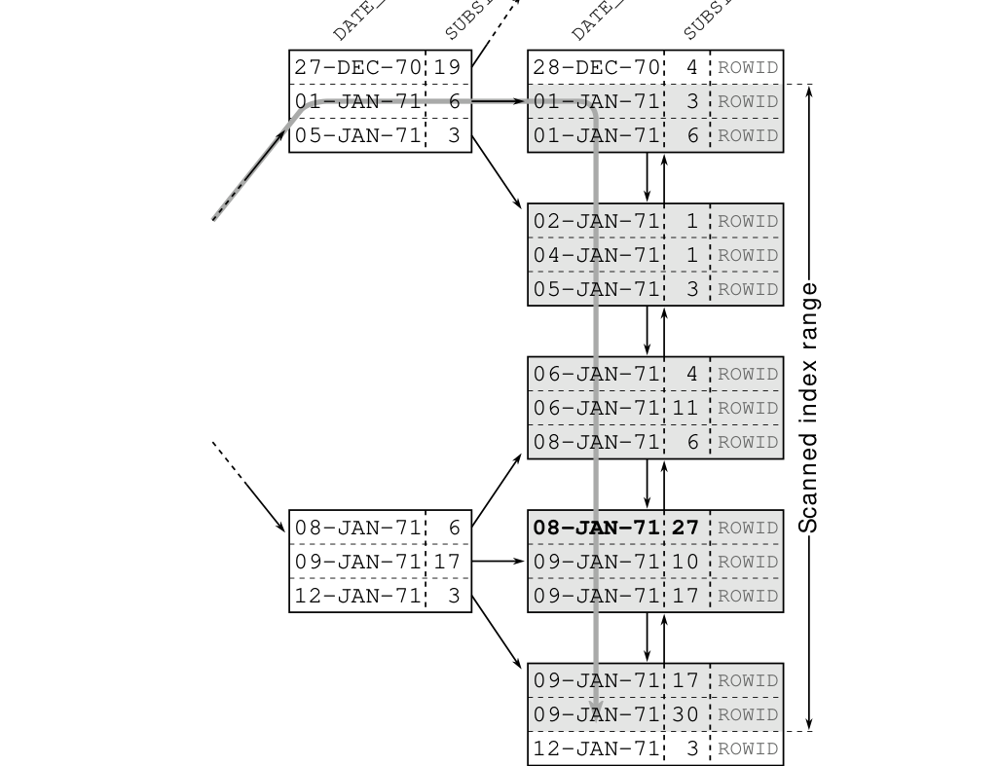
The picture looks entirely different when reversing the column order. Figure 2.3 illustrates the scan if the index starts with the SUBSIDIARY_ID column.
The difference is that the equals operator limits the first index column to a single value. Within the range for this value (SUBSIDIARY_ID 27) the index is sorted according to the second column—the date of birth—so there is no need to visit the first leaf node because the branch node already indicates that there is no employee for subsidiary 27 born after June 25th 1969 in the first leaf node.
41
Chapter 2: The Where Clause
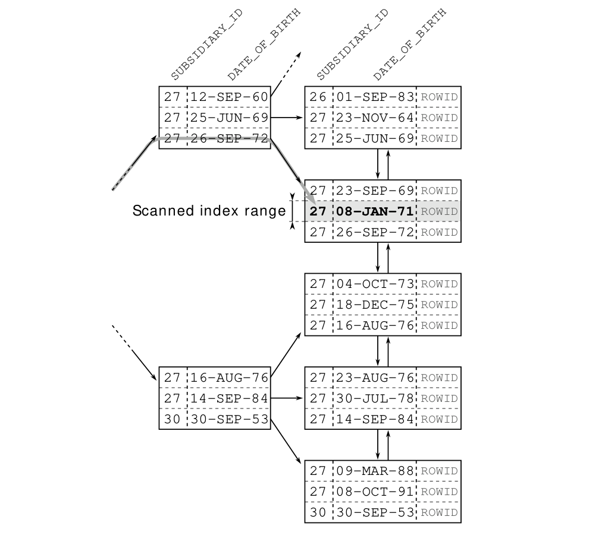
The tree traversal directly leads to the second leaf node. In this case, all where clause conditions limit the scanned index range so that the scan terminates at the very same leaf node.
The actual performance difference depends on the data and search criteria. The difference can be negligible if the filter on DATE_OF_BIRTH is very selective on its own. The bigger the date range becomes, the bigger the performance difference will be.
42
Greater, Less and BETWEEN
With this example, we can also falsify the myth that the most selective column should be at the leftmost index position. If we look at the figures and consider the selectivity of the first column only, we see that both conditions match 13 records. This is the case regardless whether we filter by DATE_OF_BIRTH only or by SUBSIDIARY_ID only. The selectivity is of no use here, but one column order is still better than the other.
To optimize performance, it is very important to know the scanned index range. With most databases you can even see this in the execution plan—you just have to know what to look for. The following execution plan from the Oracle database unambiguously indicates that the EMP_TEST index starts with the DATE_OF_BIRTH column.
--------------------------------------------------------------
|Id | Operation | Name | Rows | Cost |
--------------------------------------------------------------
| 0 | SELECT STATEMENT | | 1 | 4 |
|*1 | FILTER | | | |
| 2 | TABLE ACCESS BY INDEX ROWID| EMPLOYEES | 1 | 4 |
|*3 | INDEX RANGE SCAN | EMP_TEST | 2 | 2 |
--------------------------------------------------------------
Predicate Information (identified by operation id):
---------------------------------------------------
1 - filter(:END_DT >= :START_DT)
3 - access(DATE_OF_BIRTH >= :START_DT
AND DATE_OF_BIRTH <= :END_DT)
filter(SUBSIDIARY_ID = :SUBS_ID)The predicate information for the INDEX RANGE SCAN gives the crucial hint. It identifies the conditions of the where clause either as access or as filter predicates. This is how the database tells us how it uses each condition.
The conditions on the DATE_OF_BIRTH column are the only ones listed as access predicates; they limit the scanned index range. The DATE_OF_BIRTH is therefore the first column in the EMP_TEST index. The SUBSIDIARY_ID column is used only as a filter.
43
Chapter 2: The Where Clause
The database can use all conditions as access predicates if we turn the index definition around:
---------------------------------------------------------------
| Id | Operation | Name | Rows | Cost |
---------------------------------------------------------------
| 0 | SELECT STATEMENT | | 1 | 3 |
|* 1 | FILTER | | | |
| 2 | TABLE ACCESS BY INDEX ROWID| EMPLOYEES | 1 | 3 |
|* 3 | INDEX RANGE SCAN | EMP_TEST2 | 1 | 2 |
---------------------------------------------------------------
Predicate Information (identified by operation id):
---------------------------------------------------
1 - filter(:END_DT >= :START_DT)
3 - access(SUBSIDIARY_ID = :SUBS_ID
AND DATE_OF_BIRTH >= :START_DT
AND DATE_OF_BIRTH <= :END_DT)Finally, there is the between operator. It allows you to specify the upper and lower bounds in a single condition:
DATE_OF_BIRTH BETWEEN '01-JAN-71'
AND '10-JAN-71'Note that between always includes the specified values, just like using the less than or equal to (<=) and greater than or equal to (>=) operators:
DATE_OF_BIRTH >= '01-JAN-71'
AND DATE_OF_BIRTH <= '10-JAN-71'44
Indexing LIKE Filters
The SQL LIKE operator very often causes unexpected performance behavior because some search terms prevent efficient index usage. That means that there are search terms that can be indexed very well, but others can not. It is the position of the wildcard characters that makes all the difference.
The following example uses the % wildcard in the middle of the search term:
SELECT first_name, last_name, date_of_birth
FROM employees
WHERE UPPER(last_name) LIKE 'WIN%D'---------------------------------------------------------------
|Id | Operation | Name | Rows | Cost |
---------------------------------------------------------------
| 0 | SELECT STATEMENT | | 1 | 4 |
| 1 | TABLE ACCESS BY INDEX ROWID| EMPLOYEES | 1 | 4 |
|* 2 | INDEX RANGE SCAN | EMP_UP_NAME | 1 | 2 |
---------------------------------------------------------------LIKE filters can only use the characters before the first wildcard during tree traversal. The remaining characters are just filter predicates that do not narrow the scanned index range. A single LIKE expression can therefore contain two predicate types: (1) the part before the first wildcard as an access predicate; (2) the other characters as a filter predicate.
The more selective the prefix before the first wildcard is, the smaller the scanned index range becomes. That, in turn, makes the index lookup faster. Figure 2.4 illustrates this relationship using three different LIKE expressions. All three select the same row, but the scanned index range—and thus the performance—is very different.
45
Chapter 2: The Where Clause
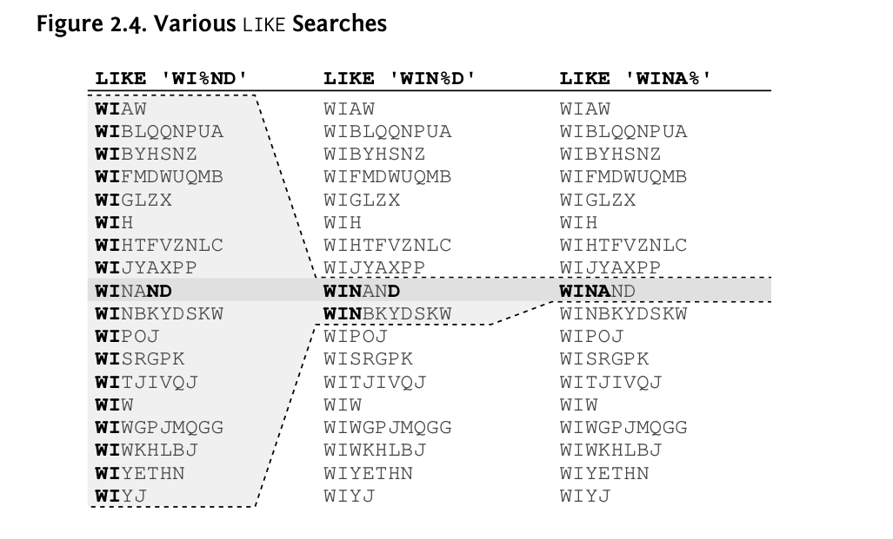
The first expression has two characters before the wildcard. They limit the scanned index range to 18 rows. Only one of them matches the entire LIKE expression—the other 17 are fetched but discarded. The second expression has a longer prefix that narrows the scanned index range down to two rows. With this expression, the database just reads one extra row that is not relevant for the result. The last expression does not have a filter predicate at all: the database just reads the entry that matches the entire LIKE expression.
The opposite case is also possible: a LIKE expression that starts with a wildcard. Such a LIKE expression cannot serve as an access predicate. The database has to scan the entire table if there are no other conditions that provide access predicates.
46
Indexing LIKE Filters
The position of the wildcard characters affects index usage—at least in theory. In reality the optimizer creates a generic execution plan when the search term is supplied via bind parameters. In that case, the optimizer has to guess whether or not the majority of executions will have a leading wildcard.
Most databases just assume that there is no leading wildcard when optimizing a LIKE condition with bind parameter, but this assumption is wrong if the LIKE expression is used for a full-text search. There is, unfortunately, no direct way to tag a LIKE condition as full-text search. The box “Labeling Full-Text LIKE Expressions” shows an attempt that does not work. Specifying the search term without bind parameter is the most obvious solution, but that increases the optimization overhead and opens an SQL injection vulnerability. An effective but still secure and portable solution is to intentionally obfuscate the LIKE condition. “Combining Columns” on page 70 explains this in detail.
For the PostgreSQL database, the problem is different because PostgreSQL assumes there is a leading wildcard when using bind parameters for a LIKE expression. PostgreSQL just does not use an index in that case. The only way to get an index access for a LIKE expression is to make the actual
47
Chapter 2: The Where Clause
search term visible to the optimizer. If you do not use a bind parameter but put the search term directly into the SQL statement, you must take other precautions against SQL injection attacks!
Even if the database optimizes the execution plan for a leading wildcard, it can still deliver insufficient performance. You can use another part of the where clause to access the data efficiently in that case—see also “Index Filter Predicates Used Intentionally” on page 112. If there is no other access path, you might use one of the following proprietary full-text index solutions.
MySQL
MySQL offers the match and against keywords for full-text searching. Starting with MySQL 5.6, you can create full-text indexes for InnoDB tables as well—previously, this was only possible with MyISAM tables. See “Full-Text Search Functions” in the MySQL documentation.
Oracle Database
The Oracle database offers the contains keyword. See the “Oracle Text Application Developer’s Guide.”
PostgreSQL
PostgreSQL offers the @@ operator to implement full-text searches. See “Full Text Search” in the PostgreSQL documentation.
Another option is to use the WildSpeed2 extension to optimize LIKE expressions directly. The extension stores the text in all possible rotations so that each character is at the beginning once. That means that the indexed text is not only stored once but instead as many times as there are characters in the string—thus it needs a lot of space.
SQL Server
SQL Server offers the contains keyword. See “Full-Text Search” in the SQL Server documentation.
2 http://www.sai.msu.su/~megera/wiki/wildspeed
48
Index Merge
It is one of the most common question about indexing: is it better to create one index for each column or a single index for all columns of a where clause? The answer is very simple in most cases: one index with multiple columns is better.
Nevertheless there are queries where a single index cannot do a perfect job, no matter how you define the index; e.g., queries with two or more independent range conditions as in the following example:
SELECT first_name, last_name, date_of_birth
FROM employees
WHERE UPPER(last_name) < ?
AND date_of_birth < ?It is impossible to define a B-tree index that would support this query without filter predicates. For an explanation, you just need to remember that an index is a linked list.
If you define the index as UPPER(LAST_NAME), DATE_OF_BIRTH (in that order), the list begins with A and ends with Z. The date of birth is considered only when there are two employees with the same name. If you define the index the other way around, it will start with the eldest employees and end with the youngest. In that case, the names only have a minor impact on the sort order.
No matter how you twist and turn the index definition, the entries are always arranged along a chain. At one end, you have the small entries and at the other end the big ones. An index can therefore only support one range condition as an access predicate. Supporting two independent range conditions requires a second axis, for example like a chessboard. The query above would then match all entries from one corner of the chessboard, but an index is not like a chessboard—it is like a chain. There is no corner.
You can of course accept the filter predicate and use a multi-column index nevertheless. That is the best solution in many cases anyway. The index definition should then mention the more selective column first so it can be used with an access predicate. That might be the origin of the “most selective first” myth but this rule only holds true if you cannot avoid a filter predicate.
49
Chapter 2: The Where Clause
The other option is to use two separate indexes, one for each column. Then the database must scan both indexes first and then combine the results. The duplicate index lookup alone already involves more effort because the database has to traverse two index trees. Additionally, the database needs a lot of memory and CPU time to combine the intermediate results.
Databases use two methods to combine indexes. Firstly there is the index join. Chapter 4, “The Join Operation” explains the related algorithms in detail. The second approach makes use of functionality from the data warehouse world.
The data warehouse is the mother of all ad-hoc queries. It just needs a few clicks to combine arbitrary conditions into the query of your choice. It is impossible to predict the column combinations that might appear in the where clause and that makes indexing, as explained so far, almost impossible.
Data warehouses use a special purpose index type to solve that problem: the so-called bitmap index. The advantage of bitmap indexes is that they can be combined rather easily. That means you get decent performance when indexing each column individually. Conversely if you know the query in advance, so that you can create a tailored multi-column B-tree index, it will still be faster than combining multiple bitmap indexes.
By far the greatest weakness of bitmap indexes is the ridiculous insert, update and delete scalability. Concurrent write operations are virtually impossible. That is no problem in a data warehouse because the load processes are scheduled one after another. In online applications, bitmap indexes are mostly useless.
50
Partial Indexes
Many database products offer a hybrid solution between B-tree and bitmap indexes. In the absence of a better access path, they convert the results of several B-tree scans into in-memory bitmap structures. Those can be combined efficiently. The bitmap structures are not stored persistently but discarded after statement execution, thus bypassing the problem of the poor write scalability. The downside is that it needs a lot of memory and CPU time. This method is, after all, an optimizer’s act of desperation.
So far we have only discussed which columns to add to an index. With partial (PostgreSQL) or filtered (SQL Server) indexes you can also specify the rows that are indexed.
A partial index is useful for commonly used where conditions that use constant values—like the status code in the following example:
SELECT message
FROM messages
WHERE processed = 'N'
AND receiver = ?Queries like this are very common in queuing systems. The query fetches all unprocessed messages for a specific recipient. Messages that were already processed are rarely needed. If they are needed, they are usually accessed by a more specific criteria like the primary key.
We can optimize this query with a two-column index. Considering this query only, the column order does not matter because there is no range condition.
CREATE INDEX messages_todo
ON messages (receiver, processed)The index fulfills its purpose, but it includes many rows that are never searched, namely all the messages that were already processed. Due to the logarithmic scalability the index nevertheless makes the query very fast even though it wastes a lot of disk space.
51
Chapter 2: The Where Clause
With partial indexing you can limit the index to include only the unprocessed messages. The syntax for this is surprisingly simple: a where clause.
CREATE INDEX messages_todo
ON messages (receiver)
WHERE processed = 'N'The index only contains the rows that satisfy the where clause. In this particular case, we can even remove the PROCESSED column because it is always 'N' anyway. That means the index reduces its size in two dimensions: vertically, because it contains fewer rows; horizontally, due to the removed column.
The index is therefore very small. For a queue, it can even mean that the index size remains unchanged although the table grows without bounds. The index does not contain all messages, just the unprocessed ones.
The where clause of a partial index can become arbitrarily complex. The only fundamental limitation is about functions: you can only use deterministic functions as is the case everywhere in an index definition. SQL Server has, however, more restrictive rules and neither allow functions nor the OR operator in index predicates.
A database can use a partial index whenever the where clause appears in a query.
52
NULL in the Oracle Database
SQL’s NULL frequently causes confusion. Although the basic idea of NULL—to represent missing data—is rather simple, there are some peculiarities. You have to use IS NULL instead of = NULL, for example. Moreover the Oracle database has additional NULL oddities, on the one hand because it does not always handle NULL as required by the standard and on the other hand because it has a very “special” handling of NULL in indexes.
The SQL standard does not define NULL as a value but rather as a placeholder for a missing or unknown value. Consequently, no value can be NULL. Instead the Oracle database treats an empty string as NULL:
SELECT '0 IS NULL???' AS "what is NULL?" FROM dual
WHERE 0 IS NULL
UNION ALL
SELECT '0 is not null' FROM dual
WHERE 0 IS NOT NULL
UNION ALL
SELECT ''''' IS NULL???' FROM dual
WHERE '' IS NULL
UNION ALL
SELECT ''''' is not null' FROM dual
WHERE '' IS NOT NULL;what is NULL?
--------------
0 is not null
'' IS NULL???To add to the confusion, there is even a case when the Oracle database treats NULL as empty string:
SELECT dummy
, dummy || ''
, dummy || NULL
FROM dual;D D D
- - -
X X XConcatenating the DUMMY column (always containing 'X') with NULL should return NULL.
53
Chapter 2: The Where Clause
The concept of NULL is used in many programming languages. No matter where you look, an empty string is never NULL…except in the Oracle database. It is, in fact, impossible to store an empty string in a VARCHAR2 field. If you try, the Oracle database just stores NULL.
This peculiarity is not only strange; it is also dangerous. Additionally the Oracle database’s NULL oddity does not stop here—it continues with indexing.
The Oracle database does not include rows in an index if all indexed columns are NULL. That means that every index is a partial index—like having a where clause:
CREATE INDEX idx
ON tbl (A, B, C, ...)
WHERE A IS NOT NULL
OR B IS NOT NULL
OR C IS NOT NULL
...;Consider the EMP_DOB index. It has only one column: the DATE_OF_BIRTH. A row that does not have a DATE_OF_BIRTH value is not added to this index.
INSERT INTO employees ( subsidiary_id, employee_id
, first_name , last_name
, phone_number)
VALUES ( ?, ?, ?, ?, ? );The insert statement does not set the DATE_OF_BIRTH so it defaults to NULL—hence, the record is not added to the EMP_DOB index. As a consequence, the index cannot support a query for records where DATE_OF_BIRTH IS NULL:
SELECT first_name, last_name
FROM employees
WHERE date_of_birth IS NULL;54
Indexing NULL
----------------------------------------------------
| Id | Operation | Name | Rows | Cost |
----------------------------------------------------
| 0 | SELECT STATEMENT | | 1 | 477 |
|* 1 | TABLE ACCESS FULL| EMPLOYEES | 1 | 477 |
----------------------------------------------------
Predicate Information (identified by operation id):
---------------------------------------------------
1 - filter("DATE_OF_BIRTH" IS NULL)Nevertheless, the record is inserted into a concatenated index if at least one index column is not NULL:
CREATE INDEX demo_null
ON employees (subsidiary_id, date_of_birth);The above created row is added to the index because the SUBSIDIARY_ID is not NULL. This index can thus support a query for all employees of a specific subsidiary that have no DATE_OF_BIRTH value:
SELECT first_name, last_name
FROM employees
WHERE subsidiary_id = ?
AND date_of_birth IS NULL;--------------------------------------------------------------
| Id | Operation | Name | Rows | Cost |
--------------------------------------------------------------
| 0 | SELECT STATEMENT | | 1 | 2 |
| 1 | TABLE ACCESS BY INDEX ROWID| EMPLOYEES | 1 | 2 |
|* 2 | INDEX RANGE SCAN | DEMO_NULL | 1 | 1 |
--------------------------------------------------------------
Predicate Information (identified by operation id):
---------------------------------------------------
2 - access("SUBSIDIARY_ID"=TO_NUMBER(?)
AND "DATE_OF_BIRTH" IS NULL)Please note that the index covers the entire where clause; all filters are used as access predicates during the INDEX RANGE SCAN.
We can extend this concept for the original query to find all records where DATE_OF_BIRTH IS NULL. For that, the DATE_OF_BIRTH column has to be the leftmost column in the index so that it can be used as access predicate. Although we do not need a second index column for the query itself, we add another column that can never be NULL to make sure the index has all rows.
55
Chapter 2: The Where Clause
We can use any column that has a NOT NULL constraint, like SUBSIDIARY_ID, for that purpose.
Alternatively, we can use a constant expression that can never be NULL. That makes sure the index has all rows—even if DATE_OF_BIRTH is NULL.
DROP INDEX emp_dob;
CREATE INDEX emp_dob ON employees (date_of_birth, '1');Technically, this index is a function-based index. This example also disproves the myth that the Oracle database cannot index NULL.
To index an IS NULL condition in the Oracle database, the index must have a column that can never be NULL.
That said, it is not enough that there are no NULL entries. The database has to be sure there can never be a NULL entry, otherwise the database must assume that the table has rows that are not in the index.
The following index supports the query only if the column LAST_NAME has a NOT NULL constraint:
DROP INDEX emp_dob;
CREATE INDEX emp_dob_name
ON employees (date_of_birth, last_name); SELECT *
FROM employees
WHERE date_of_birth IS NULL;56
NOT NULL Constraints
---------------------------------------------------------------
|Id |Operation | Name | Rows | Cost |
---------------------------------------------------------------
| 0 |SELECT STATEMENT | | 1 | 3 |
| 1 | TABLE ACCESS BY INDEX ROWID| EMPLOYEES | 1 | 3 |
|*2 | INDEX RANGE SCAN | EMP_DOB_NAME | 1 | 2 |
---------------------------------------------------------------
Predicate Information (identified by operation id):
---------------------------------------------------
2 - access("DATE_OF_BIRTH" IS NULL)Removing the NOT NULL constraint renders the index unusable for this query:
ALTER TABLE employees MODIFY last_name NULL;
SELECT *
FROM employees
WHERE date_of_birth IS NULL;----------------------------------------------------
| Id | Operation | Name | Rows | Cost |
----------------------------------------------------
| 0 | SELECT STATEMENT | | 1 | 477 |
|* 1 | TABLE ACCESS FULL| EMPLOYEES | 1 | 477 |
----------------------------------------------------Besides NOT NULL constraints, the database also knows that constant expressions like in the previous section cannot become NULL.
An index on a user-defined function, however, does not impose a NOT NULL constraint on the index expression:
CREATE OR REPLACE FUNCTION blackbox(id IN NUMBER) RETURN NUMBER
DETERMINISTIC
IS BEGIN
RETURN id;
END;
DROP INDEX emp_dob_name;
CREATE INDEX emp_dob_bb
ON employees (date_of_birth, blackbox(employee_id));57
Chapter 2: The Where Clause
SELECT *
FROM employees
WHERE date_of_birth IS NULL;----------------------------------------------------
| Id | Operation | Name | Rows | Cost |
----------------------------------------------------
| 0 | SELECT STATEMENT | | 1 | 477 |
|* 1 | TABLE ACCESS FULL| EMPLOYEES | 1 | 477 |
----------------------------------------------------The function name BLACKBOX emphasizes the fact that the optimizer has no idea what the function does. We can see that the function passes the input value straight through, but for the database it is just a function that returns a number. The NOT NULL property of the parameter is lost. Although the index must have all rows, the database does not know that so it cannot use the index for the query.
If you know that the function never returns NULL, as in this example, you can change the query to reflect that:
SELECT *
FROM employees
WHERE date_of_birth IS NULL
AND blackbox(employee_id) IS NOT NULL;-------------------------------------------------------------
| Id | Operation | Name | Rows | Cost |
-------------------------------------------------------------
| 0 | SELECT STATEMENT | | 1 | 3 |
| 1 | TABLE ACCESS BY INDEX ROWID| EMPLOYEES | 1 | 3 |
|* 2 | INDEX RANGE SCAN | EMP_DOB_BB | 1 | 2 |
-------------------------------------------------------------The extra condition in the where clause is always true and therefore does not change the result. Nevertheless the Oracle database recognizes that you only query rows that must be in the index per definition.
There is, unfortunately, no way to tag a function that never returns NULL but you can move the function call to a virtual column (since 11g) and put a NOT NULL constraint on this column.
ALTER TABLE employees ADD bb_expression
GENERATED ALWAYS AS (blackbox(employee_id)) NOT NULL;
DROP INDEX emp_dob_bb;
CREATE INDEX emp_dob_bb
ON employees (date_of_birth, bb_expression);58
NOT NULL Constraints
SELECT *
FROM employees
WHERE date_of_birth IS NULL;-------------------------------------------------------------
|Id |Operation | Name | Rows | Cost |
-------------------------------------------------------------
| 0 |SELECT STATEMENT | | 1 | 3 |
| 1 | TABLE ACCESS BY INDEX ROWID| EMPLOYEES | 1 | 3 |
|*2 | INDEX RANGE SCAN | EMP_DOB_BB | 1 | 2 |
-------------------------------------------------------------The Oracle database knows that some internal functions only return NULL if NULL is provided as input.
DROP INDEX emp_dob_bb;
CREATE INDEX emp_dob_upname
ON employees (date_of_birth, upper(last_name));SELECT *
FROM employees
WHERE date_of_birth IS NULL;----------------------------------------------------------
|Id |Operation | Name | Cost |
----------------------------------------------------------
| 0 |SELECT STATEMENT | | 3 |
| 1 | TABLE ACCESS BY INDEX ROWID| EMPLOYEES | 3 |
|*2 | INDEX RANGE SCAN | EMP_DOB_UPNAME | 2 |
----------------------------------------------------------The UPPER function preserves the NOT NULL property of the LAST_NAME column. Removing the constraint, however, renders the index unusable:
ALTER TABLE employees MODIFY last_name NULL;
SELECT *
FROM employees
WHERE date_of_birth IS NULL;----------------------------------------------------
| Id | Operation | Name | Rows | Cost |
----------------------------------------------------
| 0 | SELECT STATEMENT | | 1 | 477 |
|* 1 | TABLE ACCESS FULL| EMPLOYEES | 1 | 477 |
----------------------------------------------------59
Chapter 2: The Where Clause
The strange way the Oracle database handles NULL in indexes can be used to emulate partial indexes. For that, we just have to use NULL for rows that should not be indexed.
To demonstrate, we emulate the following partial index:
CREATE INDEX messages_todo
ON messages (receiver)
WHERE processed = 'N'First, we need a function that returns the RECEIVER value only if the PROCESSED value is 'N'.
CREATE OR REPLACE
FUNCTION pi_processed(processed CHAR, receiver NUMBER)
RETURN NUMBER
DETERMINISTIC
AS BEGIN
IF processed IN ('N') THEN
RETURN receiver;
ELSE
RETURN NULL;
END IF;
END;
/The function must be deterministic so it can be used in an index definition.
Now we can create an index that contains only the rows having PROCESSED='N'.
CREATE INDEX messages_todo
ON messages (pi_processed(processed, receiver));60
Emulating Partial Indexes
To use the index, you must use the indexed expression in the query:
SELECT message
FROM messages
WHERE pi_processed(processed, receiver) = ?----------------------------------------------------------
|Id | Operation | Name | Cost |
----------------------------------------------------------
| 0 | SELECT STATEMENT | | 5330 |
| 1 | TABLE ACCESS BY INDEX ROWID| MESSAGES | 5330 |
|*2 | INDEX RANGE SCAN | MESSAGES_TODO | 5303 |
----------------------------------------------------------
Predicate Information (identified by operation id):
---------------------------------------------------
2 - access("PI_PROCESSED"("PROCESSED","RECEIVER")=:X)61
Chapter 2: The Where Clause
The following sections demonstrate some popular methods for obfuscating conditions. Obfuscated conditions are where clauses that are phrased in a way that prevents proper index usage. This section is a collection of anti-patterns every developer should know about and avoid.
Most obfuscations involve DATE types. The Oracle database is particularly vulnerable in this respect because it has only one DATE type that always includes a time component as well.
It has become common practice to use the TRUNC function to remove the time component. In truth, it does not remove the time but instead sets it to midnight because the Oracle database has no pure DATE type. To disregard the time component for a search you can use the TRUNC function on both sides of the comparison—e.g., to search for yesterday’s sales:
SELECT ...
FROM sales
WHERE TRUNC(sale_date) = TRUNC(sysdate - INTERVAL '1' DAY)It is a perfectly valid and correct statement but it cannot properly make use of an index on SALE_DATE. It is as explained in “Case-Insensitive Search Using UPPER or LOWER” on page 24; TRUNC(sale_date) is something entirely different from SALE_DATE—functions are black boxes to the database.
There is a rather simple solution for this problem: a function-based index.
CREATE INDEX index_name
ON table_name (TRUNC(sale_date))But then you must always use TRUNC(date_column) in the where clause. If you use it inconsistently—sometimes with, sometimes without TRUNC—then you need two indexes!
62
Date Types
The problem also occurs with databases that have a pure date type if you search for a longer period as shown in the following MySQL query:
SELECT ...
FROM sales
WHERE DATE_FORMAT(sale_date, "%Y-%M")
= DATE_FORMAT(now() , "%Y-%M")The query uses a date format that only contains year and month: again, this is an absolutely correct query that has the same problem as before. However the solution from above does not apply here because MySQL has no function-based indexes.
The alternative is to use an explicit range condition. This is a generic solution that works for all databases:
SELECT ...
FROM sales
WHERE sale_date BETWEEN quarter_begin(?)
AND quarter_end(?)If you have done your homework, you probably recognize the pattern from the exercise about all employees who are 42 years old.
A straight index on SALE_DATE is enough to optimize this query. The functions QUARTER_BEGIN and QUARTER_END compute the boundary dates. The calculation can become a little complex because the between operator always includes the boundary values. The QUARTER_END function must therefore return a time stamp just before the first day of the next quarter if the SALE_DATE has a time component. This logic can be hidden in the function.
The examples on the following pages show implementations of the functions QUARTER_BEGIN and QUARTER_END for various databases.
63
Chapter 2: The Where Clause
MySQL
CREATE FUNCTION quarter_begin(dt DATETIME)
RETURNS DATETIME DETERMINISTIC
RETURN CONVERT
(
CONCAT
( CONVERT(YEAR(dt),CHAR(4))
, '-'
, CONVERT(QUARTER(dt)*3-2,CHAR(2))
, '-01'
)
, datetime
);CREATE FUNCTION quarter_end(dt DATETIME)
RETURNS DATETIME DETERMINISTIC
RETURN DATE_ADD
( DATE_ADD ( quarter_begin(dt), INTERVAL 3 MONTH )
, INTERVAL -1 MICROSECOND);Oracle Database
CREATE FUNCTION quarter_begin(dt IN DATE)
RETURN DATE
AS
BEGIN
RETURN TRUNC(dt, 'Q');
END;
/CREATE FUNCTION quarter_end(dt IN DATE)
RETURN DATE
AS
BEGIN
-- the Oracle DATE type has seconds resolution
-- subtract one second from the first
-- day of the following quarter
RETURN TRUNC(ADD_MONTHS(dt, +3), 'Q')
- (1/(24*60*60));
END;
/64
Date Types
PostgreSQL
CREATE FUNCTION quarter_begin(dt timestamp with time zone)
RETURNS timestamp with time zone AS $$
BEGIN
RETURN date_trunc('quarter', dt);
END;
$$ LANGUAGE plpgsql;CREATE FUNCTION quarter_end(dt timestamp with time zone)
RETURNS timestamp with time zone AS $$
BEGIN
RETURN date_trunc('quarter', dt)
+ interval '3 month'
- interval '1 microsecond';
END;
$$ LANGUAGE plpgsql;SQL Server
CREATE FUNCTION quarter_begin (@dt DATETIME )
RETURNS DATETIME
BEGIN
RETURN DATEADD (qq, DATEDIFF (qq, 0, @dt), 0)
END
GOCREATE FUNCTION quarter_end (@dt DATETIME )
RETURNS DATETIME
BEGIN
RETURN DATEADD
( ms
, -3
, DATEADD(mm, 3, dbo.quarter_begin(@dt))
);
END
GOYou can use similar auxiliary functions for other periods—most of them will be less complex than the examples above, especially when using than or greater equal to (>=) and less than (<) conditions instead of the between operator. Of course you could calculate the boundary dates in your application if you wish.
65
Chapter 2: The Where Clause
Another common obfuscation is to compare dates as strings as shown in the following PostgreSQL example:
SELECT ...
FROM sales
WHERE TO_CHAR(sale_Date, 'YYYY-MM-DD') = '1970-01-01'The problem is, again, converting DATE_COLUMN. Such conditions are often created in the belief that you cannot pass different types than numbers and strings to the database. Bind parameters, however, support all data types. That means you can for example use a java.util.Date object as bind parameter. This is yet another benefit of bind parameters.
If you cannot do that, you just have to convert the search term instead of the table column:
SELECT ...
FROM sales
WHERE sale_date = TO_DATE('1970-01-01', 'YYYY-MM-DD')This query can use a straight index on SALE_DATE. Moreover it converts the input string only once. The previous statement must convert all dates stored in the table before it can compare them against the search term.
Whatever change you make—using a bind parameter or converting the other side of the comparison—you can easily introduce a bug if SALE_DATE has a time component. You must use an explicit range condition in that case:
SELECT ...
FROM sales
WHERE sale_date >= TO_DATE('1970-01-01', 'YYYY-MM-DD')
AND sale_date < TO_DATE('1970-01-01', 'YYYY-MM-DD')
+ INTERVAL '1' DAYAlways consider using an explicit range condition when comparing dates.
66
Date Types
67
Chapter 2: The Where Clause
Numeric strings are numbers that are stored in text columns. Although it is a very bad practice, it does not automatically render an index useless if you consistently treat it as string:
SELECT ...
FROM ...
WHERE numeric_string = '42'Of course this statement can use an index on NUMERIC_STRING. If you compare it using a number, however, the database can no longer use this condition as an access predicate.
SELECT ...
FROM ...
WHERE numeric_string = 42Note the missing quotes. Although some database yield an error (e.g. PostgreSQL) many databases just add an implicit type conversion.
SELECT ...
FROM ...
WHERE TO_NUMBER(numeric_string) = 42It is the same problem as before. An index on NUMERIC_STRING cannot be used due to the function call. The solution is also the same as before: do not convert the table column, instead convert the search term.
SELECT ...
FROM ...
WHERE numeric_string = TO_CHAR(42)You might wonder why the database does not do it this way automatically? It is because converting a string to a number always gives an unambiguous result. This is not true the other way around. A number, formatted as text, can contain spaces, punctation, and leading zeros. A single value can be written in many ways:
42
042
0042
00042
...68
Numeric Strings
The database cannot know the number format used in the NUMERIC_STRING column so it does it the other way around: the database converts the strings to numbers—this is an unambiguous transformation.
The TO_CHAR function returns only one string representation of the number. It will therefore only match the first of above listed strings. If we use TO_NUMBER, it matches all of them. That means there is not only a performance difference between the two variants but also a semantic difference!
Using numeric strings is generally troublesome: most importantly it causes performance problems due to the implicit conversion and also introduces a risk of running into conversion errors due to invalid numbers. Even the most trivial query that does not use any functions in the where clause can cause an abort with a conversion error if there is just one invalid number stored in the table.
Note that the problem does not exist the other way around:
SELECT ...
FROM ...
WHERE numeric_number = '42'The database will consistently transform the string into a number. It does not apply a function on the potentially indexed column: a regular index will therefore work. Nevertheless it is possible to do a manual conversion the wrong way:
SELECT ...
FROM ...
WHERE TO_CHAR(numeric_number) = '42'69
Chapter 2: The Where Clause
This section is about a popular obfuscation that affects concatenated indexes.
The first example is again about date and time types but the other way around. The following MySQL query combines a data and a time column to apply a range filter on both of them.
SELECT ...
FROM ...
WHERE ADDTIME(date_column, time_column)
> DATE_ADD(now(), INTERVAL -1 DAY)It selects all records from the last 24 hours. The query cannot use a concatenated index on (DATE_COLUMN, TIME_COLUMN) properly because the search is not done on the indexed columns but on derived data.
You can avoid this problem by using a data type that has both a date and time component (e.g., MySQL DATETIME). You can then use this column without a function call:
SELECT ...
FROM ...
WHERE datetime_column
> DATE_ADD(now(), INTERVAL -1 DAY)Unfortunately it is often not possible to change the table when facing this problem.
The next option is a function-based index if the database supports it—although this has all the drawbacks discussed before. When using MySQL, function-based indexes are not an option anyway.
It is still possible to write the query so that the database can use a concatenated index on DATE_COLUMN, TIME_COLUMN with an access predicate—at least partially. For that, we add an extra condition on the DATE_COLUMN.
WHERE ADDTIME(date_column, time_column)
> DATE_ADD(now(), INTERVAL -1 DAY)
AND date_column
>= DATE(DATE_ADD(now(), INTERVAL -1 DAY))70
Combining Columns
The new condition is absolutely redundant but it is a straight filter on DATE_COLUMN that can be used as access predicate. Even though this technique is not perfect, it is usually a good enough approximation.
For PostgreSQL, it’s preferable to use the row values syntax described on page 151.
You can also use this technique when storing date and time in text columns, but you have to use date and time formats that yields a chronological order when sorted lexically—e.g., as suggested by ISO 8601 (YYYY-MM-DD HH:MM:SS).
The following example uses the Oracle database’s TO_CHAR function for that purpose:
SELECT ...
FROM ...
WHERE date_string || time_string
> TO_CHAR(sysdate - 1, 'YYYY-MM-DD HH24:MI:SS')
AND date_string
>= TO_CHAR(sysdate - 1, 'YYYY-MM-DD')We will face the problem of applying a range condition over multiple columns again in the section entitled “Paging Through Results”. We’ll also use the same approximation method to mitigate it.
Sometimes we have the reverse case and might want to obfuscate a condition intentionally so it cannot be used anymore as access predicate.
We already looked at that problem when discussing the effects of bind parameters on LIKE conditions. Consider the following example:
SELECT last_name, first_name, employee_id
FROM employees
WHERE subsidiary_id = ?
AND last_name LIKE ?Assuming there is an index on SUBSIDIARY_ID and another one on LAST_NAME, which one is better for this query?
71
Chapter 2: The Where Clause
Without knowing the wildcard’s position in the search term, it is impossible to give a qualified answer. The optimizer has no other choice than to “guess”. If you know that there is always a leading wildcard, you can obfuscate the LIKE condition intentionally so that the optimizer can no longer consider the index on LAST_NAME.
SELECT last_name, first_name, employee_id
FROM employees
WHERE subsidiary_id = ?
AND last_name || '' LIKE ?It is enough to append an empty string to the LAST_NAME column. This is, however, an option of last resort. Only do it when absolutely necessary.
One of the key features of SQL databases is their support for ad-hoc queries: new queries can be executed at any time. This is only possible because the query optimizer (query planner) works at runtime; it analyzes each statement when received and generates a reasonable execution plan immediately. The overhead introduced by runtime optimization can be minimized with bind parameters.
The gist of that recap is that databases are optimized for dynamic SQL—so use it if you need it.
Nevertheless there is a widely used practice that avoids dynamic SQL in favor of static SQL—often because of the “dynamic SQL is slow” myth. This practice does more harm than good if the database uses a shared execution plan cache like DB2, the Oracle database, or SQL Server.
For the sake of demonstration, imagine an application that queries the EMPLOYEES table. The application allows searching for subsidiary id, employee id and last name (case-insensitive) in any combination. It is still possible to write a single query that covers all cases by using “smart” logic.
72
Smart Logic
SELECT first_name, last_name, subsidiary_id, employee_id
FROM employees
WHERE ( subsidiary_id = :sub_id OR :sub_id IS NULL )
AND ( employee_id = :emp_id OR :emp_id IS NULL )
AND ( UPPER(last_name) = :name OR :name IS NULL )The query uses named bind variables for better readability. All possible filter expressions are statically coded in the statement. Whenever a filter isn’t needed, you just use NULL instead of a search term: it disables the condition via the OR logic.
It is a perfectly reasonable SQL statement. The use of NULL is even in line with its definition according to the three-valued logic of SQL. Nevertheless it is one of the worst performance anti-patterns of all.
The database cannot optimize the execution plan for a particular filter because any of them could be canceled out at runtime. The database needs to prepare for the worst case—if all filters are disabled:
----------------------------------------------------
| Id | Operation | Name | Rows | Cost |
----------------------------------------------------
| 0 | SELECT STATEMENT | | 2 | 478 |
|* 1 | TABLE ACCESS FULL| EMPLOYEES | 2 | 478 |
----------------------------------------------------
Predicate Information (identified by operation id):
---------------------------------------------------
1 - filter((:NAME IS NULL OR UPPER("LAST_NAME")=:NAME)
AND (:EMP_ID IS NULL OR "EMPLOYEE_ID"=:EMP_ID)
AND (:SUB_ID IS NULL OR "SUBSIDIARY_ID"=:SUB_ID))As a consequence, the database uses a full table scan even if there is an index for each column.
It is not that the database cannot resolve the “smart” logic. It creates the generic execution plan due to the use of bind parameters so it can be cached and re-used with other values later on. If we do not use bind parameters but write the actual values in the SQL statement, the optimizer selects the proper index for the active filter:
SELECT first_name, last_name, subsidiary_id, employee_id
FROM employees
WHERE( subsidiary_id = NULL OR NULL IS NULL )
AND( employee_id = NULL OR NULL IS NULL )
AND( UPPER(last_name) = 'WINAND' OR 'WINAND' IS NULL )73
Chapter 2: The Where Clause
---------------------------------------------------------------
|Id | Operation | Name | Rows | Cost |
---------------------------------------------------------------
| 0 | SELECT STATEMENT | | 1 | 2 |
| 1 | TABLE ACCESS BY INDEX ROWID| EMPLOYEES | 1 | 2 |
|*2 | INDEX RANGE SCAN | EMP_UP_NAME | 1 | 1 |
---------------------------------------------------------------
Predicate Information (identified by operation id):
---------------------------------------------------
2 - access(UPPER("LAST_NAME")='WINAND')This, however, is no solution. It just proves that the database can resolve these conditions.
The obvious solution for dynamic queries is dynamic SQL. According to the KISS principle3, just tell the database what you need right now—and nothing else.
SELECT first_name, last_name, subsidiary_id, employee_id
FROM employees
WHERE UPPER(last_name) = :nameNote that the query uses a bind parameter.
The problem described in this section is widespread. All databases that use a shared execution plan cache have a feature to cope with it—often introducing new problems and bugs.
3 http://en.wikipedia.org/wiki/KISS_principle
74
Smart Logic
MySQL
MySQL does not suffer from this particular problem because it has no execution plan cache at all. A feature request from 2009 discusses the impact of execution plan caching. It seems that MySQL’s optimizer is simple enough so that execution plan caching does not pay off.
Oracle Database
The Oracle database uses a shared execution plan cache (“SQL area”) and is fully exposed to the problem described in this section.
Oracle introduced the so-called bind peeking with release 9i. Bind peeking enables the optimizer to use the actual bind values of the first execution when preparing an execution plan. The problem with this approach is its nondeterministic behavior: the values from the first execution affect all executions. The execution plan can change whenever the database is restarted or, less predictably, the cached plan expires and the optimizer recreates it using different values the next time the statement is executed.
Release 11g introduced adaptive cursor sharing to further improve the situation. This feature allows the database to cache multiple execution plans for the same SQL statement. Further, the optimizer peeks the bind parameters and stores their estimated selectivity along with the execution plan. When the cache is subsequently accessed, the selectivity of the current bind values must fall within the selectivity ranges of a cached execution plan to be reused. Otherwise the optimizer creates a new execution plan and compares it against the already cached execution plans for this query. If there is already such an execution plan, the database replaces it with a new execution plan that also covers the selectivity estimates of the current bind values. If not, it caches a new execution plan variant for this query—along with the selectivity estimates, of course.
PostgreSQL
The PostgreSQL query plan cache works for open statements only—that is as long as you keep the PreparedStatement open. The above described problem occurs only when re-using a statement handle. Note that PostgresSQL’s JDBC driver enables the cache after the fifth execution only.
75
Chapter 2: The Where Clause
SQL Server
SQL Server uses so-called parameter sniffing. Parameter sniffing enables the optimizer to use the actual bind values of the first execution during parsing. The problem with this approach is its nondeterministic behavior: the values from the first execution affect all executions. The execution plan can change whenever the database is restarted or, less predictably, the cached plan expires and the optimizer recreates it using different values the next time the statement is executed.
SQL Server 2005 added new query hints to gain more control over parameter sniffing and recompiling. The query hint RECOMPILE bypasses the plan cache for a selected statement. OPTIMIZE FOR allows the specification of actual parameter values that are used for optimization only. Finally, you can provide an entire execution plan with the USE PLAN hint.
The original implementation of the OPTION(RECOMPILE) hint had a bug so it did not consider all bind variables. The new implementation introduced with SQL Server 2008 had another bug, making the situation very confusing. Erland Sommarskog has collected the all relevant information covering all SQL Server releases.4
Although heuristic methods can improve the “smart logic” problem to a certain extent, they were actually built to deal with the problems of bind parameter in connection with column histograms and LIKE expressions.
The most reliable method for arriving at the best execution plan is to avoid unnecessary filters in the SQL statement.
4 http://www.sommarskog.se/dyn-search-2008.html
76
Math
There is one more class of obfuscations that is smart and prevents proper index usage. Instead of using logic expressions it is using a calculation.
Consider the following statement. Can it use an index on NUMERIC_NUMBER?
SELECT numeric_number
FROM table_name
WHERE numeric_number - 1000 > ?Similarly, can the following statement use an index on A and B—you choose the order?
SELECT a, b
FROM table_name
WHERE 3*a + 5 = bLet’s put these questions into a different perspective; if you were developing an SQL database, would you add an equation solver? Most database vendors just say “No!” and thus, neither of the two examples uses the index.
You can even use math to obfuscate a condition intentionally—as we did it previously for the full text LIKE search. It is enough to add zero, for example:
SELECT numeric_number
FROM table_name
WHERE numeric_number + 0 = ?Nevertheless we can index these expressions with a function-based index if we use calculations in a smart way and transform the where clause like an equation:
SELECT a, b
FROM table_name
WHERE 3*a - b = -5We just moved the table references to the one side and the constants to the other. We can then create a function-based index for the left hand side of the equation:
CREATE INDEX math ON table_name (3*a - b)77
78
Chapter 3
This chapter is about performance and scalability of databases.
In this context, I am using the following definition for scalability:
Scalability is the ability of a system, network, or process,
to handle a growing amount of work in a capable manner
or
its ability to be enlarged to accommodate that growth.—Wikipedia1
You see that there are actually two definitions. The first one is about the effects of a growing load on a system and the second is about growing a system to handle more load.
The second definition enjoys much more popularity than the first one. Whenever somebody talks about scalability, it is almost always about using more hardware. Scale-up and scale-out are the respective keywords which were recently complemented by new buzzwords like web-scale.
Broadly speaking, scalability is about the performance impact of environmental changes. Hardware is just one environmental parameter that can change. This chapter covers other parameters like data volume and system load as well.
1 http://en.wikipedia.org/wiki/Scalability
79
Chapter 3: Performance and Scalability
The amount of data stored in a database has a great impact on its performance. It is usually accepted that a query becomes slower with additional data in the database. But how great is the performance impact if the data volume doubles? And how can we improve this ratio? These are the key questions when discussing database scalability.
As an example we analyze the response time of the following query when using two different indexes. The index definitions will remain unknown for the time being—they will be revealed during the course of the discussion.
SELECT count(*)
FROM scale_data
WHERE section = ?
AND id2 = ?The column SECTION has a special purpose in this query: it controls the data volume. The bigger the SECTION number becomes, the more rows the query selects. Figure 3.1 shows the response time for a small SECTION.

There is a considerable performance difference between the two indexing variants. Both response times are still well below a tenth of a second so even the slower query is probably fast enough in most cases. However the performance chart shows only one test point. Discussing scalability means to look at the performance impact when changing environmental parameters—such as the data volume.
80
Figure 3.2 shows the response time over the SECTION number—that means for a growing data volume.
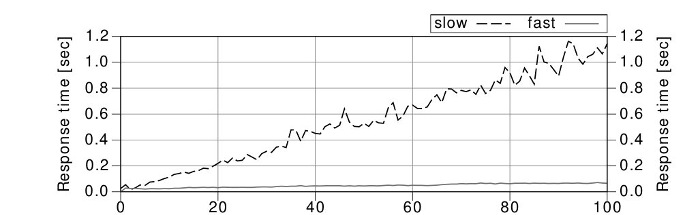
The chart shows a growing response time for both indexes. On the right hand side of the chart, when the data volume is a hundred times as high, the faster query needs more than twice as long as it originally did while the response time of the slower query increased by a factor of 20 to more than one second.
The response time of an SQL query depends on many factors. The data volume is one of them. If a query is fast enough under certain testing conditions, it does not mean it will be fast enough in production. That is especially the case in development environments that have only a fraction of the data of the production system.
It is, however, no surprise that the queries get slower when the data volume grows. But the striking gap between the two indexes is somewhat unexpected. What is the reason for the different growth rates?
81
Chapter 3: Performance and Scalability
It should be easy to find the reason by comparing both execution plans.
------------------------------------------------------
| Id | Operation | Name | Rows | Cost |
------------------------------------------------------
| 0 | SELECT STATEMENT | | 1 | 972 |
| 1 | SORT AGGREGATE | | 1 | |
|* 2 | INDEX RANGE SCAN| SCALE_SLOW | 3000 | 972 |
------------------------------------------------------------------------------------------------------------
| Id Operation | Name | Rows | Cost |
------------------------------------------------------
| 0 | SELECT STATEMENT | | 1 | 13 |
| 1 | SORT AGGREGATE | | 1 | |
|* 2 | INDEX RANGE SCAN| SCALE_FAST | 3000 | 13 |
------------------------------------------------------The execution plans are almost identical—they just use a different index. Even though the cost values reflect the speed difference, the reason is not visible in the execution plan.
It seems like we are facing a “slow index experience”; the query is slow although it uses an index. Nevertheless we do not believe in the myth of the “broken index” anymore. Instead, we remember the two ingredients that make an index lookup slow: (1) the table access, and (2) scanning a wide index range.
Neither execution plan shows a TABLE ACCESS BY INDEX ROWID operation so one execution plan must scan a wider index range than the other. So where does an execution plan show the scanned index range? In the predicate information of course!
The predicate information is by no means an unnecessary detail you can omit as was done above. An execution plan without predicate information is incomplete. That means you cannot see the reason for the performance difference in the plans shown above. If we look at the complete execution plans, we can see the difference.
82
------------------------------------------------------
| Id | Operation | Name | Rows | Cost |
------------------------------------------------------
| 0 | SELECT STATEMENT | | 1 | 972 |
| 1 | SORT AGGREGATE | | 1 | |
|* 2 | INDEX RANGE SCAN| SCALE_SLOW | 3000 | 972 |
------------------------------------------------------
Predicate Information (identified by operation id):
2 - access("SECTION"=TO_NUMBER(:A))
filter("ID2"=TO_NUMBER(:B))------------------------------------------------------
| Id Operation | Name | Rows | Cost |
------------------------------------------------------
| 0 | SELECT STATEMENT | | 1 | 13 |
| 1 | SORT AGGREGATE | | 1 | |
|* 2 | INDEX RANGE SCAN| SCALE_FAST | 3000 | 13 |
------------------------------------------------------
Predicate Information (identified by operation id):
2 - access("SECTION"=TO_NUMBER(:A) AND "ID2"=TO_NUMBER(:B))The difference is obvious now: only the condition on SECTION is an access predicate when using the SCALE_SLOW index. The database reads all rows from the section and discards those not matching the filter predicate on ID2. The response time grows with the number of rows in the section. With the SCALE_FAST index, the database uses all conditions as access predicates. The response time grows with the number of selected rows.
The last missing pieces in our puzzle are the index definitions. Can we reconstruct the index definitions from the execution plans?
83
Chapter 3: Performance and Scalability
The definition of the SCALE_SLOW index must start with the column SECTION—otherwise it could not be used as access predicate. The condition on ID2 is not an access predicate—so it cannot follow SECTION in the index definition. That means the SCALE_SLOW index must have minimally three columns where SECTION is the first and ID2 not the second. That is exactly how it is in the index definition used for this test:
CREATE INDEX scale_slow ON scale_data (section, id1, id2);The database cannot use ID2 as access predicate due to column ID1 in the second position.
The definition of the SCALE_FAST index must have columns SECTION and ID2 in the first two positions because both are used for access predicates. We can nonetheless not say anything about their order. The index that was used for the test starts with the SECTION column and has the extra column ID1 in the third position:
CREATE INDEX scale_fast ON scale_data (section, id2, id1);The column ID1 was just added so this index has the same size as SCALE_SLOW—otherwise you might get the impression the size causes the difference.
84
Consideration as to how to define a multi column index often stops as soon as the index is used for the query being tuned. However, the optimizer is not using an index because it is the “right” one for the query, rather because it is more efficient than a full table scan. That does not mean it is the optimal index for the query.
The previous example has shown the difficulties in recognizing incorrect column order in an execution plan. Very often the predicate information is well hidden so you have to search for it specifically to verify optimal index usage.
SQL Server Management Studio, for example, only shows the predicate information as a tool tip when moving the mouse cursor over the index operation (“hover”). The following execution plan uses the SCALE_SLOW index; it thus shows the condition on ID2 as filter predicate (just “Predicate”, without Seek).
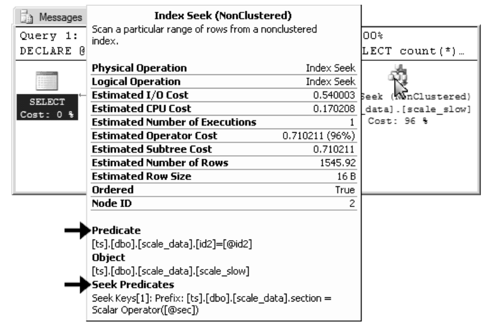
Obtaining the predicate information from a MySQL or PostgreSQL execution plan is even more awkward. Appendix A on page 165 has the details.
85
Chapter 3: Performance and Scalability
No matter how insignificant the predicate information appears in the execution plan, it has a great impact on performance—especially when the system grows. Remember that it is not only the data volume that grows but also the access rate. This is yet another parameter of the scalability function.
Figure 3.4 plots the response time as a function of the access rate—the data volume remains unchanged. It is showing the execution time of the same query as before and always uses the section with the greatest data volume. That means the last point from Figure 3.2 on page 81 corresponds with the first point in this chart.

The dashed line plots the response time when using the SCALE_SLOW index. It grows by up to 32 seconds if there are 25 queries running at the same time. In comparison to the response time without background load—as it might be the case in your development environment—it takes 30 times as long. Even if you have a full copy of the production database in your development environment, the background load can still cause a query to run much slower in production.
The solid line shows the response time using the SCALE_FAST index—it does not have any filter predicates. The response time stays well below two seconds even if there are 25 queries running concurrently.
86
Suspicious response times are often taken lightly during development. This is largely because we expect the “more powerful production hardware” to deliver better performance. More often than not it is the other way around because the production infrastructure is more complex and accumulates latencies that do not occur in the development environment. Even when testing on a production equivalent infrastructure, the background load can still cause different response times. In the next section we will see that it is in general not reasonable to expect faster responses from “bigger hardware”.
Bigger hardware is not always faster—but it can usually handle more load. Bigger hardware is more like a wider highway than a faster car: you cannot drive faster—well, you are not allowed to—just because there are more lanes. That is the reason that more hardware does not automatically improve slow SQL queries.
We are not in the 1990s anymore. The computing power of single core CPUs was increasing rapidly at that time. Most response time issues disappeared on newer hardware—just because of the improved CPU. It was like new car models consistently going twice as fast as old models—every year! However, single core CPU power hit the wall during the first few years of the 21st century. There was almost no improvement on this axis anymore. To continue building ever more powerful CPUs, the vendors had to move to a multi-core strategy. Even though it allows multiple tasks to run concurrently, it does not improve performance if there is only one task. Performance has more than just one dimension.
Scaling horizontally (adding more servers) has similar limitations. Although more servers can process more requests, they do not the improve response time for one particular query. To make searching faster, you need an efficient search tree—even in non-relational systems like CouchDB and MongoDB.
87
Chapter 3: Performance and Scalability
Proper indexing aims to fully exploit the logarithmic scalability of the B-tree index. Unfortunately indexing is usually done in a very sloppy way. The chart in “Performance Impacts of Data Volume” makes the effect of sloppy indexing apparent.
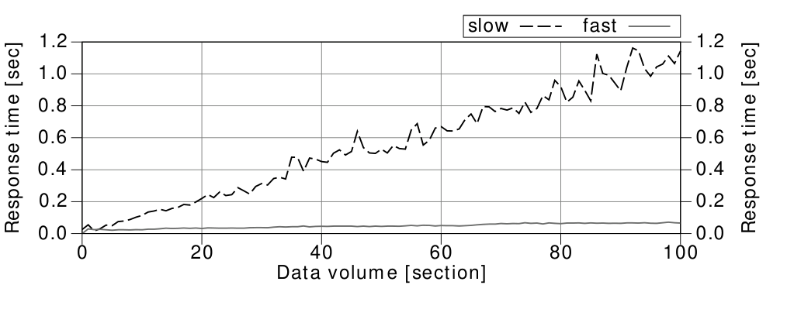
The response time difference between a sloppy and a proper index is stunning. It is hardly possible to compensate for this effect by adding more hardware. Even if you manage to cut the response time with hardware, it is still questionable if it is the best solution for this problem.
Many of the so-called NoSQL systems still claim so solve all performance problems with horizontal scalability. This scalability however is mostly limited to write operations and is accomplished with the so-called eventual consistency model. SQL databases use a strict consistency model that slows down write operations, but that does not necessarily imply bad throughput. Learn more about this in the box entitled “Eventual Consistency and the CAP Theorem”.
More hardware will typically not improve response times. In fact, it might even make the system slower because the additional complexity might accumulate more latencies. Network latencies won’t be a problem if the application and database run on the same computer, but this setup is rather uncommon in production environments where the database and application are usually installed in dedicated hardware. Security policies might even require a firewall between the application server and the database—often doubling the network latency. The more complex the infrastructure gets, the more latencies accumulate and the slower the responses become. This effect often leads to the counterintuitive observation that the expensive production hardware is slower than the cheap desktop PC environment that was used for development.
88
89
Chapter 3: Performance and Scalability
Another very important latency is the disk seek time. Spinning hard disk drives (HDD) need a rather long time to place the mechanical parts so that the requested data can be read—typically a few milliseconds. This latency occurs four times when traversing a four level B-tree—in total: a few dozen milliseconds. Although that’s half an eternity for computers, it is still far below out perception threshold…when done only once. However, it is very easy to trigger hundreds or even thousands disk seeks with a single SQL statement, in particular when combining multiple tables with a join operation. Even though caching reduces the problem dramatically and new technologies like SSD decrease the seek time by an order of magnitude, joins are still generally suspected of being slow. The next chapter will therefore explain how to use indexes for efficient table joins.
90
Chapter 4
An SQL query walks into a bar and sees two tables.
He walks up to them and asks ’Can I join you?’—Source: Unknown
The join operation transforms data from a normalized model into a denormalized form that suits a specific processing purpose. Joining is particularly sensitive to disk seek latencies because it combines scattered data fragments. Proper indexing is again the best solution to reduce response times. The correct index however depends on which of the three common join algorithms is used for the query.
There is, however, one thing that is common to all join algorithms: they process only two tables at a time. A SQL query with more tables requires multiple steps: first building an intermediate result set by joining two tables, then joining the result with the next table and so forth.
Even though the join order has no impact on the final result, it still affects performance. The optimizer will therefore evaluate all possible join order permutations and select the best one. That means that just optimizing a complex statement might become a performance problem. The more tables to join, the more execution plan variants to evaluate—mathematically speaking: n! (factorial growth), though this is not a problem when using bind parameters.
91
Chapter 4: The Join Operation
The nested loops join is the most fundamental join algorithm. It works like using two nested queries: the outer or driving query to fetch the results from one table and a second query for each row from the driving query to fetch the corresponding data from the other table.
You can actually use “nested selects” to implement the nested loops algorithm on your own. Nevertheless that is a troublesome approach because network latencies occur on top of disk latencies—making the overall response time even worse. “Nested selects” are still very common because it is easy to implement them without being aware of it. Object-relational mapping (ORM) tools are particularly “helpful” in this respect…to the extent that the so-called N+1 selects problem has gained a sad notoriety in the field.
The following examples show these “accidental nested select” joins produced with different ORM tools. The examples search for employees whose last name starts with 'WIN' and fetches all SALES for these employees.
The ORMs don’t generate SQL joins—instead they query the SALES table with nested selects. This effect is known as the “N+1 selects problem” or shorter the “N+1 problem” because it executes N+1 selects in total if the driving query returns N rows.
92
Java
The JPA example uses the CriteriaBuilder interface.
CriteriaBuilder queryBuilder = em.getCriteriaBuilder();
CriteriaQuery<Employees>
query = queryBuilder.createQuery(Employees.class);
Root<Employees> r = query.from(Employees.class);
query.where(
queryBuilder.like(
queryBuilder.upper(r.get(Employees_.lastName)),
"WIN%"
)
);
List<Employees> emp = em.createQuery(query).getResultList();
for (Employees e: emp) {
// process Employee
for (Sales s: e.getSales()) {
// process sale for Employee
}
}Hibernate JPA 3.6.0 generates N+1 select queries:
select employees0_.subsidiary_id as subsidiary1_0_
-- MORE COLUMNS
from employees employees0_
where upper(employees0_.last_name) like ?
select sales0_.subsidiary_id as subsidiary4_0_1_
-- MORE COLUMNS
from sales sales0_
where sales0_.subsidiary_id=?
and sales0_.employee_id=?
select sales0_.subsidiary_id as subsidiary4_0_1_
-- MORE COLUMNS
from sales sales0_
where sales0_.subsidiary_id=?
and sales0_.employee_id=?93
Chapter 4: The Join Operation
Perl
The following sample demonstrates Perl’s DBIx::Class framework:
my @employees =
$schema->resultset('Employees')
->search({'UPPER(last_name)' => {-like=>'WIN%'}});foreach my $employee (@employees) {
# process Employee
foreach my $sale ($employee->sales) {
# process Sale for Employee
}
}DBIx::Class 0.08192 generates N+1 select queries:
SELECT me.employee_id, me.subsidiary_id
, me.last_name, me.first_name, me.date_of_birth
FROM employees me
WHERE ( UPPER(last_name) LIKE ? ) SELECT me.sale_id, me.employee_id, me.subsidiary_id
, me.sale_date, me.eur_value
FROM sales me
WHERE ( ( me.employee_id = ?
AND me.subsidiary_id = ? ) ) SELECT me.sale_id, me.employee_id, me.subsidiary_id
, me.sale_date, me.eur_value
FROM sales me
WHERE ( ( me.employee_id = ?
AND me.subsidiary_id = ? ) )PHP
The Doctrine sample uses the query builder interface:
$qb = $em->createQueryBuilder();
$qb->select('e')
->from('Employees', 'e')
->where("upper(e.last_name) like :last_name")
->setParameter('last_name', 'WIN%');
$r = $qb->getQuery()->getResult();foreach ($r as $row) {
// process Employee
foreach ($row->getSales() as $sale) {
// process Sale for Employee
}
}94
Nested Loops
Doctrine 2.0.5 generates N+1 select queries:
SELECT e0_.employee_id AS employee_id0 -- MORE COLUMNS
FROM employees e0_
WHERE UPPER(e0_.last_name) LIKE ? SELECT t0.sale_id AS SALE_ID1 -- MORE COLUMNS
FROM sales t0
WHERE t0.subsidiary_id = ?
AND t0.employee_id = ? SELECT t0.sale_id AS SALE_ID1 -- MORE COLUMNS
FROM sales t0
WHERE t0.subsidiary_id = ?
AND t0.employee_id = ?Most ORMs offer a programmatic way to enable SQL logging as well. That involves the risk of accidentally deploying the setting in production.
95
Chapter 4: The Join Operation
Even though the “nested selects” approach is an anti-pattern, it still explains the nested loops join pretty well. The database executes the join exactly as the ORM tools above. Indexing for a nested loops join is therefore like indexing for the above shown select statements. That is a function-based index on the table EMPLOYEES and a concatenated index for the join predicates on the SALES table:
CREATE INDEX emp_up_name ON employees (UPPER(last_name));
CREATE INDEX sales_emp ON sales (subsidiary_id, employee_id);An SQL join is still more efficient than the nested selects approach—even though it performs the same index lookups—because it avoids a lot of network communication. It is even faster if the total amount of transferred data is bigger because of the duplication of employee attributes for each sale. That is because of the two dimensions of performance: response time and throughput; in computer networks we call them latency and bandwidth. Bandwidth has only a minor impact on the response time but latencies have a huge impact. That means that the number of database round trips is more important for the response time than the amount of data transferred.
Most ORM tools offer some way to create SQL joins. The so-called eager fetching mode is probably the most important one. It is typically configured at the property level in the entity mappings—e.g., for the employees property in the Sales class. The ORM tool will then always join the EMPLOYEES table when accessing the SALES table. Configuring eager fetching in the entity mappings only makes sense if you always need the employee details along with the sales data.
Eager fetching is counterproductive if you do not need the child records every time you access the parent object. For a telephone directory application, it does not make sense to load the SALES records when showing employee details. You might need the related sales data in other cases—but not always. A static configuration is no solution.
For optimal performance, you need to gain full control over joins. The following examples show how to get the greatest flexibility by controlling the join behavior at runtime.
96
Java
The JPA CriteriaBuilder interface provides the Root<>.fetch() method for controlling joins. It allows you to specify when and how to join referred objects to the main query. In this example we use a left join to retrieve all employees even if some of them do not have sales.
CriteriaBuilder qb = em.getCriteriaBuilder();
CriteriaQuery<Employees> q = qb.createQuery(Employees.class);
Root<Employees> r = q.from(Employees.class);
q.where(queryBuilder.like(
queryBuilder.upper(r.get(Employees_.lastName)),
"WIN%")
);r.fetch("sales", JoinType.LEFT);
// needed to avoid duplication of Employee records
query.distinct(true);List<Employees> emp = em.createQuery(query).getResultList();Hibernate 3.6.0 generates the following SQL statement:
select distinct
employees0_.subsidiary_id as subsidiary1_0_0_
, employees0_.employee_id as employee2_0_0_
-- MORE COLUMNS
, sales1_.sale_id as sale1_0__
from employees employees0_
left outer join sales sales1_
on employees0_.subsidiary_id=sales1_.subsidiary_id
and employees0_.employee_id=sales1_.employee_id
where upper(employees0_.last_name) like ?The query has the expected left join but also an unnecessary distinct keyword. Unfortunately, JPA does not provide separate API calls to filter duplicated parent entries without de-duplicating the child records as
97
Chapter 4: The Join Operation
well. The distinct keyword in the SQL query is alarming because most databases will actually filter duplicate records. Only a few databases recognize that the primary keys guarantees uniqueness in that case anyway.
The native Hibernate API solves the problem on the client side using a result set transformer:
Criteria c = session.createCriteria(Employees.class);
c.add(Restrictions.ilike("lastName", 'Win%'));
c.setFetchMode("sales", FetchMode.JOIN);
c.setResultTransformer(Criteria.DISTINCT_ROOT_ENTITY);
List<Employees> result = c.list();It generates the following query:
select this_.subsidiary_id as subsidiary1_0_1_
, this_.employee_id as employee2_0_1_
-- MORE this_ columns on employees
, sales2_.sale_id as sale1_3_
-- MORE sales2_ columns on sales
from employees this_
left outer join sales sales2_
on this_.subsidiary_id=sales2_.subsidiary_id
and this_.employee_id=sales2_.employee_id
where lower(this_.last_name) like ?This method produces straight SQL without unintended clauses. Note that Hibernate uses lower() for case-insensitive queries—an important detail for function-based indexing.
98
Perl
The following example uses Perl’s DBIx::Class framework:
my @employees =
$schema->resultset('Employees')
->search({ 'UPPER(last_name)' => {-like => 'WIN%'}
, {prefetch => ['sales']}
});DBIx::Class 0.08192 generates the following SQL statement:
SELECT me.employee_id, me.subsidiary_id, me.last_name
-- MORE COLUMNS
FROM employees me
LEFT JOIN sales sales
ON (sales.employee_id = me.employee_id
AND sales.subsidiary_id = me.subsidiary_id)
WHERE ( UPPER(last_name) LIKE ? )
ORDER BY sales.employee_id, sales.subsidiary_idNote the order by clause—it was not requested by the application. The database has to sort the result set accordingly, and that might take a while.
PHP
The following example uses PHP’s Doctrine framework:
$qb = $em->createQueryBuilder();
$qb->select('e,s')
->from('Employees', 'e')
->leftJoin('e.sales', 's')
->where("upper(e.last_name) like :last_name")
->setParameter('last_name', 'WIN%');
$r = $qb->getQuery()->getResult();Doctrine 2.0.5 generates the following SQL statement:
SELECT e0_.employee_id AS employee_id0
-- MORE COLUMNS
FROM employees e0_
LEFT JOIN sales s1_
ON e0_.subsidiary_id = s1_.subsidiary_id
AND e0_.employee_id = s1_.employee_id
WHERE UPPER(e0_.last_name) LIKE ?99
Chapter 4: The Join Operation
The execution plan shows the NESTED LOOPS OUTER operation:
---------------------------------------------------------------
|Id |Operation | Name | Rows | Cost |
---------------------------------------------------------------
| 0 |SELECT STATEMENT | | 822 | 38 |
| 1 | NESTED LOOPS OUTER | | 822 | 38 |
| 2 | TABLE ACCESS BY INDEX ROWID| EMPLOYEES | 1 | 4 |
|*3 | INDEX RANGE SCAN | EMP_UP_NAME | 1 | |
| 4 | TABLE ACCESS BY INDEX ROWID| SALES | 821 | 34 |
|*5 | INDEX RANGE SCAN | SALES_EMP | 31 | |
---------------------------------------------------------------
Predicate Information (identified by operation id):
---------------------------------------------------
3 - access(UPPER("LAST_NAME") LIKE 'WIN%')
filter(UPPER("LAST_NAME") LIKE 'WIN%')
5 - access("E0_"."SUBSIDIARY_ID"="S1_"."SUBSIDIARY_ID"(+)
AND "E0_"."EMPLOYEE_ID" ="S1_"."EMPLOYEE_ID"(+))The database retrieves the result from the EMPLOYEES table via EMP_UP_NAME first and fetches the corresponding records from the SALES table for each employee afterwards.
The nested loops join delivers good performance if the driving query returns a small result set. Otherwise, the optimizer might choose an entirely different join algorithm—like the hash join described in the next section, but this is only possible if the application uses a join to tell the database what data it actually needs.
100
The hash join algorithm aims for the weak spot of the nested loops join: the many B-tree traversals when executing the inner query. Instead it loads the candidate records from one side of the join into a hash table that can be probed very quickly for each row from the other side of the join. Tuning a hash join requires an entirely different indexing approach than the nested loops join. Beyond that, it is also possible to improve hash join performance by selecting fewer columns—a challenge for most ORM tools.
The indexing strategy for a hash join is very different because there is no need to index the join columns. Only indexes for independent where predicates improve hash join performance.
Consider the following example. It selects all sales for the past six months with the corresponding employee details:
SELECT *
FROM sales s
JOIN employees e ON (s.subsidiary_id = e.subsidiary_id
AND s.employee_id = e.employee_id )
WHERE s.sale_date > trunc(sysdate) - INTERVAL '6' MONTHThe SALE_DATE filter is the only independent where clause—that means it refers to one table only and does not belong to the join predicates.
101
Chapter 4: The Join Operation
--------------------------------------------------------------
| Id | Operation | Name | Rows | Bytes | Cost |
--------------------------------------------------------------
| 0 | SELECT STATEMENT | | 49244 | 59M| 12049|
|* 1 | HASH JOIN | | 49244 | 59M| 12049|
| 2 | TABLE ACCESS FULL| EMPLOYEES | 10000 | 9M| 478|
|* 3 | TABLE ACCESS FULL| SALES | 49244 | 10M| 10521|
--------------------------------------------------------------
Predicate Information (identified by operation id):
---------------------------------------------------
1 - access("S"."SUBSIDIARY_ID"="E"."SUBSIDIARY_ID"
AND "S"."EMPLOYEE_ID" ="E"."EMPLOYEE_ID")
3 - filter("S"."SALE_DATE">TRUNC(SYSDATE@!)
-INTERVAL'+00-06' YEAR(2) TO MONTH)The first execution step is a full table scan to load all employees into a hash table (plan id 2). The hash table uses the join predicates as key. In the next step, the database does another full table scan on the SALES table and discards all sales that do not satisfy the condition on SALE_DATE (plan id 3). For the remaining SALES records, the database accesses the hash table to load the corresponding employee details.
The sole purpose of the hash table is to act as a temporary in-memory structure to avoid accessing the EMPLOYEE table many times. The hash table is initially loaded in one shot so that there is no need for an index to efficiently fetch single records. The predicate information confirms that not a single filter is applied on the EMPLOYEES table (plan id 2). The query doesn’t have any independent predicates on this table.
That does not mean it is impossible to index a hash join. The independent predicates can be indexed. These are the conditions which are applied during one of the two table access operations. In the above example, it is the filter on SALE_DATE.
CREATE INDEX sales_date ON sales (sale_date);The following execution plan uses this index. Nevertheless it uses a full table scan for the EMPLOYEES table because the query has no independent where predicate on EMPLOYEES.
102
--------------------------------------------------------------
| Id | Operation | Name | Bytes| Cost|
--------------------------------------------------------------
| 0 | SELECT STATEMENT | | 59M| 3252|
|* 1 | HASH JOIN | | 59M| 3252|
| 2 | TABLE ACCESS FULL | EMPLOYEES | 9M| 478|
| 3 | TABLE ACCESS BY INDEX ROWID| SALES | 10M| 1724|
|* 4 | INDEX RANGE SCAN | SALES_DATE| | |
--------------------------------------------------------------
Predicate Information (identified by operation id):
---------------------------------------------------
1 - access("S"."SUBSIDIARY_ID"="E"."SUBSIDIARY_ID"
AND "S"."EMPLOYEE_ID" ="E"."EMPLOYEE_ID" )
4 - access("S"."SALE_DATE" > TRUNC(SYSDATE@!)
-INTERVAL'+00-06' YEAR(2) TO MONTH)Indexing a hash join is—contrary to the nested loops join—symmetric. That means that the join order does not influence indexing. The SALES_DATE index can be used to load the hash table if the join order is reversed.
A rather different approach to optimizing hash join performance is to minimize the hash table size. This method works because an optimal hash join is only possible if the entire hash table fits into memory. The optimizer will therefore automatically use the smaller side of the join for the hash table. The Oracle execution plan shows the estimated memory requirement in the “Bytes” column. In the above execution plan, the EMPLOYEES table needs nine megabytes and is thus the smaller one.
It is also possible to reduce the hash table size by changing the SQL query, for example by adding extra conditions so that the database loads fewer candidate records into the hash table. Continuing the above example it would mean adding a filter on the DEPARTMENT attribute so only sales staff is considered. This improves hash join performance even if there is no index on the DEPARTMENT attribute because the database does not need to store employees who cannot have sales in the hash table. When doing so you have to make sure there are no SALES records for employees that do not work in the respective department. Use constraints to guard your assumptions.
103
Chapter 4: The Join Operation
When minimizing the hash table size, the relevant factor is not the number of rows but the memory footprint. It is, in fact, also possible to reduce the hash table size by selecting fewer columns—only the attributes you really need:
SELECT s.sale_date, s.eur_value
, e.last_name, e.first_name
FROM sales s
JOIN employees e ON (s.subsidiary_id = e.subsidiary_id
AND s.employee_id = e.employee_id )
WHERE s.sale_date > trunc(sysdate) - INTERVAL '6' MONTHThat method seldom introduces bugs because dropping the wrong column will probably quickly result in an error message. Nevertheless it is possible to cut the hash table size considerably, in this particular case from 9 megabyte down to 234 kilobytes—a reduction of 97%.
--------------------------------------------------------------
| Id | Operation | Name | Bytes| Cost|
--------------------------------------------------------------
| 0 | SELECT STATEMENT | | 2067K| 2202|
|* 1 | HASH JOIN | | 2067K| 2202|
| 2 | TABLE ACCESS FULL | EMPLOYEES | 234K| 478|
| 3 | TABLE ACCESS BY INDEX ROWID| SALES | 913K| 1724|
|* 4 | INDEX RANGE SCAN | SALES_DATE| | 133|
--------------------------------------------------------------Although at first glance it seems simple to remove a few columns from an SQL statement, it is a real challenge when using an object-relational mapping (ORM) tool. Support for so-called partial objects is very sparse. The following examples show some possibilities.
Java
JPA defines the FetchType.LAZY in the @Basic annotation. It can be applied on property level:
@Column(name="junk")
@Basic(fetch=FetchType.LAZY)
private String junk;104
JPA providers are free to ignore it:
The LAZY strategy is a hint to the persistence provider runtime that data should be fetched lazily when it is first accessed. The implementation is permitted to eagerly fetch data for which the LAZY strategy hint has been specified.
—EJB 3.0 JPA, paragraph 9.1.18
Hibernate 3.6 implements lazy property fetching via compile time bytecode instrumentation. The instrumentation adds extra code to the compiled classes that does not fetch the LAZY properties until accessed. The approach is fully transparent to the application but it opens the door to a new dimension of N+1 problems: one select for each record and property. This is particularly dangerous because JPA does not offer runtime control to fetch eagerly if needed.
Hibernate’s native query language HQL solves the problem with the FETCH ALL PROPERTIES clause:
select s from Sales s FETCH ALL PROPERTIES
inner join fetch s.employee e FETCH ALL PROPERTIES
where s.saleDate >:dtThe FETCH ALL PROPERTIES clause forces Hibernate to eagerly fetch the entity—even when using instrumented code and the LAZY annotation.
Another option for loading only selected columns is to use data transport objects (DTOs) instead of entities. This method works the same way in HQL and JPQL, that is you initialize an object in the query:
select new SalesHeadDTO(s.saleDate , s.eurValue
,e.firstName, e.lastName)
from Sales s
join s.employee e
where s.saleDate > :dtThe query selects the requested data only and returns a SalesHeadDTO object—a simple Java object (POJO), not an entity.
105
Chapter 4: The Join Operation
Perl
The DBIx::Class framework does not act as entity manager so that inheritance doesn’t cause aliasing problems1. The cookbook supports this approach. The following schema definition defines the Sales class on two levels:
package UseTheIndexLuke::Schema::Result::SalesHead;
use base qw/DBIx::Class::Core/;
__PACKAGE__->table('sales');
__PACKAGE__->add_columns(qw/sale_id employee_id subsidiary_id
sale_date eur_value/);
__PACKAGE__->set_primary_key(qw/sale_id/);
__PACKAGE__->belongs_to('employee', 'Employees',
{'foreign.employee_id' => 'self.employee_id'
,'foreign.subsidiary_id' => 'self.subsidiary_id'});
package UseTheIndexLuke::Schema::Result::Sales;
use base qw/UseTheIndexLuke::Schema::Result::SalesHead/;
__PACKAGE__->table('sales');
__PACKAGE__->add_columns(qw/junk/);The Sales class is derived from the SalesHead class and adds the missing attribute. You can use both classes as you need them. Please note that the table setup is required in the derived class as well.
You can fetch all employee details via prefetch or just selected columns as shown below:
my @sales =
$schema->resultset('SalesHead')
->search($cond
,{ join => 'employee'
,'+columns' => ['employee.first_name'
,'employee.last_name']
}
);It is not possible to load only selected columns from the root table—SalesHead in this case.
1 http://en.wikipedia.org/wiki/Aliasing_%28computing%29
106
DBIx::Class 0.08192 generates the following SQL. It fetches all columns from the SALES table and the selected attributes from EMPLOYEES:
SELECT me.sale_id,
me.employee_id,
me.subsidiary_id,
me.sale_date,
me.eur_value,
employee.first_name,
employee.last_name
FROM sales me
JOIN employees employee
ON( employee.employee_id = me.employee_id
AND employee.subsidiary_id = me.subsidiary_id)
WHERE(sale_date > ?)PHP
Version 2 of the Doctrine framework supports attribute selection at runtime. The documentation states that the partially loaded objects might behave oddly and requires the partial keyword to acknowledge the risks. Furthermore, you must select the primary key columns explicitly:
$qb = $em->createQueryBuilder();
$qb->select('partial s.{sale_id, sale_date, eur_value},'
. 'partial e.{employee_id, subsidiary_id, '
. 'first_name , last_name}')
->from('Sales', 's')
->join('s.employee', 'e')
->where("s.sale_date > :dt")
->setParameter('dt', $dt, Type::DATETIME);The generated SQL contains the requested columns and once more the SUBSIDIARY_ID and EMPLOYEE_ID from the SALES table.
107
Chapter 4: The Join Operation
SELECT s0_.sale_id AS sale_id0,
s0_.sale_date AS sale_date1,
s0_.eur_value AS eur_value2,
e1_.employee_id AS employee_id3,
e1_.subsidiary_id AS subsidiary_id4,
e1_.first_name AS first_name5,
e1_.last_name AS last_name6,
s0_.subsidiary_id AS subsidiary_id7,
s0_.employee_id AS employee_id8
FROM sales s0_
INNER JOIN employees e1_
ON s0_.subsidiary_id = e1_.subsidiary_id
AND s0_.employee_id = e1_.employee_id
WHERE s0_.sale_date > ?The returned objects are compatible with fully loaded objects, but the missing columns remain uninitialized. Accessing them does not trigger an exception.
108
The sort-merge join combines two sorted lists like a zipper. Both sides of the join must be sorted by the join predicates.
A sort-merge join needs the same indexes as the hash join, that is an index for the independent conditions to read all candidate records in one shot. Indexing the join predicates is useless. Everything is just like a hash join so far. Nevertheless there is one aspect that is unique to the sort-merge join: absolute symmetry. The join order does not make any difference—not even for performance. This property is very useful for outer joins. For other algorithms the direction of the outer joins (left or right) implies the join order—but not for the sort-merge join. The sort-merge join can even do a left and right outer join at the same time—a so-called full outer join.
Although the sort-merge join performs very well once the inputs are sorted, it is hardly used because sorting both sides is very expensive. The hash join, on the other hand, needs to preprocess only one side.
The strength of the sort-merge join emerges if the inputs are already sorted. This is possible by exploiting the index order to avoid the sort operations entirely. Chapter 6, “Sorting and Grouping”, explains this concept in detail.
The hash join algorithm is superior in many cases nevertheless.
109
110
Chapter 5
The Second Power of Indexing
The term cluster is used in various fields. A star cluster, for example, is a group of stars. A computer cluster, on the other hand, is a group of computers that work closely together—either to solve a complex problem (high-performance computing cluster) or to increase availability (failover cluster). Generally speaking, clusters are related things that appear together.
In the field of computing there is one more type of cluster—one that is often misunderstood: the data cluster. Clustering data means to store consecutively accessed data closely together so that accessing it requires fewer IO operations. Data clusters are very important in terms of database tuning. Computer clusters, on the other hand, are also very common in a database context—thus making the term cluster very ambiguous. The sentence “Let’s use a cluster to improve database performance” is just one example; it might refer to a computer cluster but could also mean a data cluster. In this chapter, cluster generally refers to data clusters.
The simplest data cluster in an SQL database is the row. Databases store all columns of a row in the same database block if possible. Exceptions apply if a row doesn’t fit into a single block—e.g., when LOB types are involved.
111
Chapter 5: Clustering Data
Indexes allow one to cluster data. The basis for this was already explained in Chapter 1, “Anatomy of an Index”: the index leaf nodes store the indexed columns in an ordered fashion so that similar values are stored next to each other. That means that indexes build clusters of rows with similar values.
This capability to cluster data is so important that I refer to it as the second power of indexing.
The following sections explain how to use indexes to cluster data and improve query performance.
Very often index filter predicates indicate improper index usage caused by an incorrect column order in a concatenated index. Nevertheless index filter predicates can be used for a good reason as well—not to improve range scan performance but to group consecutively accessed data together.
Where clause predicates that cannot serve as access predicate are good candidates for this technique:
SELECT first_name, last_name, subsidiary_id, phone_number
FROM employees
WHERE subsidiary_id = ?
AND UPPER(last_name) LIKE '%INA%';Remember that LIKE expressions with leading wildcards cannot use the index tree. That means that indexing LAST_NAME doesn’t narrow the scanned index range—no matter if you index LAST_NAME or UPPER(last_name). This condition is therefore no good candidate for indexing.
However the condition on SUBSIDIARY_ID is well suited for indexing. We don’t even need to add a new index because the SUBSIDIARY_ID is already the leading column in the index for the primary key.
112
--------------------------------------------------------------
|Id | Operation | Name | Rows | Cost |
--------------------------------------------------------------
| 0 | SELECT STATEMENT | | 17 | 230 |
|*1 | TABLE ACCESS BY INDEX ROWID| EMPLOYEES | 17 | 230 |
|*2 | INDEX RANGE SCAN | EMPLOYEE_PK| 333 | 2 |
--------------------------------------------------------------
Predicate Information (identified by operation id):
---------------------------------------------------
1 - filter(UPPER("LAST_NAME") LIKE '%INA%')
2 - access("SUBSIDIARY_ID"=TO_NUMBER(:A))In the above execution plan, the cost value raises a hundred times from the INDEX RANGE SCAN to the subsequent TABLE ACCESS BY INDEX ROWID operation. In other words: the table access causes the most work. It is actually a common pattern and is not a problem by itself. Nevertheless, it is the most significant contributor to the overall execution time of this query.
The table access is not necessarily a bottleneck if the accessed rows are stored in a single table block because the database can fetch all rows with a single read operation. If the same rows are spread across many different blocks, in contrast, the table access can become a serious performance problem because the database has to fetch many blocks in order to retrieve all the rows. That means the performance depends on the physical distribution of the accessed rows—in other words: it depends on the clustering of rows.
It is in fact possible to improve query performance by re-ordering the rows in the table so they correspond to the index order. This method is, however, rarely applicable because you can only store the table rows in one sequence. That means you can optimize the table for one index only. Even if you can choose a single index for which you would like to optimizer the table, it is still a difficult task because most databases only offer rudimentary tools for this task. So-called row sequencing is, after all, a rather impractical approach.
Chapter 5: Clustering Data
This is exactly where the second power of indexing—clustering data—comes in. You can add many columns to an index so that they are automatically stored in a well defined order. That makes an index a powerful yet simple tool for clustering data.
To apply this concept to the above query, we must extend the index to cover all columns from the where clause—even if they do not narrow the scanned index range:
CREATE INDEX empsubupnam ON employees
(subsidiary_id, UPPER(last_name));The column SUBSIDIARY_ID is the first index column so it can be used as an access predicate. The expression UPPER(last_name) covers the LIKE filter as index filter predicate. Indexing the uppercase representation saves a few CPU cycles during execution, but a straight index on LAST_NAME would work as well. You’ll find more about this in the next section.
--------------------------------------------------------------
| Id | Operation | Name | Rows | Cost |
--------------------------------------------------------------
| 0 | SELECT STATEMENT | | 17 | 20 |
| 1 | TABLE ACCESS BY INDEX ROWID| EMPLOYEES | 17 | 20 |
|* 2 | INDEX RANGE SCAN | EMPSUBUPNAM| 17 | 3 |
--------------------------------------------------------------
Predicate Information (identified by operation id):
---------------------------------------------------
2 - access("SUBSIDIARY_ID"=TO_NUMBER(:A))
filter(UPPER("LAST_NAME") LIKE '%INA%')The new execution plan shows the very same operations as before. The cost value dropped considerably nonetheless. In the predicate information we can see that the LIKE filter is already applied during the INDEX RANGE SCAN. Rows that do not fulfill the LIKE filter are immediately discarded. The table access does not have any filter predicates anymore. That means it does not load rows that do not fulfill the where clause.
114
The difference between the two execution plans is clearly visible in the “Rows” column. According to the optimizer’s estimate, the query ultimately matches 17 records. The index scan in the first execution plan delivers 333 rows nevertheless. The database must then load these 333 rows from the table to apply the LIKE filter which reduces the result to 17 rows. In the second execution plan, the index access does not deliver those rows in the first place so the database needs to execute the TABLE ACCESS BY INDEX ROWID operation only 17 times.
You should also note that the cost value of the INDEX RANGE SCAN operation grew from two to three because the additional column makes the index bigger. In view of the performance gain, it is an acceptable compromise.
This trivial example seems to confirm the common wisdom to index every column from the where clause. This “wisdom”, however, ignores the relevance of the column order which determines what conditions can be used as access predicates and thus has a huge impact on performance. The decision about column order should therefore never be left to chance.
The index size grows with the number of columns as well—especially when adding text columns. Of course the performance does not get better for a bigger index even though the logarithmic scalability limits the impact considerably. You should by no means add all columns that are mentioned in the where clause to an index but instead only use index filter predicates intentionally to reduce the data volume during an earlier execution step.
Chapter 5: Clustering Data
The index-only scan is one of the most powerful tuning methods of all. It not only avoids accessing the table to evaluate the where clause, but avoids accessing the table completely if the database can find the selected columns in the index itself.
To cover an entire query, an index must contain all columns from the SQL statement—in particular also the columns from the select clause as shown in the following example:
CREATE INDEX sales_sub_eur
ON sales
( subsidiary_id, eur_value );
SELECT SUM(eur_value)
FROM sales
WHERE subsidiary_id = ?;Of course indexing the where clause takes precedence over the other clauses. The column SUBSIDIARY_ID is therefore in the first position so it qualifies as an access predicate.
The execution plan shows the index scan without a subsequent table access (TABLE ACCESS BY INDEX ROWID).
----------------------------------------------------------
| Id | Operation | Name | Rows | Cost |
----------------------------------------------------------
| 0 | SELECT STATEMENT | | 1 | 104 |
| 1 | SORT AGGREGATE | | 1 | |
|* 2 | INDEX RANGE SCAN| SALES_SUB_EUR |40388 | 104 |
----------------------------------------------------------
Predicate Information (identified by operation id):
---------------------------------------------------
2 - access("SUBSIDIARY_ID"=TO_NUMBER(:A))The index covers the entire query so it is also called a covering index.
116
The index has a copy of the EUR_VALUE column so the database can use the value stored in the index. Accessing the table is not required because the index has all of the information to satisfy the query.
An index-only scan can improve performance enormously. Just look at the row count estimate in the execution plan: the optimizer expects to aggregate more than 40,000 rows. That means that the index-only scan prevents 40,000 table fetches—if each row is in a different table block. If the index has a good clustering factor—that is, if the respective rows are well clustered in a few table blocks—the advantage may be significantly lower.
Besides the clustering factor, the number of selected rows limits the potential performance gain of an index-only scan. If you select a single row, for example, you can only save a single table access. Considering that the tree traversal needs to fetch a few blocks as well, the saved table access might become negligible.
The index-only scan is an aggressive indexing strategy. Do not design an index for an index-only scan on suspicion only because it unnecessarily uses memory and increases the maintenance effort needed for update statements. See Chapter 8, “Modifying Data”. In practice, you should first index without considering the select clause and only extend the index if needed.
Chapter 5: Clustering Data
Index-only scans can also cause unpleasant surprises, for example if we limit the query to recent sales:
SELECT SUM(eur_value)
FROM sales
WHERE subsidiary_id = ?
AND sale_date > ?;Without looking at the execution plan, one could expect the query to run faster because it selects fewer rows. The where clause, however, refers to a column that is not in the index so that the database must access the table to load this column.
--------------------------------------------------------------
| Id | Operation | Name | Rows | Cost |
--------------------------------------------------------------
| 0 | SELECT STATEMENT | | 1 | 371 |
| 1 | SORT AGGREGATE | | 1 | |
|* 2 | TABLE ACCESS BY INDEX ROWID | SALES | 2019 | 371 |
|* 3 | INDEX RANGE SCAN | SALES_DATE | 10541 | 30 |
--------------------------------------------------------------
Predicate Information (identified by operation id):
---------------------------------------------------
2 - filter("SUBSIDIARY_ID"=TO_NUMBER(:A))
3 - access("SALE_DATE">:B)The table access increases the response time although the query selects fewer rows. The relevant factor is not how many rows the query delivers but how many rows the database must inspect to find them.
If an index can no longer be used for an index-only scan, the optimizer will choose the next best execution plan. That means the optimizer might select an entirely different execution plan or, as above, a similar execution plan with another index. In this case it uses an index on SALE_DATE, which is a leftover from the previous chapter.
118
From the optimizer’s perspective, this index has two advantages over SALES_SUB_EUR. The optimizer believes that the filter on SALE_DATE is more selective than the one on SUBSIDIARY_ID. You can see that in the respective “Rows” column of the last two execution plans (about 10,000 versus 40,000). These estimations are, however, purely arbitrary because the query uses bind parameters. The SALE_DATE condition could, for example, select the entire table when providing the date of the first sale.
The second advantage of the SALES_DATE index is that is has a better clustering factor. This is a valid reason because the SALES table only grows chronologically. New rows are always appended to the end of the table as long as there are no rows deleted. The table order therefore corresponds to the index order because both are roughly sorted chronologically—the index has a good clustering factor.
When using an index with a good clustering factor, the selected tables rows are stored closely together so that the database only needs to read a few table blocks to get all the rows. Using this index, the query might be fast enough without an index-only scan. In this case we should remove the unneeded columns from the other index again.
In this particular example, there was a happy coincidence. The new filter on SALE_DATE not only prevented an index-only scan but also opened a new access path at the same time. The optimizer was therefore able to limit the performance impact of this change. It is, however, also possible to prevent an index only scan by adding columns to other clauses. However adding a column to the select clause can never open a new access path which could limit the impact of losing the index-only scan.
Chapter 5: Clustering Data
Function-based indexes can also cause unpleasant surprises in connection with index-only scans. An index on UPPER(last_name) cannot be used for an index-only scan when selecting the LAST_NAME column. In the previous section we should have indexed the LAST_NAME column itself to support the LIKE filter and allow it to be used for an index-only scan when selecting the LAST_NAME column.
Aggregating queries like the one shown above make good candidates for index-only scans. They query many rows but only a few columns, making a slim index sufficient for supporting an index-only scan. The more columns you query, the more columns you have to add to the indexed to support an index-only scan. As a developer you should therefore only select the columns you really need.
Regardless of the fact that indexing many rows needs a lot of space, you can also reach the limits of your database. Most databases impose rather rigid limits on the number of columns per index and the total size of an index entry. That means you cannot index an arbitrary number of columns nor arbitrarily long columns. The following overview lists the most important limitations. Nevertheless there are indexes that cover an entire table as we see in the next section.
120
MySQL
MySQL 5.6 with InnoDB limits every single column to 767 bytes and all columns together to 3072 bytes. MyISAM indexes are limited to 16 columns and a maximum key length of 1000 bytes.
MySQL has a unique feature called “prefix indexing” (sometimes also called “partial indexing”). This means indexing only the first few characters of a column—so it has nothing to do with the partial indexes described in Chapter 2. If you index a column that exceeds the allowed column length (767 bytes for InnoDB), MySQL automatically truncates the column accordingly. This is the reason the create index statement succeeds with the warning “Specified key was too long; max key length is 767 bytes” if you exceed the limit. That means that the index doesn’t contain a full copy of the column anymore and is therefore of limited use for an index-only scan (similar to a function-based index).
You can use MySQL’s prefix indexing explicitly to prevent exceeding the total key length limit if you get the error message “Specified key was too long; max key length is [1000/3072] bytes.” The following example only indexes the first ten characters of the LAST_NAME column.
CREATE INDEX .. ON employees (last_name(10));Oracle Database
The maximum index key length depends on the block size and the index storage parameters (75% of the database block size minus some overhead). A B-tree index is limited to 32 columns.
When using Oracle 11g with all defaults in place (8k blocks), the maximum index key length is 6398 bytes. Exceeding this limit causes the error message “ORA-01450: maximum key length (6398) exceeded.”
PostgreSQL
The PostgreSQL database supports index-only scans since release 9.2.
The key length of B-tree indexes is limited to 2713 bytes (hardcoded, approx. BLCKSZ/3). The respective error message “index row size ... exceeds btree maximum, 2713” appears only when executing an insert or update that exceeds the limit. B-tree indexes can contain up to 32 columns.
Chapter 5: Clustering Data
SQL Server limits the key length to 900 bytes and 16 key columns. Nevertheless, SQL Server has a feature that allows you to add arbitrarily long columns to an index for the sole purpose of supporting an index-only scan. For that, SQL Server distinguishes between key columns and nonkey columns.
Key columns are index columns as they were discussed so far. Nonkey columns are additional columns that are only stored in the index leaf nodes. Nonkey columns can be arbitrarily long but cannot be used as access predicates (seek predicates).
Nonkey columns are defined with the include keyword of the create index command:
CREATE INDEX empsubupnam
ON employees
(subsidiary_id, last_name)
INCLUDE(phone_number, first_name);The index-only scan executes an SQL statement using only the redundant data stored in the index. The original data in the heap table is not needed. If we take that concept to the next level and put all columns into the index, you may wonder why we need the heap table.
Some databases can indeed use an index as primary table store. The Oracle database calls this concept index-organized tables (IOT), other databases use the term clustered index. In this section, both terms are used to either put the emphasis on the table or the index characteristics as needed.
An index-organized table is thus a B-tree index without a heap table. This results in two benefits: (1) it saves the space for the heap structure; (2) every access on a clustered index is automatically an index-only scan. Both benefits sound promising but are hardly achievable in practice.
122
The drawbacks of an index-organized table become apparent when creating another index on the same table. Analogous to a regular index, a so-called secondary index refers to the original table data—which is stored in the clustered index. There, the data is not stored statically as in a heap table but can move at any time to maintain the index order. It is therefore not possible to store the physical location of the rows in the index-organized table in the secondary index. The database must use a logical key instead.
The following figures show an index lookup for finding all sales on May 23rd 2012. For comparison, we will first look at Figure 5.1 that shows the process when using a heap table. The execution involves two steps: (1) the INDEX RANGE SCAN; (2) the TABLE ACCESS BY INDEX ROWID.
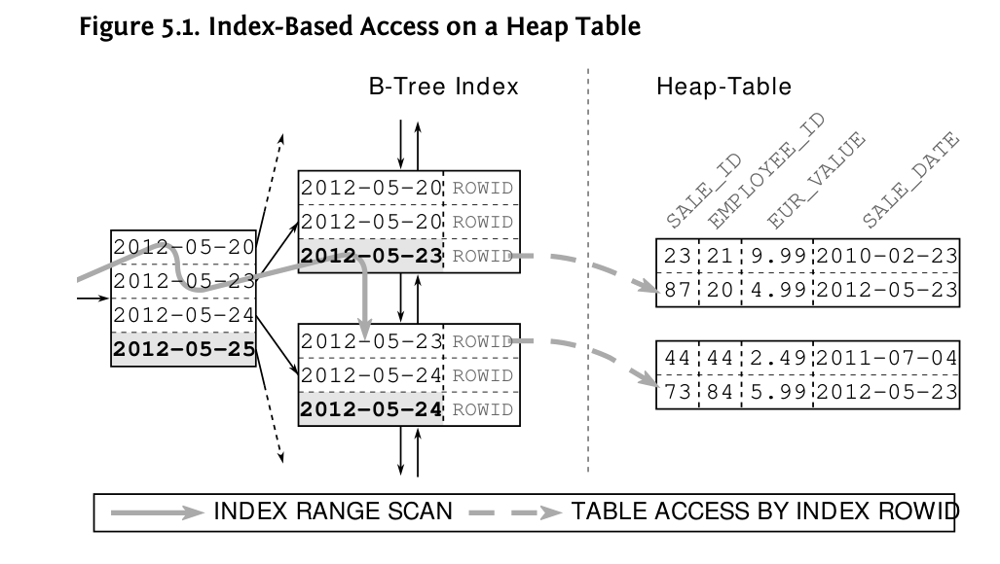
Although the table access might become a bottleneck, it is still limited to one read operation per row because the index has the ROWID as a direct pointer to the table row. The database can immediately load the row from the heap table because the index has its exact position. The picture changes, however, when using a secondary index on an index-organized table. A secondary index does not store a physical pointer (ROWID) but only the key values of the clustered index—the so-called clustering key. Often that is the primary key of the index-organized table.
Chapter 5: Clustering Data
Accessing a secondary index does not deliver a ROWID but a logical key for searching the clustered index. A single access, however, is not sufficient for searching clustered index—it requires a full tree traversal. That means that accessing a table via a secondary index searches two indexes: the secondary index once (INDEX RANGE SCAN), then the clustered index for each row found in the secondary index (INDEX UNIQUE SCAN).

Figure 5.2 makes it clear, that the B-tree of the clustered index stands between the secondary index and the table data.
Accessing an index-organized table via a secondary index is very inefficient, and it can be prevented in the same way one prevents a table access on a heap table: by using an index-only scan—in this case better described as “secondary-index-only scan”. The performance advantage of an index-only scan is even bigger because it not only prevents a single access but an entire INDEX UNIQUE SCAN.
124
Using this example we can also see that databases exploit all the redundancies they have. Bear in mind that a secondary index stores the clustering key for each index entry. Consequently, we can query the clustering key from a secondary index without accessing the index-organized table:
SELECT sale_id
FROM sales_iot
WHERE sale_date = ?;-------------------------------------------------
| Id | Operation | Name | Cost |
-------------------------------------------------
| 0 | SELECT STATEMENT | | 4 |
|* 1 | INDEX RANGE SCAN| SALES_IOT_DATE | 4 |
-------------------------------------------------
Predicate Information (identified by operation id):
---------------------------------------------------
1 - access("SALE_DATE"=:DT)The table SALES_IOT is an index-organized table that uses SALE_ID as clustering key. Although the index SALE_IOT_DATE is on the SALE_DATE column only, it still has a copy of the clustering key SALE_ID so it can satisfy the query using the secondary index only.
When selecting other columns, the database has to run an INDEX UNIQUE SCAN on the clustered index for each row:
SELECT eur_value
FROM sales_iot
WHERE sale_date = ?;---------------------------------------------------
| Id | Operation | Name | Cost |
---------------------------------------------------
| 0 | SELECT STATEMENT | | 13 |
|* 1 | INDEX UNIQUE SCAN| SALES_IOT_PK | 13 |
|* 2 | INDEX RANGE SCAN| SALES_IOT_DATE | 4 |
---------------------------------------------------
Predicate Information (identified by operation id):
---------------------------------------------------
1 - access("SALE_DATE"=:DT)
2 - access("SALE_DATE"=:DT)Chapter 5: Clustering Data
Index-organized tables and clustered indexes are, after all, not as useful as it seems at first sight. Performance improvements on the clustered index are easily lost on when using a secondary index. The clustering key is usually longer than a ROWID so that the secondary indexes are larger than they would be on a heap table, often eliminating the savings from the omission of the heap table. The strength of index-organized tables and clustered indexes is mostly limited to tables that do not need a second index. Heap tables have the benefit of providing a stationary master copy that can be easily referenced.
Database support for index-organized tables and clustered index is very inconsistent. The overview on the next page explains the most important specifics.
126
MySQL
The MyISAM engine only uses heap tables while the InnoDB engine always uses clustered indexes. That means you do not directly have a choice.
Oracle Database
The Oracle database uses heap tables by default. Index-organized tables can be created using the ORGANIZATION INDEX clause:
CREATE TABLE (
id NUMBER NOT NULL PRIMARY KEY,
[...]
) ORGANIZATION INDEX;The Oracle database always uses the primary key as the clustering key.
PostgreSQL
PostgreSQL only uses heap tables.
You can, however, use the CLUSTER clause to align the contents of the heap table with an index.
SQL Server
By default SQL Server uses clustered indexes (index-organized tables) using the primary key as clustering key. Nevertheless you can use arbitrary columns for the clustering key—even non-unique columns.
To create a heap table you must use the NONCLUSTERED clause in the primary key definition:
CREATE TABLE (
id NUMBER NOT NULL,
[...]
CONSTRAINT pk PRIMARY KEY NONCLUSTERED (id)
);Dropping a clustered index transforms the table into a heap table.
SQL Server’s default behavior often causes performance problems when using secondary indexes.
128
Chapter 6
Sorting is a very resource intensive operation. It needs a fair amount of CPU time, but the main problem is that the database must temporarily buffer the results. After all, a sort operation must read the complete input before it can produce the first output. Sort operations cannot be executed in a pipelined manner—this can become a problem for large data sets.
An index provides an ordered representation of the indexed data: this principle was already described in Chapter 1. We could also say that an index stores the data in a presorted fashion. The index is, in fact, sorted just like when using the index definition in an order by clause. It is therefore no surprise that we can use indexes to avoid the sort operation to satisfy an order by clause.
Ironically, an INDEX RANGE SCAN also becomes inefficient for large data sets—especially when followed by a table access. This can nullify the savings from avoiding the sort operation. A FULL TABLE SCAN with an explicit sort operation might be even faster in this case. Again, it is the optimizer’s job to evaluate the different execution plans and select the best one.
An indexed order by execution not only saves the sorting effort, however; it is also able to return the first results without processing all input data. The order by is thus executed in a pipelined manner. Chapter 7, “Partial Results”, explains how to exploit the pipelined execution to implement efficient pagination queries. This makes the pipelined order by so important that I refer to it as the third power of indexing.
This chapter explains how to use an index for a pipelined order by execution. To this end we have to pay special attention to the interactions with the where clause and also to ASC and DESC modifiers. The chapter concludes by applying these techniques to group by clauses as well.
129
Chapter 6: Sorting and Grouping
SQL queries with an order by clause do not need to sort the result explicitly if the relevant index already delivers the rows in the required order. That means the same index that is used for the where clause must also cover the order by clause.
As an example, consider the following query that selects yesterday’s sales ordered by sale data and product ID:
SELECT sale_date, product_id, quantity
FROM sales
WHERE sale_date = TRUNC(sysdate) - INTERVAL '1' DAY
ORDER BY sale_date, product_id;There is already an index on SALE_DATE that can be used for the where clause. The database must, however, perform an explicit sort operation to satisfy the order by clause:
---------------------------------------------------------------
|Id | Operation | Name | Rows | Cost |
---------------------------------------------------------------
| 0 | SELECT STATEMENT | | 320 | 18 |
| 1 | SORT ORDER BY | | 320 | 18 |
| 2 | TABLE ACCESS BY INDEX ROWID| SALES | 320 | 17 |
|*3 | INDEX RANGE SCAN | SALES_DATE | 320 | 3 |
---------------------------------------------------------------An INDEX RANGE SCAN delivers the result in index order anyway. To take advantage of this fact, we just have to extend the index definition so it corresponds to the order by clause:
DROP INDEX sales_date;
CREATE INDEX sales_dt_pr ON sales (sale_date, product_id);---------------------------------------------------------------
|Id | Operation | Name | Rows | Cost |
---------------------------------------------------------------
| 0 | SELECT STATEMENT | | 320 | 300 |
| 1 | TABLE ACCESS BY INDEX ROWID| SALES | 320 | 300 |
|*2 | INDEX RANGE SCAN | SALES_DT_PR | 320 | 4 |
---------------------------------------------------------------The sort operation SORT ORDER BY disappeared from the execution plan even though the query still has an order by clause. The database exploits the index order and skips the explicit sort operation.
Even though the new execution plan has fewer operations, the cost value has increased considerably because the clustering factor of the new index is worse (see “Automatically Optimized Clustering Factor” on page 133).
At this point, it should just be noted that the cost value is not always a good indicator of the execution effort.
For this optimization, it is sufficient that the scanned index range is sorted according to the order by clause. Thus the optimization also works for this particular example when sorting by PRODUCT_ID only:
SELECT sale_date, product_id, quantity
FROM sales
WHERE sale_date = TRUNC(sysdate) - INTERVAL '1' DAY
ORDER BY product_id;In Figure 6.1 we can see that the PRODUCT_ID is the only relevant sort criterion in the scanned index range. Hence the index order corresponds to the order by clause in this index range so that the database can omit the sort operation.

Chapter 6: Sorting and Grouping
This optimization can cause unexpected behavior when extending the scanned index range:
SELECT sale_date, product_id, quantity
FROM sales
WHERE sale_date >= TRUNC(sysdate) - INTERVAL '1' DAY
ORDER BY product_id;This query does not retrieve yesterday’s sales but all sales since yesterday. That means it covers several days and scans an index range that is not exclusively sorted by the PRODUCT_ID. If we look at Figure 6.1 again and extend the scanned index range to the bottom, we can see that there are again smaller PRODUCT_ID values. The database must therefore use an explicit sort operation to satisfy the order by clause.
---------------------------------------------------------------
|Id |Operation | Name | Rows | Cost |
---------------------------------------------------------------
| 0 |SELECT STATEMENT | | 320 | 301 |
| 1 | SORT ORDER BY | | 320 | 301 |
| 2 | TABLE ACCESS BY INDEX ROWID| SALES | 320 | 300 |
|*3 | INDEX RANGE SCAN | SALES_DT_PR | 320 | 4 |
---------------------------------------------------------------If the database uses a sort operation even though you expected a pipelined execution, it can have two reasons: (1) the execution plan with the explicit sort operation has a better cost value; (2) the index order in the scanned index range does not correspond to the order by clause.
A simple way to tell the two cases apart is to use the full index definition in the order by clause—that means adjusting the query to the index in order to eliminate the second cause. If the database still uses an explicit sort operation, the optimizer prefers this plan due to its cost value; otherwise the database cannot use the index for the original order by clause.
In both cases, you might wonder if and how you could possibly reach a pipelined order by execution. For this you can execute the query with the full index definition in the order by clause and inspect the result. You will often realize that you have a false perception of the index and that the index order is indeed not as required by the original order by clause so the database cannot use the index to avoid a sort operation.
If the optimizer prefers an explicit sort operation for its cost value, it is usually because the optimizer takes the best execution plan for the full execution of the query. In other words, the optimizer opts for the execution plan which is the fastest to get the last record. If the database detects that the application fetches only the first few rows, it might in turn prefer an indexed order by. Chapter 7, “Partial Results”, explains the corresponding optimization methods.
The Oracle database keeps the clustering factor at a minimum by considering the ROWID for the index order. Whenever two index entries have the same key values, the ROWID decides upon their final order.
The index is therefore also ordered according to the table order and thus has the smallest possible clustering factor because the ROWID represents the physical address of table row.
By adding another column to an index, you insert a new sort criterion before the ROWID. The database has less freedom in aligning the index entries according to the table order so the index clustering factor can only get worse.
Regardless, it is still possible that the index order roughly corresponds to the table order. The sales of a day are probably still clustered together in the table as well as in the index—even though their sequence is not exactly the same anymore. The database has to read the table blocks multiple times when using the SALE_DT_PR index—but these are just the same table blocks as before. Due to the caching of frequently accessed data, the performance impact could be considerably lower than indicated by the cost values.
Chapter 6: Sorting and Grouping
Databases can read indexes in both directions. That means that a pipelined order by is also possible if the scanned index range is in the exact opposite order as specified by the order by clause. Although ASC and DESC modifiers in the order by clause can prevent a pipelined execution, most databases offer a simple way to change the index order so an index becomes usable for a pipelined order by.
The following example uses an index in reverse order. It delivers the sales since yesterday ordered by descending date and descending PRODUCT_ID.
SELECT sale_date, product_id, quantity
FROM sales
WHERE sale_date >= TRUNC(sysdate) - INTERVAL '1' DAY
ORDER BY sale_date DESC, product_id DESC;The execution plan shows that the database reads the index in a descending direction.
---------------------------------------------------------------
|Id |Operation | Name | Rows | Cost |
---------------------------------------------------------------
| 0 |SELECT STATEMENT | | 320 | 300 |
| 1 | TABLE ACCESS BY INDEX ROWID | SALES | 320 | 300 |
|*2 | INDEX RANGE SCAN DESCENDING| SALES_DT_PR | 320 | 4 |
---------------------------------------------------------------In this case, the database uses the index tree to find the last matching entry. From there on, it follows the leaf node chain “upwards” as shown in Figure 6.2. After all, this is why the database uses a doubly linked list to build the leaf node chain.
Of course it is crucial that the scanned index range is in the exact opposite order as needed for the order by clause.
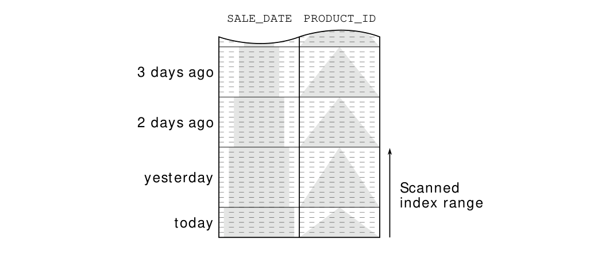
The following example does not fulfill this prerequisite because it mixes ASC and DESC modifiers in the order by clause:
SELECT sale_date, product_id, quantity
FROM sales
WHERE sale_date >= TRUNC(sysdate) - INTERVAL '1' DAY
ORDER BY sale_date ASC, product_id DESC;The query must first deliver yesterday’s sales ordered by descending PRODUCT_ID and then today’s sales, again by descending PRODUCT_ID.
Figure 6.3 illustrates this process. To get the sales in the required order, the database would have to “jump” during the index scan.
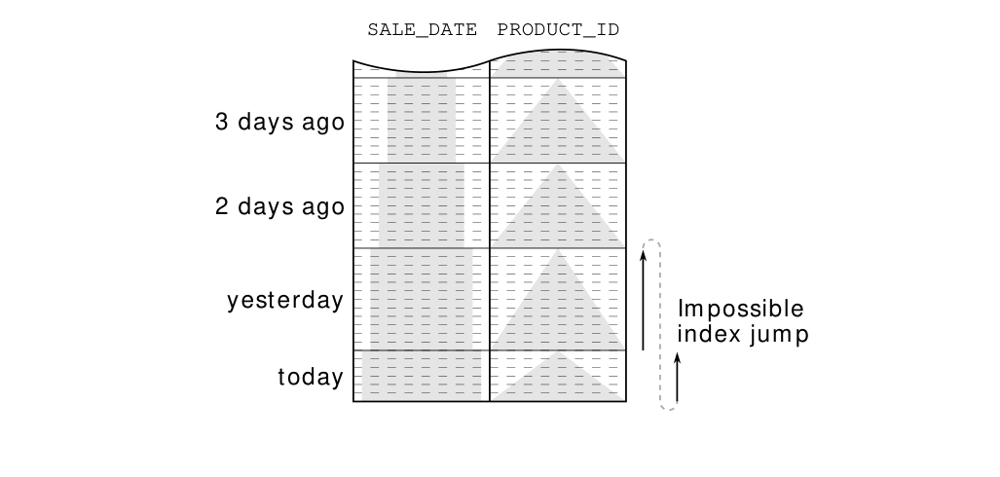
Chapter 6: Sorting and Grouping
However, the index has no link from yesterday’s sale with the smallest PRODUCT_ID to today’s sale with the greatest. The database can therefore not use this index to avoid an explicit sort operation.
For cases like this, most databases offer a simple method to adjust the index order to the order by clause. Concretely, this means that you can use ASC and DESC modifiers in the index declaration:
DROP INDEX sales_dt_pr;
CREATE INDEX sales_dt_pr
ON sales (sale_date ASC, product_id DESC);Now the index order corresponds to the order by clause so the database can omit the sort operation:
---------------------------------------------------------------
|Id | Operation | Name | Rows | Cost |
---------------------------------------------------------------
| 0 | SELECT STATEMENT | | 320 | 301 |
| 1 | TABLE ACCESS BY INDEX ROWID| SALES | 320 | 301 |
|*2 | INDEX RANGE SCAN | SALES_DT_PR | 320 | 4 |
---------------------------------------------------------------Figure 6.4 shows the new index order. The change in the sort direction for the second column in a way swaps the direction of the arrows from the previous figure. That makes the first arrow end where the second arrow starts so that index has the rows in the desired order.
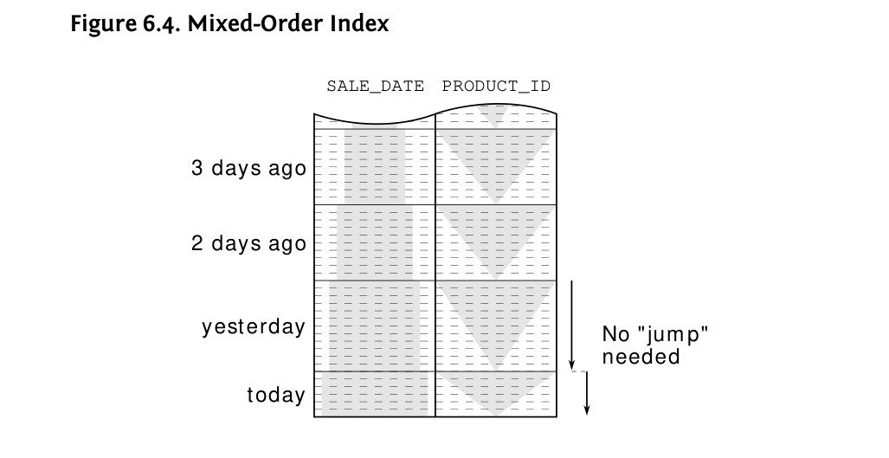
ASC/DESC indexing is only needed for sorting individual columns in opposite direction. It is not needed to reverse the order of all columns because the database could still read the index in descending order if needed—secondary indexes on index organized tables being the only exception. Secondary indexes implicitly add the clustering key to the index without providing any possibility for specifying the sort order. If you need to sort the clustering key in descending order, you have no other option than sorting all other columns in descending order. The database can then read the index in reverse direction to get the desired order.
Besides ASC and DESC, the SQL standard defines two hardly known modifiers for the order by clause: NULLS FIRST and NULLS LAST. Explicit control over NULL sorting was “recently” introduced as an optional extension with SQL:2003. As a consequence, database support is sparse. This is particularly worrying because the standard does not exactly define the sort order of NULL. It only states that all NULLs must appear together after sorting, but it does not specify if they should appear before or after the other entries. Strictly speaking, you would actually need to specify NULL sorting for all columns that can be null in the order by clause to get a well-defined behavior.
The fact is, however, that the optional extension is neither implemented by SQL Server 2012 nor by MySQL 5.6. The Oracle database, on the contrary, supported NULLS sorting even before it was introduced to the standard, but it does not accept it in index definitions as of release 11g. The Oracle database can therefore not do a pipelined order by when sorting with
Chapter 6: Sorting and Grouping
NULLS FIRST. Only the PostgreSQL database (since release 8.3) supports the NULLS modifier in both the order by clause and the index definition.
The following overview summarizes the features provided by different databases.
| MySQL | Oracle | PostgreSQL | SQL Server | |
|---|---|---|---|---|
| Read index backwards | ✓ | ✓ | ✓ | ✓ |
Order by ASC/DESC |
✓ | ✓ | ✓ | ✓ |
Index ASC/DESC |
✗ | ✓ | ✓ | ✓ |
Order by NULLS FIRST/LAST |
✗ | ✓ | ✓ | ✗ |
Default NULLS order |
First | Last | Last | First |
Index NULLS FIRST/LAST |
✗ | ✗ | ✓ | ✗ |
SQL databases use two entirely different group by algorithms. The first one, the hash algorithm, aggregates the input records in a temporary hash table. Once all input records are processed, the hash table is returned as the result. The second algorithm, the sort/group algorithm, first sorts the input data by the grouping key so that the rows of each group follow each other in immediate succession. Afterwards, the database just needs to aggregate them. In general, both algorithms need to materialize an intermediate state, so they are not executed in a pipelined manner. Nevertheless the sort/group algorithm can use an index to avoid the sort operation, thus enabling a pipelined group by.
Consider the following query. It delivers yesterday’s revenue grouped by PRODUCT_ID:
SELECT product_id, sum(eur_value)
FROM sales
WHERE sale_date = TRUNC(sysdate) - INTERVAL '1' DAY
GROUP BY product_id;Knowing the index on SALE_DATE and PRODUCT_ID from the previous section, the sort/group algorithm is more appropriate because an INDEX RANGE SCAN automatically delivers the rows in the required order. That means the database avoids materialization because it does not need an explicit sort operation—the group by is executed in a pipelined manner.
---------------------------------------------------------------
|Id |Operation | Name | Rows | Cost |
---------------------------------------------------------------
| 0 |SELECT STATEMENT | | 17 | 192 |
| 1 | SORT GROUP BY NOSORT | | 17 | 192 |
| 2 | TABLE ACCESS BY INDEX ROWID| SALES | 321 | 192 |
|*3 | INDEX RANGE SCAN | SALES_DT_PR | 321 | 3 |
---------------------------------------------------------------Chapter 6: Sorting and Grouping
The Oracle database’s execution plan marks a pipelined SORT GROUP BY operation with the NOSORT addendum. The execution plan of other databases does not mention any sort operation at all.
The pipelined group by has the same prerequisites as the pipelined order by, except there are no ASC and DESC modifiers. That means that defining an index with ASC/DESC modifiers should not affect pipelined group by execution. The same is true for NULLS FIRST/LAST. Nevertheless there are databases that cannot properly use an ASC/DESC index for a pipelined group by.
If we extend the query to consider all sales since yesterday, as we did in the example for the pipelined order by, it prevents the pipelined group by for the same reason as before: the INDEX RANGE SCAN does not deliver the rows ordered by the grouping key (compare Figure 6.1 on page 131).
SELECT product_id, sum(eur_value)
FROM sales
WHERE sale_date >= TRUNC(sysdate) - INTERVAL '1' DAY
GROUP BY product_id;
---------------------------------------------------------------
|Id |Operation | Name | Rows | Cost |
---------------------------------------------------------------
| 0 |SELECT STATEMENT | | 24 | 356 |
| 1 | HASH GROUP BY | | 24 | 356 |
| 2 | TABLE ACCESS BY INDEX ROWID| SALES | 596 | 355 |
|*3 | INDEX RANGE SCAN | SALES_DT_PR | 596 | 4 |
---------------------------------------------------------------Instead, the Oracle database uses the hash algorithm. The advantage of the hash algorithm is that it only needs to buffer the aggregated result, whereas the sort/group algorithm materializes the complete input set. In other words: the hash algorithm needs less memory.
As with pipelined order by, a fast execution is not the most important aspect of the pipelined group by execution. It is more important that the database executes it in a pipelined manner and delivers the first result before reading the entire input. This is the prerequisite for the advanced optimization methods explained in the next chapter.
142
Chapter 7
Sometimes you do not need the full result of an SQL query but only the first few rows—e.g., to show only the ten most recent messages. In this case, it is also common to allow users to browse through older messages—either using traditional paging navigation or the more modern “infinite scrolling” variant. The related SQL queries used for this function can, however, cause serious performance problems if all messages must be sorted in order to find the most recent ones. A pipelined order by is therefore a very powerful means of optimization for such queries.
This chapter demonstrates how to use a pipelined order by to efficiently retrieve partial results. Although the syntax of these queries varies from database to database, they still execute the queries in a very similar way. Once again, this illustrates that they all put their pants on one leg at a time.
Top-N queries are queries that limit the result to a specific number of rows. These are often queries for the most recent or the “best” entries of a result set. For efficient execution, the ranking must be done with a pipelined order by.
The simplest way to fetch only the first rows of a query is fetching the required rows and then closing the statement. Unfortunately, the optimizer cannot foresee that when preparing the execution plan. To select the best execution plan, the optimizer has to know if the application will ultimately fetch all rows. In that case, a full table scan with explicit sort operation might perform best, although a pipelined order by could be better when fetching only ten rows—even if the database has to fetch each row individually. That means that the optimizer has to know if you are going to abort the statement before fetching all rows so it can select the best execution plan.
143
Chapter 7: Partial Results
The SQL standard excluded this requirement for a long time. The corresponding extension (fetch first) was just introduced with SQL:2008 and is currently only available in IBM DB2, PostgreSQL and SQL Server 2012.
On the one hand, this is because the feature is a non-core extension, and on the other hand it’s because each database has been offering its own proprietary solution for many years.
The following examples show the use of these well-known extensions by querying the ten most recent sales. The basis is always the same: fetching all sales, beginning with the most recent one. The respective top-N syntax just aborts the execution after fetching ten rows.
MySQL
MySQL and PostgreSQL use the limit clause to restrict the number of rows to be fetched.
SELECT *
FROM sales
ORDER BY sale_date DESC
LIMIT 10;Oracle Database
The Oracle database provides the pseudo column ROWNUM that numbers the rows in the result set automatically. To use this column in a filter, we have to wrap the query:
SELECT *
FROM (
SELECT *
FROM sales
ORDER BY sale_date DESC
)
WHERE rownum <= 10;PostgreSQL
PostgreSQL supports the fetch first extension since version 8.4. The previously used limit clause still works as shown in the MySQL example.
SELECT *
FROM sales
ORDER BY sale_date DESC
FETCH FIRST 10 ROWS ONLY;SQL Server
SQL Server provides the top clause to restrict the number of rows to be fetched.
SELECT TOP 10 *
FROM sales
ORDER BY sale_date DESC;Starting with release 2012, SQL Server supports the fetch first extension as well.
All of the above shown SQL queries are special because the databases recognize them as top-N queries.
If the optimizer is aware of the fact that we only need ten rows, it will prefer to use a pipelined order by if applicable:
-------------------------------------------------------------
| Operation | Name | Rows | Cost |
-------------------------------------------------------------
| SELECT STATEMENT | | 10 | 9 |
| COUNT STOPKEY | | | |
| VIEW | | 10 | 9 |
| TABLE ACCESS BY INDEX ROWID| SALES | 1004K| 9 |
| INDEX FULL SCAN DESCENDING| SALES_DT_PR | 10 | 3 |
-------------------------------------------------------------The Oracle execution plan indicates the planned termination with the COUNT STOPKEY operation. That means the database recognized the top-N syntax.
Chapter 7: Partial Results
Using the correct syntax is only half the story because efficiently terminating the execution requires the underlying operations to be executed in a pipelined manner. That means the order by clause must be covered by an index—the index SALE_DT_PR on SALE_DATE and PRODUCT_ID in this example. By using this index, the database can avoid an explicit sort operation and so can immediately send the rows to the application as read from the index. The execution is aborted after fetching ten rows so the database does not read more rows than selected.
If there is no suitable index on SALE_DATE for a pipelined order by, the database must read and sort the entire table. The first row is only delivered after reading the last row from the table.
--------------------------------------------------
| Operation | Name | Rows | Cost |
--------------------------------------------------
| SELECT STATEMENT | | 10 | 59558 |
| COUNT STOPKEY | | | |
| VIEW | | 1004K| 59558 |
| SORT ORDER BY STOPKEY| | 1004K| 59558 |
| TABLE ACCESS FULL | SALES | 1004K| 9246 |
--------------------------------------------------This execution plan has no pipelined order by and is almost as slow as aborting the execution from the client side. Using the top-N syntax is still better because the database does not need to materialize the full result but only the ten most recent rows. This requires considerably less memory. The Oracle execution plan indicates this optimization with the STOPKEY modifier on the SORT ORDER BY operation.
The advantages of a pipelined top-N query include not only immediate performance gains but also improved scalability. Without using pipelined execution, the response time of this top-N query grows with the table size. The response time using a pipelined execution, however, only grows
with the number of selected rows. In other words, the response time of a pipelined top-N query is always the same; this is almost independent of the table size. Only when the B-tree depth grows does the query become a little bit slower.
Figure 7.1 shows the scalability for both variants over a growing volume of data. The linear response time growth for an execution without a pipelined order by is clearly visible. The response time for the pipelined execution remains constant.
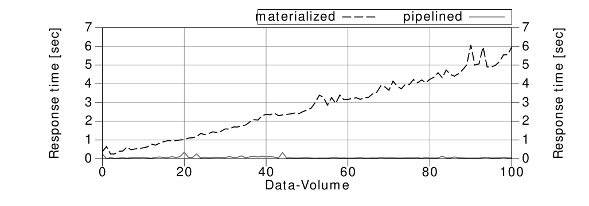
Although the response time of a pipelined top-N query does not depend on the table size, it still grows with the number of selected rows. The response time will therefore double when selecting twice as many rows. This is particularly significant for “paging” queries that load additional results because these queries often start at the first entry again; they will read the rows already shown on the previous page and discard them before finally reaching the results for the second page. Nevertheless, there is a solution for this problem as well as we will see in the next section.
After implementing a pipelined top-N query to retrieve the first page efficiently, you will often also need another query to fetch the next pages. The resulting challenge is that it has to skip the rows from the previous pages. There are two different methods to meet this challenge: firstly the offset method, which numbers the rows from the beginning and uses a filter on this row number to discard the rows before the requested page. The second method, which I call the seek method, searches the last entry of the previous page and fetches only the following rows.
Chapter 7: Partial Results
The following examples show the more widely used offset method. Its main advantage is that it is very easy to handle—especially with databases that have a dedicated keyword for it (offset). This keyword was even taken into the SQL standard as part of the fetch first extension.
MySQL
MySQL and PostgreSQL offer the offset clause for discarding the specified number of rows from the beginning of a top-N query. The limit clause is applied afterwards.
SELECT *
FROM sales
ORDER BY sale_date DESC
LIMIT 10 OFFSET 10;Oracle Database
The Oracle database provides the pseudo column ROWNUM that numbers the rows in the result set automatically. It is, however, not possible to apply a greater than or equal to (>=) filter on this pseudo-column. To make this work, you need to first “materialize” the row numbers by renaming the column with an alias.
SELECT *
FROM ( SELECT tmp.*, rownum rn
FROM ( SELECT *
FROM sales
ORDER BY sale_date DESC
) tmp
WHERE rownum <= 20
)
WHERE rn > 10;Note the use of the alias RN for the lower bound and the ROWNUM pseudo column itself for the upper bound.
PostgreSQL
The fetch first extension defines an offset ... rows clause as well. PostgreSQL, however, only accepts offset without the rows keyword. The previously used limit/offset syntax still works as shown in the MySQL example.
SELECT *
FROM sales
ORDER BY sale_date DESC
OFFSET 10
FETCH NEXT 10 ROWS ONLY;SQL Server
SQL Server does not have an “offset” extension for its proprietary top clause but introduced the fetch first extension with SQL Server 2012 (“Denali”). The offset clause is mandatory although the standard defines it as an optional addendum.
SELECT *
FROM sales
ORDER BY sale_date DESC
OFFSET 10 ROWS
FETCH NEXT 10 ROWS ONLY;Besides the simplicity, another advantage of this method is that you just need the row offset to fetch an arbitrary page. Nevertheless, the database must count all rows from the beginning until it reaches the requested page. Figure 7.2 shows that the scanned index range becomes greater when fetching more pages.

This has two disadvantages: (1) the pages drift when inserting new sales because the numbering is always done from scratch; (2) the response time increases when browsing further back.
The seek method avoids both problems because it uses the values of the previous page as a delimiter. That means it searches for the values that must come behind the last entry from the previous page. This can be expressed with a simple where clause. To put it the other way around: the seek method simply doesn’t select already shown values.
Chapter 7: Partial Results
The next example shows the seek method. For the sake of demonstration, we will start with the assumption that there is only one sale per day. This makes the SALE_DATE a unique key. To select the sales that must come behind a particular date you must use a less than condition (<) because of the descending sort order. For an ascending order, you would have to use a greater than (>) condition. The fetch first clause is just used to limit the result to ten rows.
SELECT *
FROM sales
WHERE sale_date < ?
ORDER BY sale_date DESC
FETCH FIRST 10 ROWS ONLY;Instead of a row number, you use the last value of the previous page to specify the lower bound. This has a huge benefit in terms of performance because the database can use the SALE_DATE < ? condition for index access. That means that the database can truly skip the rows from the previous pages. On top of that, you will also get stable results if new rows are inserted.
Nevertheless, this method does not work if there is more than one sale per day—as shown in Figure 7.2—because using the last date from the first page (“yesterday”) skips all results from yesterday—not just the ones already shown on the first page. The problem is that the order by clause does not establish a deterministic row sequence. That is, however, prerequisite to using a simple range condition for the page breaks.
Without a deterministic order by clause, the database by definition does not deliver a deterministic row sequence. The only reason you usually get a consistent row sequence is that the database usually executes the query in the same way. Nevertheless, the database could in fact shuffle the rows having the same SALE_DATE and still fulfill the order by clause. In recent releases it might indeed happen that you get the result in a different order every time you run the query, not because the database shuffles the result intentionally but because the database might utilize parallel query execution. That means that the same execution plan can result in a different row sequence because the executing threads finish in a non-deterministic order.
Even if the functional specifications only require sorting “by date, latest first”, we as the developers must make sure the order by clause yields a deterministic row sequence. For this purpose, we might need to extend the order by clause with arbitrary columns just to make sure we get a deterministic row sequence. If the index that is used for the pipelined order by has additional columns, it is a good start to add them to the order by clause so we can continue using this index for the pipelined order by. If this still does not yield a deterministic sort order, just add any unique column(s) and extend the index accordingly.
In the following example, we extend the order by clause and the index with the primary key SALE_ID to get a deterministic row sequence. Furthermore, we must apply the “comes after” logic to both columns together to get the desired result:
CREATE INDEX sl_dtid ON sales (sale_date, sale_id);
SELECT *
FROM sales
WHERE (sale_date, sale_id) < (?, ?)
ORDER BY sale_date DESC, sale_id DESC
FETCH FIRST 10 ROWS ONLY;The where clause uses the little-known “row values” syntax (see the box entitled “SQL Row Values”). It combines multiple values into a logical unit that is applicable to the regular comparison operators. As with scalar values, the less-than condition corresponds to “comes after” when sorting in descending order. That means the query considers only the sales that come after the given SALE_DATE, SALE_ID pair.
Even though the row values syntax is part of the SQL standard, only a few databases support it. SQL Server 2012 (“Denali”) does not support row values at all. The Oracle database supports row values in principle, but cannot apply range operators on them (ORA-01796). MySQL evaluates row value expressions correctly but cannot use them as access predicate during an index access. PostgreSQL, however, supports the row value syntax and uses them to access the index if there is a corresponding index available.
Chapter 7: Partial Results
Nevertheless it is possible to use an approximated variant of the seek method with databases that do not properly support the row values—even though the approximation is not as elegant and efficient as row values in PostgreSQL. For this approximation, we must use “regular” comparisons to express the required logic as shown in this Oracle example:
SELECT *
FROM ( SELECT *
FROM sales
WHERE sale_date <= ?
AND NOT (sale_date = ? AND sale_id >= ?)
ORDER BY sale_date DESC, sale_id DESC
)
WHERE rownum <= 10;The where clause consists of two parts. The first part considers the SALE_DATE only and uses a less than or equal to (<=) condition—it selects more rows as needed. This part of the where clause is simple enough so that all databases can use it to access the index. The second part of the where clause removes the excess rows that were already shown on the previous page. The box entitled “Indexing Equivalent Logic” explains why the where clause is expressed this way.
The execution plan shows that the database uses the first part of the where clause as access predicate.
---------------------------------------------------------------
|Id | Operation | Name | Rows | Cost |
---------------------------------------------------------------
| 0 | SELECT STATEMENT | | 10 | 4 |
|*1 | COUNT STOPKEY | | | |
| 2 | VIEW | | 10 | 4 |
| 3 | TABLE ACCESS BY INDEX ROWID | SALES | 50218 | 4 |
|*4 | INDEX RANGE SCAN DESCENDING| SL_DTIT | 2 | 3 |
---------------------------------------------------------------
Predicate Information (identified by operation id):
---------------------------------------------------
1 - filter(ROWNUM<=10)
4 - access("SALE_DATE"<=:SALE_DATE)
filter("SALE_DATE"<>:SALE_DATE
OR "SALE_ID"<TO_NUMBER(:SALE_ID))The access predicates on SALE_DATE enables the database to skip over the days that were fully shown on previous pages. The second part of the where clause is a filter predicate only. That means that the database inspects a
few entries from the previous page again, but drops them immediately.
Figure 7.3 shows the respective access path.

Chapter 7: Partial Results
Figure 7.4 compares the performance characteristics of the offset and the seek methods. The accuracy of measurement is insufficient to see the difference on the left hand side of the chart, however the difference is clearly visible from about page 20 onwards.

Of course the seek method has drawbacks as well, the difficulty in handling it being the most important one. You not only have to phrase the where clause very carefully—you also cannot fetch arbitrary pages. Moreover you need to reverse all comparison and sort operations to change the browsing direction. Precisely these two functions—skipping pages and browsing backwards—are not needed when using an infinite scrolling mechanism for the user interface.
Chapter 7: Partial Results
Window functions offer yet another way to implement pagination in SQL. This is a flexible, and above all, standards-compliant method. However, only SQL Server and the Oracle database can use them for a pipelined top-N query. PostgreSQL does not abort the index scan after fetching enough rows and therefore executes these queries very inefficiently. MySQL does not support window functions at all.
The following example uses the window function ROW_NUMBER for a pagination query:
SELECT *
FROM ( SELECT sales.*
, ROW_NUMBER() OVER (ORDER BY sale_date DESC
, sale_id DESC) rn
FROM sales
) tmp
WHERE rn between 11 and 20
ORDER BY sale_date DESC, sale_id DESC;The ROW_NUMBER function enumerates the rows according to the sort order defined in the over clause. The outer where clause uses this enumeration to limit the result to the second page (rows 11 through 20).
The Oracle database recognizes the abort condition and uses the index on SALE_DATE and SALE_ID to produce a pipelined top-N behavior:
---------------------------------------------------------------
|Id | Operation | Name | Rows | Cost |
---------------------------------------------------------------
| 0 | SELECT STATEMENT | | 1004K| 36877 |
|*1 | VIEW | | 1004K| 36877 |
|*2 | WINDOW NOSORT STOPKEY | | 1004K| 36877 |
| 3 | TABLE ACCESS BY INDEX ROWID | SALES | 1004K| 36877 |
| 4 | INDEX FULL SCAN DESCENDING | SL_DTID | 1004K| 2955 |
---------------------------------------------------------------
Predicate Information (identified by operation id):
---------------------------------------------------
1 - filter("RN">=11 AND "RN"<=20)
2 - filter(ROW_NUMBER() OVER (
ORDER BY "SALE_DATE" DESC, "SALE_ID" DESC )<=20)The WINDOW NOSORT STOPKEY operation indicates that there is no sort operation (NOSORT) and that the database aborts the execution when reaching the upper threshold (STOPKEY). Considering that the aborted operations are executed in a pipelined manner, it means that this query is as efficient as the offset method explained in the previous section.
The strength of window functions is not pagination, however, but analytical calculations. If you have never used window functions before, you should definitely spend a few hours studying the respective documentation.
158
Chapter 8
So far we have only discussed query performance, but SQL is not only about queries. It supports data manipulation as well. The respective commands—insert, delete, and update—form the so-called “data manipulation language” (DML)—a section of the SQL standard. The performance of these commands is for the most part negatively influenced by indexes.
An index is pure redundancy. It contains only data that is also stored in the table. During write operations, the database must keep those redundancies consistent. Specifically, it means that insert, delete and update not only affect the table but also the indexes that hold a copy of the affected data.
The number of indexes on a table is the most dominant factor for insert performance. The more indexes a table has, the slower the execution becomes. The insert statement is the only operation that cannot directly benefit from indexing because it has no where clause.
Adding a new row to a table involves several steps. First, the database must find a place to store the row. For a regular heap table—which has no particular row order—the database can take any table block that has enough free space. This is a very simple and quick process, mostly executed in main memory. All the database has to do afterwards is to add the new entry to the respective data block.
Chapter 8: Modifying Data
If there are indexes on the table, the database must make sure the new entry is also found via these indexes. For this reason it has to add the new entry to each and every index on that table. The number of indexes is therefore a multiplier for the cost of an insert statement.
Moreover, adding an entry to an index is much more expensive than inserting one into a heap structure because the database has to keep the index order and tree balance. That means the new entry cannot be written to any block—it belongs to a specific leaf node. Although the database uses the index tree itself to find the correct leaf node, it still has to read a few index blocks for the tree traversal.
Once the correct leaf node has been identified, the database confirms that there is enough free space left in this node. If not, the database splits the leaf node and distributes the entries between the old and a new node. This process also affects the reference in the corresponding branch node as that must be duplicated as well. Needless to say, the branch node can run out of space as well so it might have to be split too. In the worst case, the database has to split all nodes up to the root node. This is the only case in which the tree gains an additional layer and grows in depth.
The index maintenance is, after all, the most expensive part of the insert operation. That is also visible in Figure 8.1, “Insert Performance by Number of Indexes”: the execution time is hardly visible if the table does not have any indexes. Nevertheless, adding a single index is enough to increase the execute time by a factor of a hundred. Each additional index slows the execution down further.
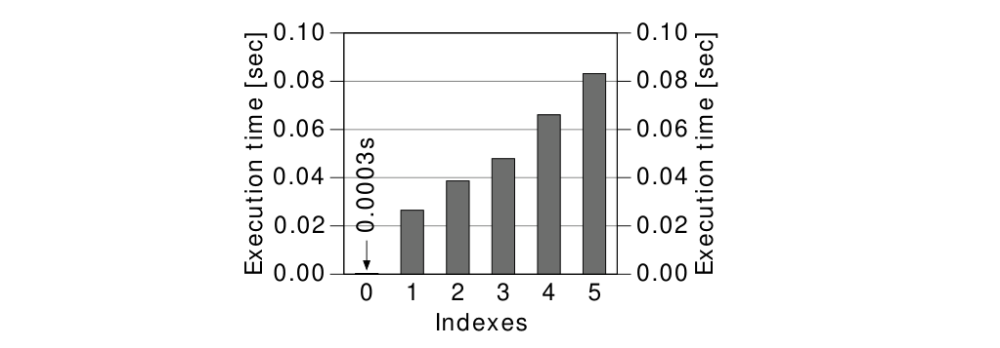
To optimize insert performance, it is very important to keep the number of indexes small.
Considering insert statements only, it would be best to avoid indexes entirely—this yields by far the best insert performance. However tables without indexes are rather unrealistic in real world applications. You usually want to retrieve the stored data again so that you need indexes to improve query speed. Even write-only log tables often have a primary key and a respective index.
Nevertheless, the performance without indexes is so good that it can make sense to temporarily drop all indexes while loading large amounts of data—provided the indexes are not needed by any other SQL statements in the meantime. This can unleash a dramatic speed-up which is visible in the chart and is, in fact, a common practice in data warehouses.
Chapter 8: Modifying Data
Unlike the insert statement, the delete statement has a where clause that can use all the methods described in Chapter 2, “The Where Clause”, to benefit directly from indexes. In fact, the delete statement works like a select that is followed by an extra step to delete the identified rows.
The actual deletion of a row is a similar process to inserting a new one—especially the removal of the references from the indexes and the activities to keep the index trees in balance. The performance chart shown in Figure 8.2 is therefore very similar to the one shown for insert.
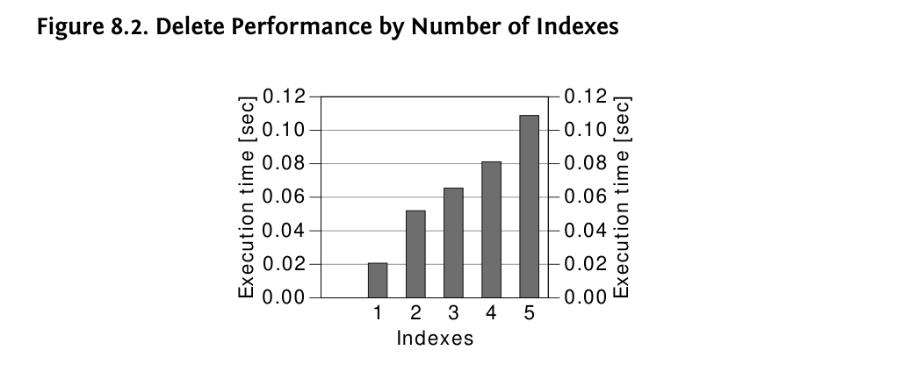
In theory, we would expect the best delete performance for a table without any indexes—as it is for insert. If there is no index, however, the database must read the full table to find the rows to be deleted. That means deleting the row would be fast but finding would be very slow. This case is therefore not shown in Figure 8.2.
Nevertheless it can make sense to execute a delete statement without an index just as it can make sense to execute a select statement without an index if it returns a large part of the table.
A delete statement without where clause is an obvious example in which the database cannot use an index, although this is a special case that has its own SQL command: truncate table. This command has the same effect as delete without where except that it deletes all rows in one shot. It is very fast but has two important side effects: (1) it does an implicit commit (exception: PostgreSQL); (2) it does not execute any triggers.
An update statement must relocate the changed index entries to maintain the index order. For that, the database must remove the old entry and add the new one at the new location. The response time is basically the same as for the respective delete and insert statements together.
The update performance, just like insert and delete, also depends on the number of indexes on the table. The only difference is that update statements do not necessarily affect all columns because they often modify only a few selected columns. Consequently, an update statement does not necessarily affect all indexes on the table but only those that contain updated columns.
Chapter 8: Modifying Data
Figure 8.3 shows the response time for two update statements: one that sets all columns and affects all indexes and then a second one that updates a single column so it affects only one index.

The update on all columns shows the same pattern we have already observed in the previous sections: the response time grows with each additional index. The response time of the update statement that affects only one index does not increase so much because it leaves most indexes unchanged.
To optimize update performance, you must take care to only update those columns that were changed. This is obvious if you write the update statement manually. ORM tools, however, might generate update statements that set all columns every time. Hibernate, for example, does this when disabling the dynamic-update mode. Since version 4.0, this mode is enabled by default.
When using ORM tools, it is a good practice to occasionally enable query logging in a development environment to verify the generated SQL statements. The tip entitled “Enabling SQL Logging” on page 95 has a short overview of how to enable SQL logging in some widely used ORM tools.
Appendix A
Before the database can execute an SQL statement, the optimizer has to create an execution plan for it. The database then executes this plan in a step-by-step manner. In this respect, the optimizer is very similar to a compiler because it translates the source code (SQL statement) into an executable program (execution plan).
The execution plan is the first place to look when searching for the cause of slow statements. The following sections explain how to retrieve and read an execution plan to optimize performance in various databases.
Most development environments (IDEs) can very easily show an execution plan but use very different ways to format them on the screen. The method described in this section delivers the execution plan as shown throughout the book and only requires the Oracle database in release 9iR2 or newer.
Viewing an execution plan in the Oracle database involves two steps:
1. explain plan for — saves the execution plan in the PLAN_TABLE.
2. Format and display the execution plan.
To create an execution plan, you just have to prefix the respective SQL statement with explain plan for:
EXPLAIN PLAN FOR select * from dual;You can execute the explain plan for command in any development environment or SQL*Plus. It will, however, not show the plan but save it into a table named PLAN_TABLE. Starting with release 10g, this table is automatically available as a global temporary table. With previous releases, you have to create it in each schema as needed. Ask your database administrator to create it for you or to provide the create table statement from the Oracle database installation:
$ORACLE_HOME/rdbms/admin/utlxplan.sqlYou can execute this statement in any schema you like to create the PLAN_TABLE in this schema.
The package DBMS_XPLAN was introduced with release 9iR2 and can format and display execution plans from the PLAN_TABLE. The following example shows how to display the last execution plan that was explained in the current database session:
select * from table(dbms_xplan.display);Once again, if that statement doesn’t work out of the box, you should ask your DBA for assistance.
The query will display the execution plan as shown in the book:
--------------------------------------------------------------
| Id | Operation | Name | Rows | Bytes | Cost (%CPU)|
--------------------------------------------------------------
| 0 | SELECT STATEMENT | | 1 | 2 | 2 (0)|
| 1 | TABLE ACCESS FULL| DUAL | 1 | 2 | 2 (0)|
--------------------------------------------------------------Some of the columns shown in this execution plan were removed in the book for a better fit on the page.
INDEX UNIQUE SCAN
The INDEX UNIQUE SCAN performs the B-tree traversal only. The database uses this operation if a unique constraint ensures that the search criteria will match no more than one entry. See also Chapter 1, “Anatomy of an Index”.
INDEX RANGE SCAN
The INDEX RANGE SCAN performs the B-tree traversal and follows the leaf node chain to find all matching entries. See also Chapter 1, “Anatomy of an Index”.
The so-called index filter predicates often cause performance problems for an INDEX RANGE SCAN. The next section explains how to identify them.
INDEX FULL SCAN
Reads the entire index—all rows—in index order. Depending on various system statistics, the database might perform this operation if it needs all rows in index order—e.g., because of a corresponding order by clause. Instead, the optimizer might also use an INDEX FAST FULL SCAN and perform an additional sort operation. See Chapter 6, “Sorting and Grouping”.
INDEX FAST FULL SCAN
Reads the entire index—all rows—as stored on the disk. This operation is typically performed instead of a full table scan if all required columns are available in the index. Similar to TABLE ACCESS FULL, the INDEX FAST FULL SCAN can benefit from multi-block read operations. See Chapter 5, “Clustering Data”.
TABLE ACCESS BY INDEX ROWID
Retrieves a row from the table using the ROWID retrieved from the preceding index lookup. See also Chapter 1, “Anatomy of an Index”.
TABLE ACCESS FULL
This is also known as full table scan. Reads the entire table—all rows and columns—as stored on the disk. Although multi-block read operations improve the speed of a full table scan considerably, it is still one of the most expensive operations. Besides high IO rates, a full table scan must inspect all table rows so it can also consume a considerable amount of CPU time. See also “Full Table Scan” on page 13.
Generally join operations process only two tables at a time. In case a query has more joins, they are executed sequentially: first two tables, then the intermediate result with the next table. In the context of joins, the term “table” could therefore also mean “intermediate result”.
NESTED LOOPS JOIN
Joins two tables by fetching the result from one table and querying the other table for each row from the first. See also “Nested Loops” on page 92.
HASH JOIN The hash join loads the candidate records from one side of the join into a hash table that is then probed for each row from the other side of the join. See also “Hash Join” on page 101.
MERGE JOIN The merge join combines two sorted lists like a zipper. Both sides of the join must be presorted. See also “Sort Merge” on page 109.
SORT ORDER BY Sorts the result according to the order by clause. This operation needs large amounts of memory to materialize the intermediate result (not pipelined). See also “Indexing Order By” on page 130.
SORT ORDER BY STOPKEY Sorts a subset of the result according to the order by clause. Used for top-N queries if pipelined execution is not possible. See also “Querying Top-N Rows” on page 143.
SORT GROUP BY Sorts the result set on the group by columns and aggregates the sorted result in a second step. This operation needs large amounts of memory to materialize the intermediate result set (not pipelined). See also “Indexing Group By” on page 139.
SORT GROUP BY NOSORT Aggregates a presorted set according the group by clause. This operation does not buffer the intermediate result: it is executed in a pipelined manner. See also “Indexing Group By” on page 139.
HASH GROUP BY Groups the result using a hash table. This operation needs large amounts of memory to materialize the intermediate result set (not pipelined). The output is not ordered in any meaningful way. See also “Indexing Group By” on page 139.
The efficiency of top-N queries depends on the execution mode of the underlying operations. They are very inefficient when aborting non-pipelined operations such as SORT ORDER BY.
COUNT STOPKEY
Aborts the underlying operations when the desired number of rows was fetched. See also the section called “Querying Top-N Rows”.
WINDOW NOSORT STOPKEY
Uses a window function (over clause) to abort the execution when the desired number of rows was fetched. See also “Using Window Functions for Pagination” on page 156.
The Oracle database uses three different methods to apply where clauses (predicates):
Access predicate (“access”)
The access predicates express the start and stop conditions of the leaf node traversal.
Index filter predicate (“filter” for index operations)
Index filter predicates are applied during the leaf node traversal only. They do not contribute to the start and stop conditions and do not narrow the scanned range.
Table level filter predicate (“filter” for table operations)
Predicates on columns that are not part of the index are evaluated on table level. For that to happen, the database must load the row from the table first.
Execution plans that were created using the DBMS_XPLAN utility (see “Getting an Execution Plan” on page 166), show the index usage in the “Predicate Information” section below the tabular execution plan:
------------------------------------------------------
| Id | Operation | Name | Rows | Cost |
------------------------------------------------------
| 0 | SELECT STATEMENT | | 1 | 1445 |
| 1 | SORT AGGREGATE | | 1 | |
|* 2 | INDEX RANGE SCAN| SCALE_SLOW | 4485 | 1445 |
------------------------------------------------------
Predicate Information (identified by operation id):
2 - access("SECTION"=:A AND "ID2"=:B)
filter("ID2"=:B)The numbering of the predicate information refers to the “Id” column of the execution plan. There, the database also shows an asterisk to mark operations that have predicate information.
This example, taken from the chapter “Performance and Scalability”, shows an INDEX RANGE SCAN that has access and filter predicates. The Oracle database has the peculiarity of also showing some filter predicate as access predicates—e.g., ID2=:B in the execution plan above.
This means that the INDEX RANGE SCAN scans the entire range for the condition "SECTION"=:A and applies the filter "ID2"=:B on each row.
Filter predicates on table level are shown for the respective table access such as TABLE ACCESS BY INDEX ROWID or TABLE ACCESS FULL.
The methods described in this section apply to PostgreSQL 8.0 and later.
A PostgreSQL execution plan is fetched by putting the explain command in front of an SQL statement. There is, however, one important limitation: SQL statements with bind parameters (e.g., $1, $2, etc.) cannot be explained this way—they need to be prepared first:
PREPARE stmt(int) AS SELECT $1;Note that PostgreSQL uses “$n” for bind parameters. Your database abstraction layer might hide this so you can use question marks as defined by the SQL standard.
The execution of the prepared statement can be explained:
EXPLAIN EXECUTE stmt(1);Up till PostgreSQL 9.1, the execution plan was already created with the prepare call and could therefore not consider the actual values provided with execute. Since PostgreSQL 9.2 the creation of the execution plan is postponed until execution and thus can consider the actual values for the bind parameters.
The explain plan output is as follows:
QUERY PLAN
------------------------------------------
Result (cost=0.00..0.01 rows=1 width=0)The output has similar information as the Oracle execution plans shown throughout the book: the operation name (“Result”), the related cost, the row count estimate, and the expected row width.
Note that PostgreSQL shows two cost values. The first is the cost for the startup, the second is the total cost for the execution if all rows are retrieved. The Oracle database’s execution plan only shows the second value.
The PostgreSQL explain command has two options. The VERBOSE option provides additional information like fully qualified table names—VERBOSE is usually not very valuable.
The second explain option is ANALYZE. Although it is widely used, I recommend not getting into the habit of using it automatically because it actually executes the statement. That is mostly harmless for select statements but it modifies your data when using it for insert, update or delete. To avoid the risk of accidentally modifying your data, you can enclose it in a transaction and perform a rollback afterwards.
The ANALYZE option executes the statement and records actual timing and row counts. That is valuable in finding the cause of incorrect cardinality estimates (row count estimates):
BEGIN;
EXPLAIN ANALYZE EXECUTE stmt(1);
QUERY PLAN
--------------------------------------------------
Result (cost=0.00..0.01 rows=1 width=0)
(actual time=0.002..0.002 rows=1 loops=1)
Total runtime: 0.020 ms
ROLLBACK;Note that the plan is formatted for a better fit on the page. PostgreSQL prints the “actual” values on the same line as the estimated values.
The row count is the only value that is shown in both parts—in the estimated and in the actual figures. That allows you to quickly find erroneous cardinality estimates.
Last but not least, prepared statements must be closed again:
DEALLOCATE stmt;Seq Scan
The Seq Scan operation scans the entire relation (table) as stored on disk (like TABLE ACCESS FULL).
Index Scan
The Index Scan performs a B-tree traversal, walks through the leaf nodes to find all matching entries, and fetches the corresponding table data. It is like an INDEX RANGE SCAN followed by a TABLE ACCESS BY INDEX ROWID operation. See also Chapter 1, “Anatomy of an Index”.
The so-called index filter predicates often cause performance problems for an Index Scan. The next section explains how to identify them.
Index Only Scan (since PostgreSQL 9.2)
The Index Only Scan performs a B-tree traversal and walks through the leaf nodes to find all matching entries. There is no table access needed because the index has all columns to satisfy the query (exception: MVCC visibility information). See also “Index-Only Scan” on page 116.
Bitmap Index Scan / Bitmap Heap Scan / Recheck Cond
Tom Lane’s post to the PostgreSQL performance mailing list is very clear and concise.
A plain Index Scan fetches one tuple-pointer at a time from the index, and immediately visits that tuple in the table. A bitmap scan fetches all the tuple-pointers from the index in one go, sorts them using an in-memory “bitmap” data structure, and then visits the table tuples in physical tuple-location order.
—Tom Lane1
Generally join operations process only two tables at a time. In case a query has more joins, they are executed sequentially: first two tables, then the intermediate result with the next table. In the context of joins, the term “table” could therefore also mean “intermediate result”.
Nested Loops
Joins two tables by fetching the result from one table and querying the other table for each row from the first. See also “Nested Loops” on page 92.
Hash Join / Hash
The hash join loads the candidate records from one side of the join into a hash table (marked with Hash in the plan) which is then probed for each record from the other side of the join. See also “Hash Join” on page 101.
Merge Join
The (sort) merge join combines two sorted lists like a zipper. Both sides of the join must be presorted. See also “Sort Merge” on page 109.
1 http://archives.postgresql.org/pgsql-performance/2005-12/msg00623.php
Sort / Sort Key Sorts the set on the columns mentioned in Sort Key. The Sort operation needs large amounts of memory to materialize the intermediate result (not pipelined). See also “Indexing Order By” on page 130.
GroupAggregate Aggregates a presorted set according to the group by clause. This operation does not buffer large amounts of data (pipelined). See also “Indexing Group By” on page 139.
HashAggregate Uses a temporary hash table to group records. The HashAggregate operation does not require a presorted data set, instead it uses large amounts of memory to materialize the intermediate result (not pipelined). The output is not ordered in any meaningful way. See also “Indexing Group By” on page 139.
Limit Aborts the underlying operations when the desired number of rows has been fetched. See also “Querying Top-N Rows” on page 143.
The efficiency of the top-N query depends on the execution mode of the underlying operations. It is very inefficient when aborting non-pipelined operations such as Sort.
WindowAgg Indicates the use of window functions. See also “Using Window Functions for Pagination” on page 156.
The PostgreSQL database uses three different methods to apply where clauses (predicates):
Access Predicate (“Index Cond”)
The access predicates express the start and stop conditions of the leaf node traversal.
Index Filter Predicate (“Index Cond”)
Index filter predicates are applied during the leaf node traversal only. They do not contribute to the start and stop conditions and do not narrow the scanned range.
Table level filter predicate (“Filter”)
Predicates on columns that are not part of the index are evaluated on the table level. For that to happen, the database must load the row from the heap table first.
PostgreSQL execution plans do not show index access and filter predicates separately—both show up as “Index Cond”. That means the execution plan must be compared to the index definition to differentiate access predicates from index filter predicates.
The predicates shown as “Filter” are always table level filter predicates—even when shown for an Index Scan operation.
Consider the following example, which originally appeared in the “Performance and Scalability” chapter:
CREATE TABLE scale_data (
section NUMERIC NOT NULL,
id1 NUMERIC NOT NULL,
id2 NUMERIC NOT NULL
);
CREATE INDEX scale_data_key ON scale_data(section, id1);The following select filters on the ID2 column, which is not included in the index:
PREPARE stmt(int) AS SELECT count(*)
FROM scale_data
WHERE section = 1
AND id2 = $1;
EXPLAIN EXECUTE stmt(1);
QUERY PLAN
-----------------------------------------------------
Aggregate (cost=529346.31..529346.32 rows=1 width=0)
Output: count(*)
-> Index Scan using scale_data_key on scale_data
(cost=0.00..529338.83 rows=2989 width=0)
Index Cond: (scale_data.section = 1::numeric)
Filter: (scale_data.id2 = ($1)::numeric)The ID2 predicate shows up as “Filter” below the Index Scan operation. This is because PostgreSQL performs the table access as part of the Index Scan operation. In other words, the TABLE ACCESS BY INDEX ROWID operation of the Oracle database is hidden within PostgreSQL’s Index Scan operation. It is therefore possible that a Index Scan filters on columns that are not included in the index.
When we add the index from the “Performance and Scalability” chapter, we can see that all columns show up as “Index Cond”—regardless of whether they are access or filter predicates.
CREATE INDEX scale_slow
ON scale_data (section, id1, id2);The execution plan with the new index does not show any filter conditions:
QUERY PLAN
------------------------------------------------------
Aggregate (cost=14215.98..14215.99 rows=1 width=0)
Output: count(*)
-> Index Scan using scale_slow on scale_data
(cost=0.00..14208.51 rows=2989 width=0)
Index Cond: (section = 1::numeric AND id2 = ($1)::numeric)Please note that the condition on ID2 cannot narrow the leaf node traversal because the index has the ID1 column before ID2. That means, the Index Scan will scan the entire range for the condition SECTION=1::numeric and apply the filter ID2=($1)::numeric on each row that fulfills the clause on SECTION.
The method described in this section applies to SQL Server Management Studio 2005 and later.
With SQL Server, there are several ways to fetch an execution plan. The two most important methods are:
Graphically
The graphical representation of SQL Server execution plans is easily accessible in the Management Studio but is hard to share because the predicate information is only visible when the mouse is moved over the particular operation (“hover”).
Tabular
The tabular execution plan is hard to read but easy to copy because it shows all relevant information at once.
The graphical explain plan is generated with one of the two buttons highlighted below.
The left button explains the highlighted statement directly. The right will capture the plan the next time a SQL statement is executed.
In both cases, the graphical representation of the execution plan appears in the “Execution plan” tab of the “Results” pane.
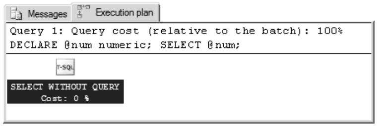
The graphical representation is easy to read with a little bit of practice. Nonetheless, it only shows the most fundamental information: the operations and the table or index they act upon.
The Management Studio shows more information when moving the mouse over an operation (mouseover/hover). This makes it hard to share an execution plan with all its details.
The tabular representation of an SQL Server execution plan is fetched by profiling the execution of a statement. The following command enables it:
SET STATISTICS PROFILE ONOnce enabled, each executed statement produces an extra result set. select statements, for example, produce two result sets—the result of the statement first then the execution plan.
The tabular execution plan is hardly usable in SQL Server Management Studio because the StmtText is just too wide to fit on a screen.
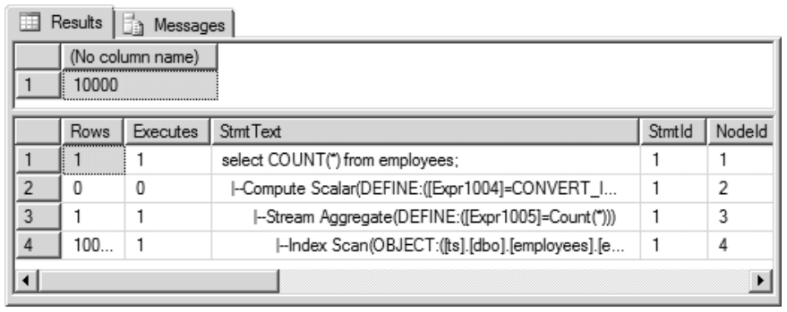
The advantage of this representation is that it can be copied without loosing relevant information. This is very handy if you want to post an SQL Server execution plan on a forum or similar platform. In this case, it is often enough to copy the StmtText column and reformat it a little bit:
select COUNT(*) from employees;
|--Compute Scalar(DEFINE:([Expr1004]=CONVERT_IMPLICIT(...))
|--Stream Aggregate(DEFINE:([Expr1005]=Count(*)))
|--Index Scan(OBJECT:([employees].[employees_pk]))Finally, you can disable the profiling again:
SET STATISTICS PROFILE OFFSQL Server has a simple terminology: “Scan” operations read the entire index or table while “Seek” operations use the B-tree or a physical address (RID, like Oracle ROWID) to access a specific part of the index or table.
Index Seek
The Index Seek performs a B-tree traversal and walks through the leaf nodes to find all matching entries. See also “Anatomy of an Index” on page 1.
Index Scan
Reads the entire index—all the rows—in the index order. Depending on various system statistics, the database might perform this operation if it needs all rows in index order—e.g., because of a corresponding order by clause.
Key Lookup (Clustered)
Retrieves a single row from a clustered index. This is similar to Oracle INDEX UNIQUE SCAN for an Index-Organized-Table (IOT). See also “Clustering Data” on page 111.
RID Lookup (Heap)
Retrieves a single row from a table—like Oracle TABLE ACCESS BY INDEX ROWID. See also “Anatomy of an Index” on page 1.
Table Scan
This is also known as full table scan. Reads the entire table—all rows and columns—as stored on the disk. Although multi-block read operations can improve the speed of a Table Scan considerably, it is still one of the most expensive operations. Besides high IO rates, a Table Scan must also inspect all table rows so it can also consume a considerable amount of CPU time. See also “Full Table Scan” on page 13.
Generally join operations process only two tables at a time. In case a query has more joins, they are executed sequentially: first two tables, then the intermediate result with the next table. In the context of joins, the term “table” could therefore also mean “intermediate result”.
Nested Loops
Joins two tables by fetching the result from one table and querying the other table for each row from the first. SQL Server also uses the nested loops operation to retrieve table data after an index access. See also “Nested Loops” on page 92.
Hash Match
The hash match join loads the candidate records from one side of the join into a hash table which is then probed for each row from the other side of the join. See also “Hash Join” on page 101.
Merge Join
The merge join combines two sorted lists like a zipper. Both sides of the join must be presorted. See also “Sort Merge” on page 109.
Sort
Sorts the result according to the order by clause. This operation needs large amounts of memory to materialize the intermediate result (not pipelined). See also “Indexing Order By” on page 130.
Sort (Top N Sort)
Sorts a subset of the result according to the order by clause. Used for top-N queries if pipelined execution is not possible. See also “Querying Top-N Rows” on page 143.
Stream Aggregate
Aggregates a presorted set according the group by clause. This operation does not buffer the intermediate result—it is executed in a pipelined manner. See also “Indexing Group By” on page 139.
Hash Match (Aggregate)
Groups the result using a hash table. This operation needs large amounts of memory to materialize the intermediate result (not pipelined). The output is not ordered in any meaningful way. See also “Indexing Group By” on page 139.
Top
Aborts the underlying operations when the desired number of rows has been fetched. See also “Querying Top-N Rows” on page 143.
The efficiency of the top-N query depends on the execution mode of the underlying operations. It is very inefficient when aborting non-pipelined operations such as Sort.
The SQL Server database uses three different methods for applying where clauses (predicates):
Access Predicate (“Seek Predicates”)
The access predicates express the start and stop conditions of the leaf node traversal.
Index Filter Predicate (“Predicates” or “where” for index operations)
Index filter predicates are applied during the leaf node traversal only. They do not contribute to the start and stop conditions and do not narrow the scanned range.
Table level filter predicate (“where” for table operations)
Predicates on columns which are not part of the index are evaluated on the table level. For that to happen, the database must load the row from the heap table first.
The following section explains how to identify filter predicates in SQL Server execution plans. It is based on the sample used to demonstrate the impact of index filter predicates in Chapter 3.
CREATE TABLE scale_data (
section NUMERIC NOT NULL,
id1 NUMERIC NOT NULL,
id2 NUMERIC NOT NULL
);
CREATE INDEX scale_slow ON scale_data(section, id1, id2);The sample statement selects by SECTION and ID2:
SELECT count(*)
FROM scale_data
WHERE section = @sec
AND id2 = @id2The graphical execution plan hides the predicate information in a tooltip that is only shown when moving the mouse over the Index Seek operation.
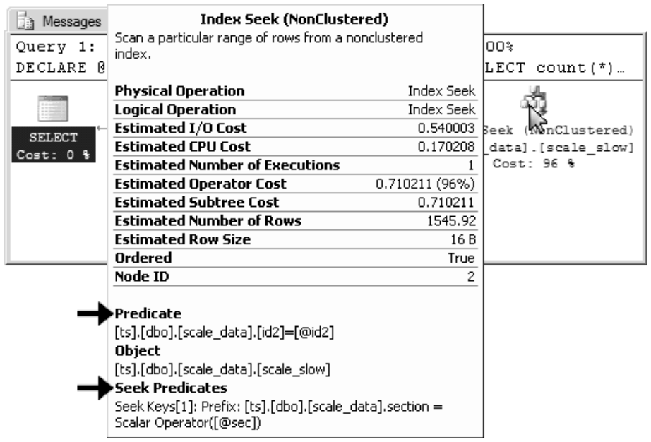
The SQL Server’s Seek Predicates correspond to Oracle’s access predicates—they narrow the leaf node traversal. Filter predicates are just labeled Predicates in SQL Server’s graphical execution plan.
Tabular execution plans have the predicate information in the same column in which the operations appear. It is therefore very easy to copy and past all the relevant information in one go.
DECLARE @sec numeric;
DECLARE @id2 numeric;
SET STATISTICS PROFILE ON
SELECT count(*)
FROM scale_data
WHERE section = @sec
AND id2 = @id2
SET STATISTICS PROFILE OFFThe execution plan is shown as a second result set in the results pane. The following is the StmtText column—with a little reformatting for better reading:
|--Compute Scalar(DEFINE:([Expr1004]=CONVERT_IMPLICIT(...))
|--Stream Aggregate(DEFINE:([Expr1008]=Count(*)))
|--Index Seek(OBJECT:([scale_data].[scale_slow]),
SEEK: ([scale_data].[section]=[@sec])
ORDERED FORWARD
WHERE:([scale_data].[id2]=[@id2]))The SEEK label introduces access predicates, the WHERE label marks filter predicates.
The method described in this section applies to all versions of MySQL.
Put explain in front of an SQL statement to retrieve the execution plan.
EXPLAIN SELECT 1;The plan is shown in tabular form (some less important columns removed):
+-------+------+---------------+------+-------+------------+
| table | type | possible_keys | key | rows | Extra
+-------+------+---------------+------+-------+------------+
| NULL | NULL | NULL | NULL | NULL | No tables...
+-------+------+---------------+------+-------+------------+The most important information is in the TYPE column. Although the MySQL documentation refers to it as “join type”, I prefer to describe it as “access type” because it actually specifies how the data is accessed. The meaning of the type value is described in the next section.
MySQL’s explain plan tends to give a false sense of safety because it says so much about indexes being used. Although technically correct, it does not mean that it is using the index efficiently. The most important information is in the TYPE column of the MySQL’s explain output—but even there, the keyword INDEX doesn’t indicate proper indexing.
eq_ref
Performs a B-tree traversal only. The database uses this operation if a primary key or unique constraint ensures that the search criteria will match no more than one entry. See also “Anatomy of an Index” on page 1.
ref, range
Performs a B-tree traversal and walks through the leaf nodes to find all matching entries (similar to INDEX RANGE SCAN). See also “Anatomy of an Index” on page 1.
index
Reads the entire index—all rows—in the index order (similar to INDEX FULL SCAN).
ALL
Reads the entire table—all rows and columns—as stored on the disk. Besides high IO rates, a table scan must also inspect all rows from the table so that it can also put a considerable load on the CPU. See also “Full Table Scan” on page 13.
Using Index (in the “Extra” column)
When the “Extra” column shows “Using Index”, it means that the table is not accessed because the index has all the required data. Think of “using index ONLY”. See also “Clustering Data” on page 111.
PRIMARY (in the “key” or “possible_keys” column)
PRIMARY is the name of the automatically created index for the primary key.
using filesort (in the “Extra” column)
“using filesort” in the Extra column indicates an explicit sort operation— no matter where the sort takes place (main memory or on disk). “Using filesort” needs large amounts of memory to materialize the intermediate result (not pipelined). See also “Indexing Order By” on page 130.
implicit: no “using filesort” in the “Extra” column
A MySQL execution plan does not show a top-N query explicitly. If you are using the limit syntax and don’t see “using filesort” in the extra column, it is executed in a pipelined manner. See also “Querying Top-N Rows” on page 143.
The MySQL database uses three different ways to evaluate where clauses (predicates):
Access predicate (via the “key_len” column)
The access predicates express the start and stop conditions of the leaf node traversal.
Index filter predicate (“Using index condition”, since MySQL 5.6)
Index filter predicates are applied during the leaf node traversal only. They do not contribute to the start and stop conditions and do not narrow the scanned range.
Table level filter predicate (“Using where” in the “Extra” column)
Predicates on columns which are not part of the index are evaluated on the table level. For that to happen, the database must load the row from the table first.
MySQL execution plans do not show which predicate types are used for each condition— they just list the predicate types in use.
In the following example, the entire where clause is used as access predicate:
CREATE TABLE demo (
id1 NUMERIC
, id2 NUMERIC
, id3 NUMERIC
, val NUMERIC);INSERT INTO demo VALUES (1,1,1,1);
INSERT INTO demo VALUES (2,2,2,2);CREATE INDEX demo_idx
ON demo
(id1, id2, id3);EXPLAIN
SELECT *
FROM demo
WHERE id1=1
AND id2=1;
+------+----------+---------+------+-------+
| type | key | key_len | rows | Extra |
+------+----------+---------+------+-------+
| ref | demo_idx | 12 | 1 | |
+------+----------+---------+------+-------+There is no “Using where” or “Using index condition” shown in the “Extra” column. The index is, however, used (type=ref, key=demo_idx) so you can assume that the entire where clause qualifies as access predicate.
You can use the key_len value to verify this. It shows that the query uses the first 12 bytes of the index definition. To map this to column names, you “just” need to know how much storage space each column needs (see “Data Type Storage Requirements” in the MySQL documentation). In absence of a NOT NULL constraint, MySQL needs an extra byte for each column. After all, each NUMERIC column needs 6 bytes in the example. Therefore, the key length of 12 confirms that the first two index columns are used as access predicates.
When filtering with the ID3 column (instead of the ID2) MySQL 5.6 and later use an index filter predicate (“Using index condition”):
EXPLAIN
SELECT *
FROM demo
WHERE id1=1
AND id3=1;
+------+----------+---------+------+-----------------------+
| type | key | key_len | rows | Extra |
+------+----------+---------+------+-----------------------+
| ref | demo_idx | 6 | 1 | Using index condition |
+------+----------+---------+------+-----------------------+In this case, the key length of six means only one column is used as access predicate.
Previous versions of MySQL used a table level filter predicate for this query—identified by “Using where” in the “Extra” column:
+------+----------+---------+------+-------------+
| type | key | key_len | rows | Extra |
+------+----------+---------+------+-------------+
| ref | demo_idx | 6 | 1 | Using where |
+------+----------+---------+------+-------------+2PC, 89
?, :var, @var (see bind parameter)
Access Predicate, 44
access predicates
recognizing in execution plans
Oracle, 170
PostgreSQL, 177
SQL Server, 185
adaptive cursor sharing (Oracle), 75
auto parameterization (SQL Server), 39
B-tree (balanced search tree), 4
between, 44
bind parameter, 32
contraindications
histograms, 34
LIKE filters, 47
partitions, 35
for execution plan caching, 32
type safety, 66
bind peeking (Oracle), 75
bitmap index, 50
Bitmap Index Scan (PostgreSQL), 175
Brewer’s CAP theorem, 89
CAP theorem, 89
cardinality estimate, 27
CBO (see optimizer, cost based)
clustered index, 122
transform to SQL Server heap table,
127
clustering factor, 21, 114
automatically optimized, 133
clustering key, 123
collation, 24
commit
deferrable constraints, 11
implicit for truncate table, 163
two phase, 89
compiling, 18
computed columns (SQL Server), 27
constraint
deferrable, 11
NOT NULL, 56
cost value, 18
count(*)
often as index-only scan, 120
Oracle requires NOT NULL constraint, 57
COUNT STOPKEY, 145
cursor sharing (Oracle), 39
data transport object (DTO), 105
DATE
efficiently working with, 62
DBMS_XPLAN, 167
DEALLOCATE, 174
DEFERRABLE constraint, 11
DETERMINISTIC (Oracle), 30
distinct, 97
distinct()
in JPA and Hibernate, 97
DML, 159
doubly linked list, 2
dynamic-update (Hibernate), 164
eager fetching, 96
eventual consistency, 89
execution plan, 10, 165
cache, 32, 75
creating
MySQL, 188
Oracle, 166
PostgreSQL, 172
SQL Server, 180
operations
MySQL, 188
Oracle, 167
PostgreSQL, 174
SQL Server, 182
explain
MySQL, 188
Oracle, 166
PostgreSQL, 172
FBI (see index, function-based)
FETCH ALL PROPERTIES (HQL), 105
fetch first, 144
filter predicates
effects (chart), 81
recognizing in execution plans
Oracle, 170
PostgreSQL, 177
SQL Server, 185
full table scan, 13
All (MySQL), 189
Seq Scan (PostgreSQL), 174
TABLE ACCESS FULL (Oracle), 168
Table Scan (SQL Server), 183
functions, 24
deterministic, 29
in partial indexes, 52
window, 156
G
group by, 139
with PostrgesSQL and the Oracle database and an ASC/DESC index not pipelined, 140
H
hash join, 101
HASH GROUP BY, 169
HASH JOIN (Oracle), 169
HASH Join (PostgreSQL), 175
Hash Match, 183
Hash Match (Aggregate), 184
heap table, 3, 122
creating in SQL Server, 127
Hibernate
eager fetching, 96
ILIKE uses LOWER, 98
updates all columns, 164
hint, 19
I
IMMUTABLE (PostgreSQL), 30
index
covering, 117
fulltext, 48
function-based, 24
case insensitive, 24
to index mathematical calculations, 77
join, 50
limits
MySQL, Oracle, PostgreSQL, 121
SQL Server, 122
merge, 49
multi-column, 12
wrong order (effects), 81
partial, 51
prefix (MySQL), 121
secondary, 123
index in MySQL execution plans, 189
index-only scan, 116
index-organized table, 122
database support, 127
Index Cond (PostgreSQL), 177
INDEX FAST FULL SCAN, 168
INDEX FULL SCAN, 168
Index Only Scan (PostgreSQL), 174
INDEX RANGE SCAN, 167
Index Scan (PostgreSQL), 174
Index Seek, 182
INDEX UNIQUE SCAN, 167
when accessing an IOT, 124
INTERNAL_FUNCTION, 67
IOT (index-organized table), 122
J
join, 91
full outer, 109
K
Key Lookup (Clustered), 182
L
lazy fetching
for scalar attributes (columns), 104
leaf node, 2
split, 160
LIKE, 45
alternatives, 48
as index filter predicate, 112
on DATE column, 67
on DATE columns, 67
limit (MySQL, PostgreSQL), 144
logarithmic scalability, 7
LOWER, 24
M
Merge Join, 109
PostgreSQL, 175
SQL Server, 183
MERGE JOIN (Oracle), 169
multi-block read
for a full table scan, 13
for a INDEX FAST FULL SCAN, 168
MVCC, 163
affects PostgreSQL index-only scan, 174
myths
dynamic SQL is slow, 72, 74
most selective column first
disproof, 43
origin, 49
Oracle cannot index NULL, 56
N
N+1 problem, 92
Nested Loops, 92
PostgreSQL, 175
SQL Server, 183
NESTED LOOPS (Oracle), 168
Maybe you still have some questions or a very specific problem that “SQL Performance Explained” did not answer satisfactory? Instant Coaching is the solution for you.
Instant Coaching is the fast, easy and hassle-free way for developers to resolve difficult SQL database performance issues via desktop sharing.
Instant Coaching doesn’t use made up examples; real cases are presented as this is the optimal way to help you in solving your current problems with slow SQL databases. Instant Coaching is vendor independent and efficient… and offered at a very affordable price!
Give it a try!
Now is the time to learn more about Instant Coaching! Visit our web site for more information:
http://winand.at
SQL Performance explained helps developers to improve database performance. The focus is on SQL—it covers all major SQL databases without getting lost in the details of any one speciic product.
Starting with the basics of indexing and the where clause, SQL Performance explained guides developers through all parts of an SQL statement and explains the pitfalls of object-relational mapping (orm) tools like Hibernate.
LIKE queriesorder by and group byIts systematic structure makes SQL Performance explained both a textbook and a reference manual that should be on every developer’s bookshelf.
ISbN 978-3-9503078-2-5